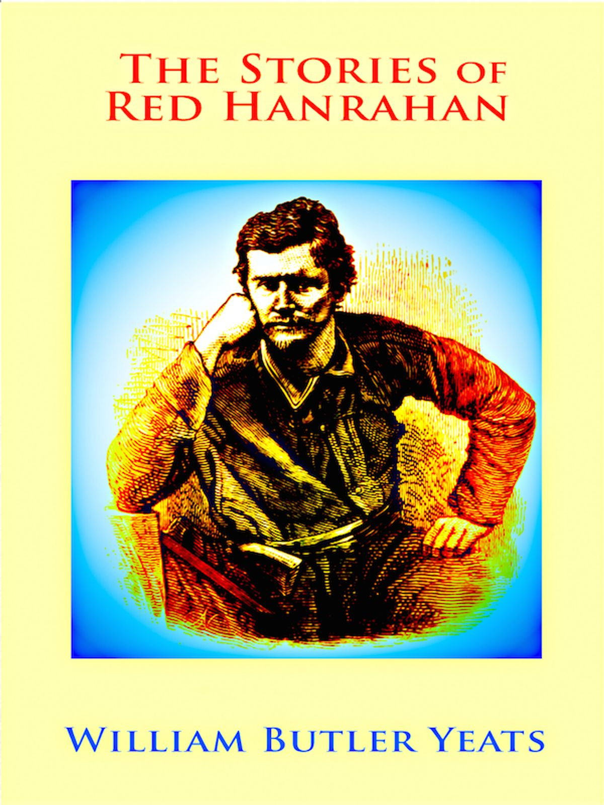

0
стр. з
0
сторінок

завантаження...

Уильям Батлер Йейтс
Рассказы о Рыжем Ханрахане
Книгу адаптировал Сергей Андреевский
Метод чтения Ильи Франка
Сontents
RED HANRAHAN
(Рыжий Ханрахан).
Hanrahan, the hedge schoolmaster, a tall, strong, red-haired young man (Ханрахан, учитель школы для бедняков, высокий, крепкий, рыжеволосый молодой человек; hedge school — школа для бедняков под открытым небом /XVIII-XIX вв. в Ирландии/; hedge — ограда, /живая/ изгородь; strong — сильный; здоровый, крепкий), came into the barn where some of the men of the village were sitting on Samhain Eve (вошел в амбар, где несколько мужчин из деревни сидели в канун Самайна; Samhain — Самайн /кельтский Новый год, празднуется в ночь на 1 ноября/). It had been a dwelling-house (/когда-то/ это был жилой дом), and when the man that owned it had built a better one (и когда человек, который владел им, построил дом получше; to build), he had put the two rooms together (он соединил две комнаты вместе; to put together — соединять), and kept it for a place to store one thing or another (и держал его в качестве места для хранения всякой всячины: «чтобы хранить одну вещь или другую»; to keep — держать, хранить; держать, содержать).
Samhain ['sQ:wIn, 'saueIn, 'sauIn], Eve [i:v], built [bIlt]
Hanrahan, the hedge schoolmaster, a tall, strong, red-haired young man, came into the barn where some of the men of the village were sitting on Samhain Eve. It had been a dwelling-house, and when the man that owned it had built a better one, he had put the two rooms together, and kept it for a place to store one thing or another.
There was a fire on the old hearth (в старом очаге горел: «был» огонь), and there were dip candles stuck in bottles (в бутылки были воткнуты маканые свечи; dip — окунание, макание; обработка погружением /в какой-л. раствор/; to stick), and there was a black quart bottle upon some boards (и черная, /емкостью/ в кварту, бутыль стояла на досках) that had been put across two barrels to make a table (которые были уложены на два бочонка, чтобы получился стол; across — через, поперек; to make — делать, изготавливать; образовывать). Most of the men were sitting beside the fire (большинство мужчин сидели у огня), and one of them was singing a long wandering song (а один из них пел длинную путаную песню; to wander — бродить, странствовать; путаться, говорить несвязно), about a Munster man and a Connaught man (об одном парне из Манстера и о /другом/ парне из Коннота; Munster, Connaught — провинции в Ирландии) that were quarrelling about their two provinces (которые ссорились из-за своих двух провинций = которые выясняли, чья провинция лучше).
hearth [hQ:T], Connaught ['kOnO:t], quarrel ['kwOr(q)l]
There was a fire on the old hearth, and there were dip candles stuck in bottles, and there was a black quart bottle upon some boards that had been put across two barrels to make a table. Most of the men were sitting beside the fire, and one of them was singing a long wandering song, about a Munster man and a Connaught man that were quarrelling about their two provinces.
Hanrahan went to the man of the house and said, 'I got your message' (Ханрахан подошел к хозяину дома и сказал: “Я получил твое послание”; man — человек, мужчина; хозяин); but when he had said that, he stopped (но сказав это, он запнулся; to stop — останавливаться; замолкать, делать паузу), for an old mountainy man that had a shirt and trousers of unbleached flannel (поскольку старик-горец, на котором были рубаха и штаны из неотбеленной фланели: «поскольку старый горный человек, который имел рубаху и штаны из неотбеленной фланели»), and that was sitting by himself near the door (и который сидел в одиночестве возле двери; by oneself — один, в одиночестве), was looking at him (смотрел на него), and moving an old pack of cards about in his hands and muttering (и вертел в руках старую колоду карт, /что-то/ бормоча; to move about — переставлять с места на место; pack — узел, связка; колода /карт./).
mountainy ['mauntInI], unbleached [An'blI:tSt], mutter ['mAtq]
Hanrahan went to the man of the house and said, 'I got your message'; but when he had said that, he stopped, for an old mountainy man that had a shirt and trousers of unbleached flannel, and that was sitting by himself near the door, was looking at him, and moving an old pack of cards about in his hands and muttering.
'Don't mind him,' said the man of the house (не обращай на него внимания, — сказал хозяин дома; to mind — помнить /устар./; обращать внимание); 'he is only some stranger came in awhile ago (он просто чужеземец, зашедший /сюда/ не так давно: «некоторое время тому назад»; only — только; просто, всего лишь; stranger — незнакомец; чужестранец), and we bade him welcome, it being Samhain night (и мы приютили его, ведь это ночь Самайна; to bid — просить, настаивать; приглашать /устар./; to bid smb. welcome — приветливо встретить кого-л., оказать гостеприимство), but I think he is not in his right wits (но мне думается, он не в своем уме; right — правильный; в нормальном состоянии, здоровый; wits — разум, ум). Listen to him now and you will hear what he is saying (вот прислушайся-ка к нему, и ты услышишь, что он говорит).'
They listened then, and they could hear (тут они прислушались и смогли услышать) the old man muttering to himself as he turned the cards (как старик бормочет про себя, когда переворачивает карты), 'Spades and Diamonds, Courage and Power (пики и бубны, храбрость и могущество; diamond — алмаз; diamonds — бубновая масть /карт./); Clubs and Hearts, Knowledge and Pleasure (трефы и червы, знания и удовольствия; club — дубинка; clubs — трефовая масть; heart — сердце; hearts — червонная масть).'
diamonds ['daIqmqnd], courage ['kArIdZ], knowledge ['nOlIdZ], pleasure ['pleZq]
'Don't mind him,' said the man of the house; 'he is only some stranger came in awhile ago, and we bade him welcome, it being Samhain night, but I think he is not in his right wits. Listen to him now and you will hear what he is saying.'
They listened then, and they could hear the old man muttering to himself as he turned the cards, 'Spades and Diamonds, Courage and Power; Clubs and Hearts, Knowledge and Pleasure.'
'That is the kind of talk he has been going on with for the last hour (подобного рода разговоры он ведет в течение последнего часа; to go on — много говорить, болтать /разг./),' said the man of the house (сказал хозяин дома), and Hanrahan turned his eyes from the old man (и Ханрахан отвел взгляд от старика; eyes — глаза; взгляд, взор) as if he did not like to be looking at him (как будто ему не нравилось смотреть на того).
'I got your message,' Hanrahan said then (я получил твое послание, — сказал тогда Ханрахан); '"he is in the barn with his three first cousins from Kilchriest (он в амбаре с тремя своими двоюродными братьями из Килкриста; first cousin — двоюродный брат, двоюродная сестра)," the messenger said (сказал посланец), "and there are some of the neighbours with them (и с ними там еще кое-кто из соседей)."'
hour ['auq], eye [aI], neighbour ['neIbq]
'That is the kind of talk he has been going on with for the last hour,' said the man of the house, and Hanrahan turned his eyes from the old man as if he did not like to be looking at him.
'I got your message,' Hanrahan said then; '"he is in the barn with his three first cousins from Kilchriest," the messenger said, "and there are some of the neighbours with them."'
'It is my cousin over there is wanting to see you (это мой кузен, вон там, /который/ хочет видеть тебя; over there — вон там; to want — испытывать недостаток /в чем-л./; хотеть, желать),' said the man of the house, and he called over a young frieze-coated man (сказал хозяин дома и подозвал молодого мужчину в ворсистой куртке; to coat — покрывать оболочкой, слоем /чего-л./; одевать), who was listening to the song (который слушал песню), and said, 'This is Red Hanrahan you have the message for' (и сказал: “Это Рыжий Ханрахан, для которого у тебя есть послание”).
'It is a kind message, indeed,' said the young man (это сердечное послание, на самом деле, — сказал молодой человек), 'for it comes from your sweetheart, Mary Lavelle (ибо оно происходит от твоей возлюбленной, Мэри Лэвелл; to come — приходить; происходить, иметь происхождение).'
'How would you get a message from her (как же ты получил послание от нее), and what do you know of her (и что ты знаешь о ней)?'
frieze [frI:z], young [jAN], sweetheart ['swi:thQ:t]
'It is my cousin over there is wanting to see you,' said the man of the house, and he called over a young frieze-coated man, who was listening to the song, and said, 'This is Red Hanrahan you have the message for.'
'It is a kind message, indeed,' said the young man, 'for it comes from your sweetheart, Mary Lavelle.'
'How would you get a message from her, and what do you know of her?'
'I don't know her, indeed (на самом деле-то я и не знаю ее), but I was in Loughrea yesterday (но вчера я был в Лафри), and a neighbour of hers that had some dealings with me was saying (и один ее сосед, у которого были кое-какие торговые дела со мной, говорит; to deal — распределять, раздавать; покупать и продавать) that she bade him send you word (что она просила его передать тебе сообщение; to bid; to send a word — «послать сообщение», известить, сообщить; word — слово; известие, сообщение), if he met any one from this side in the market (если он встретит кого-нибудь с этой стороны на рынке; to meet), that her mother has died from her (что ее мать уже отпустила ее, померев; from — от, из /в пространственном значении указывает на исходный пункт действия или движения/; указывает на освобождение, избавление /кого-л./), and if you have a mind yet to join with herself (и ежели ты еще желаешь сочетаться с нею; to have a mind to do smth. — быть не прочь, быть склонным /сделать что-л./; to join — соединять/ся/), she is willing to keep her word to you (она готова сдержать свое обещание, /данное/ тебе; word /зд./ — обещание, заверение).'
indeed [In'di:d], die [daI], herself [hE:'self]
'I don't know her, indeed, but I was in Loughrea yesterday, and a neighbour of hers that had some dealings with me was saying that she bade him send you word, if he met any one from this side in the market, that her mother has died from her, and if you have a mind yet to join with herself, she is willing to keep her word to you.'
'I will go to her indeed,' said Hanrahan (конечно, я поеду к ней, — сказал Ханрахан; indeed — в действительности, в самом деле; безусловно, конечно /усил./).
'And she bade you make no delay (и она просит тебя не мешкать; to make no delay — не задерживаться), for if she has not a man in the house before the month is out (поскольку, если у нее не будет мужчины в доме, прежде чем минет месяц; to be out — кончаться /о календарном периоде/), it is likely the little bit of land will be given to another (очень может быть, что тот маленький кусочек = участок земли отдадут другим; likely — вероятный, возможный).'
When Hanrahan heard that (когда Ханрахан услышал это), he rose up from the bench he had sat down on (он поднялся со скамьи, на которую было сел; to rise). 'I will make no delay indeed,' he said (конечно же, я не стану мешкать, — сказал он), 'there is a full moon, and if I get as far as Gilchreist to-night (сейчас полная луна, и если я попаду «так далеко, как» в Гилкрейст нынче ночью; to get — получать, добывать; добираться /до какого-л. места/), I will reach to her before the setting of the sun to-morrow (я прибуду к ней прежде, чем завтра сядет солнце; to reach — протягивать /особ. руку/; достигать, добираться).'
said [sed], delay [dI'leI], heard [hE:d]
'I will go to her indeed,' said Hanrahan.
'And she bade you make no delay, for if she has not a man in the house before the month is out, it is likely the little bit of land will be given to another.'
When Hanrahan heard that, he rose up from the bench he had sat down on. 'I will make no delay indeed,' he said, 'there is a full moon, and if I get as far as Gilchreist to-night, I will reach to her before the setting of the sun to-morrow.'
When the others heard that, they began to laugh at him (когда остальные услышали это, они начали смеяться над ним; to begin) for being in such haste to go to his sweetheart (за то, что он так торопится отправиться к своей возлюбленной; haste — поспешность, торопливость), and one asked him if he would leave his school in the old lime-kiln (а один спросил его, неужели он оставит свою школу в старой печи для обжига извести), where he was giving the children such good learning (где он дает детям такое хорошее обучение). But he said the children would be glad enough in the morning (но он сказал = ответил, что утром дети будут очень рады: «достаточно довольны») to find the place empty (обнаружить это место пустым; to find — находить, отыскивать; обнаруживать), and no one to keep them at their task (и что некому заставлять их выполнять задания; to keep smb. at smth. — заставлять кого-л. продолжать делать что-л.);
laugh [lQ:f], ask [Q:sk], enough [I'nAf]
When the others heard that, they began to laugh at him for being in such haste to go to his sweetheart, and one asked him if he would leave his school in the old lime-kiln, where he was giving the children such good learning. But he said the children would be glad enough in the morning to find the place empty, and no one to keep them at their task;
and as for his school he could set it up again in any place (а что касается школы, то он может снова организовать ее в любом другом месте; to set up — основывать, учреждать), having as he had his little inkpot hanging from his neck by a chain (имея, как он имел = имея всегда с собой свою маленькую чернильницу, висящую у него на шее на цепочке), and his big Virgil and his primer in the skirt of his coat (толстый том Вергилия: «своего большого Вергилия» и букварь под полой куртки; skirt — юбка; подол, пола).
Some of them asked him to drink a glass before he went (кто-то из них пригласил его выпить стаканчик, прежде чем он пойдет; to ask — спрашивать; приглашать), and a young man caught hold of his coat (а какой-то молодой парень схватил его за куртку; to catch hold of — схватить, ухватиться за /что-л./), and said he must not leave them without singing the song (и сказал, что он не должен уходить, не спев песни) he had made in praise of Venus and of Mary Lavelle (которую он сочинил во славу Венеры и Мэри Лэвелл; to make — создавать, сочинять; praise — похвала; прославление).
primer ['praImq], caught [kO:t], without [wI'Daut]
and as for his school he could set it up again in any place, having as he had his little inkpot hanging from his neck by a chain, and his big Virgil and his primer in the skirt of his coat.
Some of them asked him to drink a glass before he went, and a young man caught hold of his coat, and said he must not leave them without singing the song he had made in praise of Venus and of Mary Lavelle.
He drank a glass of whiskey (он выпил стакан виски), but he said he would not stop but would set out on his journey (но сказал, что не будет задерживаться, а отправится в путь: «в свое путешествие»; to stop — останавливаться; оставаться непродолжительное время; to set out — отправляться /в путешествие/).
'There's time enough, Red Hanrahan,' said the man of the house (времени достаточно, Рыжий Ханрахан, — сказал хозяин дома). 'It will be time enough for you to give up sport (у тебя будет еще время, чтобы отказаться от развлечений; to give up — бросить /привычки/; sport — удовольствие, развлечение) when you are after your marriage (после того как женишься: «когда ты будешь после своей женитьбы»), and it might be a long time before we will see you again (и, возможно, пройдет немало времени: «будет долгое время», прежде чем мы увидим тебя снова).'
'I will not stop,' said Hanrahan (я не стану задерживаться, — сказал Ханрахан); 'my mind would be on the roads all the time (мои помыслы будут в дороге все это время; mind — рассудок, ум; мысли, думы), bringing me to the woman that sent for me (унося меня к женщине, которая послала за мной), and she lonesome and watching till I come (она томится одиночеством и ждет, когда же я приду; lonesome — одинокий, тоскующий в одиночестве, to watch — бодрствовать; поджидать).'
journey ['dZE:nI], marriage ['mxrIdZ], might [maIt]
He drank a glass of whiskey, but he said he would not stop but would set out on his journey.
'There's time enough, Red Hanrahan,' said the man of the house. 'It will be time enough for you to give up sport when you are after your marriage, and it might be a long time before we will see you again.'
'I will not stop,' said Hanrahan; 'my mind would be on the roads all the time, bringing me to the woman that sent for me, and she lonesome and watching till I come.'
Some of the others came about him (несколько других подошли к нему), pressing him that had been such a pleasant comrade (уговаривая его, который был таким славным: «приятным» товарищем; to press — нажимать, надавливать; оказывать давление /на кого-л./), so full of songs and every kind of trick and fun (полным песен, всякого рода проделок и забав; trick — хитрость, обман; шалость), not to leave them till the night would be over (не покидать их, покуда не закончится ночь; to be over — окончиться, завершиться), but he refused them all (но он отказал им всем), and shook them off, and went to the door (отделался/освободился от них: «стряхнул их» и пошел к двери; to shake — трясти, стряхивать). But as he put his foot over the threshold (но только он поставил ногу на порог), the strange old man stood up (как поднялся тот чудной старик; strange — чужой, незнакомый; странный) and put his hand that was thin and withered like a bird's claw on Hanrahan's hand, and said (положил свою руку, которая была тонкой и высохшей, словно птичья лапка, на руку Ханрахана и сказал; claw — коготь; лапа с когтями /арх./):
pleasant ['pleznt], comrade ['kOmrId], claw [klO:]
Some of the others came about him, pressing him that had been such a pleasant comrade, so full of songs and every kind of trick and fun, not to leave them till the night would be over, but he refused them all, and shook them off, and went to the door. But as he put his foot over the threshold, the strange old man stood up and put his hand that was thin and withered like a bird's claw on Hanrahan's hand, and said:
'It is not Hanrahan, the learned man and the great songmaker (не Ханрахану, ученому человеку и сочинителю песен), that should go out from a gathering like this, on a Samhain night (следовало бы уходить от такой компании, как эта, в ночь Самайна; gathering — собирание; собрание, сборище). And stop here, now,' he said, 'and play a hand with me (ну-ка, останься здесь, — сказал он, — и сыграй со мной партейку; hand — рука; партия, кон); and here is an old pack of cards has done its work many a night before this (а вот старая колода карт, делавшая свое дело в течение многих ночей, предшествовавших нынешней; before — перед, до), and old as it is, there has been much of the riches of the world lost and won over it (и действительно, она так стара, что немалую часть сокровищ мира проиграли и выиграли при ее посредстве: «через нее»; as it is — фактически, в действительности; to lose; to win).'
One of the young men said (один из молодых парней сказал), 'It isn't much of the riches of the world has stopped with yourself, old man (не много же сокровищ мира задержалось у тебя, старик),' and he looked at the old man's bare feet (и посмотрел на босые ноги старика), and they all laughed (и все они рассмеялись).
learn [lE:n], world [wq:ld], much [mAtS]
'It is not Hanrahan, the learned man and the great songmaker, that should go out from a gathering like this, on a Samhain night. And stop here, now,' he said, 'and play a hand with me; and here is an old pack of cards has done its work many a night before this, and old as it is, there has been much of the riches of the world lost and won over it.'
One of the young men said, 'It isn't much of the riches of the world has stopped with yourself, old man,' and he looked at the old man's bare feet, and they all laughed.
But Hanrahan did not laugh (но Ханрахан не смеялся), but he sat down very quietly, without a word (а сел очень тихо, без единого слова). Then one of them said (тогда один из них сказал), 'So you will stop with us after all, Hanrahan (значит, ты все-таки остаешься с нами, Ханрахан; after all — «после всего», все же, в конце концов)'; and the old man said (и старик сказал = ответил): 'He will stop indeed, did you not hear me asking him (он и правда останется, разве ты не слышал, как я просил его)?'
They all looked at the old man then (тут они все посмотрели на старика) as if wondering where he came from (будто бы гадая, откуда он пришел; as if — как будто; to wonder — удивляться, изумляться; желать знать, задаваться вопросом, недоумевать). 'It is far I am come,' he said (издалече я пришел, — сказал он), 'through France I have come, and through Spain (через Францию прошел я и через Испанию), and by Lough Greine of the hidden mouth (и мимо скрытого устья /реки, впадающей в/ Лох-Грейн; lough /ирланд./ — озеро; mouth — рот, уста; устье /реки/, вход /в гавань/), and none has refused me anything (и никто не отказывал мне ни в чем).'
quietly ['kwaIqtlI], wonder ['wAndq], through [Tru:], France [fra:ns]
But Hanrahan did not laugh, but he sat down very quietly, without a word. Then one of them said, 'So you will stop with us after all, Hanrahan'; and the old man said: 'He will stop indeed, did you not hear me asking him?'
They all looked at the old man then as if wondering where he came from. 'It is far I am come,' he said, 'through France I have come, and through Spain, and by Lough Greine of the hidden mouth, and none has refused me anything.'
And then he was silent and nobody liked to question him (потом он замолчал, и никто не пожелал расспрашивать его; silent — безмолвный), and they began to play (и они начали играть). There were six men at the boards playing (на досках играли шесть человек), and the others were looking on behind (а остальные /стояли/ позади и смотрели). They played two or three games for nothing (две-три партии они сыграли без толку; game — развлечение, забава /устар./; партия, кон; for nothing — даром, без пользы), and then the old man took a fourpenny bit, worn very thin and smooth, out from his pocket (а потом старик вынул монетку в четыре пенса, истертую, совсем тонкую и гладкую, из своего кармана; to take out — вынимать; bit — кусок, кусочек; мелкая монета /разг./), and he called to the rest to put something on the game (и призвал остальных поставить что-нибудь на кон). Then they all put down something on the boards (тогда они все положили что-то на доски), and little as it was it looked much (и какой бы малой ни была эта /сумма/, выглядела она большой), from the way it was shoved from one to another (по тому, как ее толкали от одного к другому; way — путь; способ), first one man winning it and then his neighbour (когда сначала один человек выигрывал ее, а затем — его сосед).
silent ['saIlqnt], question ['kwestS(q)n], fourpenny ['fO:p(q)nI]
And then he was silent and nobody liked to question him, and they began to play. There were six men at the boards playing, and the others were looking on behind. They played two or three games for nothing, and then the old man took a fourpenny bit, worn very thin and smooth, out from his pocket, and he called to the rest to put something on the game. Then they all put down something on the boards, and little as it was it looked much, from the way it was shoved from one to another, first one man winning it and then his neighbour.
And some-times the luck would go against a man (и порой удача оборачивалась против человека; to go against — быть против) and he would have nothing left (и у него не оставалось ничего; to leave), and then one or another would lend him something (и тогда тот или иной одалживали ему кое-что), and he would pay it again out of his winnings (и он выплачивал это назад: «снова» из своего выигрыша), for neither good nor bad luck stopped long with anyone (потому что ни удача, ни невезенье долго ни на ком не задерживались).
And once Hanrahan said as a man would say in a dream (и как-то сказал Ханрахан, как обычно говорит человек во сне; once — один раз; однажды, некогда), 'It is time for me to be going the road (пришло время мне отправляться в дорогу)'; but just then a good card came to him (но тут же ему пришла хорошая карта; just then — в этот самый момент), and he played it out, and all the money began to come to him (и он разыграл ее, и все деньги стали: «начали» стекаться к нему).
neither ['naIDq], anyone ['enIwAn], money ['mAnI]
And some-times the luck would go against a man and he would have nothing left, and then one or another would lend him something, and he would pay it again out of his winnings, for neither good nor bad luck stopped long with anyone.
And once Hanrahan said as a man would say in a dream, 'It is time for me to be going the road'; but just then a good card came to him, and he played it out, and all the money began to come to him.
And once he thought of Mary Lavelle, and he sighed (а один раз он подумал о Мэри Лэвелл и вздохнул); and that time his luck went from him, and he forgot her again (но в этот раз удача отвернулась: «ушла» от него, и он снова о ней позабыл; to forget).
But at last the luck went to the old man and it stayed with him (но в конце концов удача перешла к старику и осталась с ним; at last — наконец), and all they had flowed into him (и все, что у них было, утекло к нему: «в него»), and he began to laugh little laughs to himself (а он начал слегка посмеиваться: «начал смеяться маленькими смешками» про себя), and to sing over and over to himself (и напевать раз за разом себе под нос; over and over — снова и снова), 'Spades and Diamonds, Courage and Power,' and so on (“пики и бубны, храбрость и могущество” и так далее; and so on — и так далее), as if it was a verse of a song (будто это был запев какой-то песенки; verse — стихотворная строка, стих).
once [wAns], thought [TO:t], sigh [saI]
And once he thought of Mary Lavelle, and he sighed; and that time his luck went from him, and he forgot her again.
But at last the luck went to the old man and it stayed with him, and all they had flowed into him, and he began to laugh little laughs to himself, and to sing over and over to himself, 'Spades and Diamonds, Courage and Power,' and so on, as if it was a verse of a song.
And after a while anyone looking at the men (и спустя некоторое время любой, наблюдающий за этими людьми), and seeing the way their bodies were rocking to and fro (и видящий то, как их тела раскачиваются из стороны в сторону; way /зд./ — способ, манера; to and fro — взад и вперед, туда и сюда), and the way they kept their eyes on the old man's hands (и то, как они не отрывают взглядов от рук старика; to keep — сохранять, удерживать /прежнее положение/), would think they had drink taken (подумал бы, что они /изрядно/ выпили; to take — брать; есть, пить; drink — питье, напиток), or that the whole store they had in the world was put on the cards (или что все, что у них есть на этом свете, поставлено на карту; whole — целый, весь; store — запас, резерв); but that was not so, for the quart bottle had not been disturbed since the game began (но это было не так, потому что к бутыль с квартой /виски/ стояла: «была» нетронутой с того момента, как игра началась; to disturb — приводить в беспорядок; тревожить, беспокоить), and was nearly full yet (и была еще почти полной), and all that was on the game was a few sixpenny bits and shillings (а все, что стояло на кону, — это несколько шестипенсовиков и шиллингов), and maybe a handful of coppers (и, возможно, горстка медных монет; copper — медь; медная монета).
whole [hqul], quart [kwO:t], few [fju:]
And after a while anyone looking at the men, and seeing the way their bodies were rocking to and fro, and the way they kept their eyes on the old man's hands, would think they had drink taken, or that the whole store they had in the world was put on the cards; but that was not so, for the quart bottle had not been disturbed since the game began, and was nearly full yet, and all that was on the game was a few sixpenny bits and shillings, and maybe a handful of coppers.
'You are good men to win and good men to lose,' said the old man (вы, ребята, умеете выигрывать и умеете проигрывать, — сказал старик; good — хороший; умелый, годный), 'you have play in your hearts (вы сердцем чувствуете игру: «у вас в сердцах есть игра»).' He began then to shuffle the cards and to mix them, very quick and fast (тут он начал тасовать карты и перемешивать их, очень быстро и проворно; quick — быстрый; проворный, спорый), till at last they could not see them to be cards at all (пока, наконец, они смогли увидеть, что это вообще не карты; at all — нисколько, ничуть), but you would think him to be making rings of fire in the air (а что он, как и вам бы показалось, делает круги из огня в воздухе; to think — думать, мыслить; представлять себе, воображать), as little lads would make them with whirling a lighted stick (как их делают маленькие мальчики, вращая подожженной палкой); and after that it seemed to them that all the room was dark (а после этого им показалось, что во всем помещении темно; room — место, пространство; помещение, комната), and they could see nothing but his hands and the cards (и они не видели: «не могли видеть» ничего, кроме его рук и карт).
shuffle ['SAf(q)l], quick [kwIk], whirling ['wE:lIN]
'You are good men to win and good men to lose,' said the old man, 'you have play in your hearts.' He began then to shuffle the cards and to mix them, very quick and fast, till at last they could not see them to be cards at all, but you would think him to be making rings of fire in the air, as little lads would make them with whirling a lighted stick; and after that it seemed to them that all the room was dark, and they could see nothing but his hands and the cards.
And all in a minute a hare made a leap out from between his hands (а всего лишь через мгновенье из его рук выпрыгнул: «сделал прыжок» заяц; between — между), and whether it was one of the cards that took that shape (и была ли это одна из карт, которая приняла такую форму), or whether it was made out of nothing in the palms of his hands (или он возник из ничего в ладонях его рук; to make — делать, изготавливать; создавать), nobody knew (никто не понял; to know — знать, иметь представление; понимать), but there it was running on the floor of the barn (но вот он побежал по полу амбара), as quick as any hare that ever lived (так же быстро, как любой заяц, который когда-либо жил /на свете/).
minute ['mInIt], between [bI'twi:n], palm [pQ:m]
And all in a minute a hare made a leap out from between his hands, and whether it was one of the cards that took that shape, or whether it was made out of nothing in the palms of his hands, nobody knew, but there it was running on the floor of the barn, as quick as any hare that ever lived.
Some looked at the hare, but more kept their eyes on the old man (одни смотрели на зайца, но большинство не отрывало глаз от старика; to keep eye — неотрывно наблюдать, следить /за кем-л., чем-л./), and while they were looking at him a hound made a leap out between his hands (и когда они смотрели на него, из его рук выпрыгнула гончая), the same way as the hare did (точно так же, как это сделал заяц), and after that another hound and another (а за ней — еще одна гончая, и еще одна), till there was a whole pack of them following the hare round and round the barn (покуда целая свора их не /стала/ преследовать зайца по всему амбару; pack — тюк, связка; свора; round and round — кругом, со всех сторон).
The players were all standing up now, with their backs to the boards (все игравшие стояли теперь спиной к доскам), shrinking from the hounds (увертываясь от собак; to shrink — съеживаться, сморщиваться; отскочить, отшатнуться), and nearly deafened with the noise of their yelping (почти оглохшие от их тявканья; noise — шум, гам),
while [waIl], nearly ['nIqlI], deafen [defn]
Some looked at the hare, but more kept their eyes on the old man, and while they were looking at him a hound made a leap out between his hands, the same way as the hare did, and after that another hound and another, till there was a whole pack of them following the hare round and round the barn.
The players were all standing up now, with their backs to the boards, shrinking from the hounds, and nearly deafened with the noise of their yelping,
but as quick as the hounds were they could not overtake the hare (но какими бы быстрыми гончие ни были, им не удавалось догнать зайца), but it went round (а тот бегал по кругу), till at the last it seemed as if a blast of wind burst open the barn door (пока, наконец, как показалось, порыв ветра не распахнул дверь амбара; to burst open — распахнуться), and the hare doubled and made a leap over the boards (заяц сделал петлю и прыгнул через доски; to double — удваивать; делать петли, сбивать со следа /о звере/; leap — прыжок) where the men had been playing (где = на которых перед этим играли мужчины), and went out of the door and away through the night (выбежал за дверь и /помчался/ прочь сквозь темноту; night — ночь; темнота, мрак), and the hounds over the boards and through the door after it (а собаки, /перепрыгивая/ через доски, сквозь дверной проем /бросились/ за ним; door — дверь; дверной проем).
Then the old man called out (тут старик закричал), 'Follow the hounds, follow the hounds, and it is a great hunt you will see to-night (следуйте за псами, и этой ночью вы увидите знатную травлю; great — большой, огромный; замечательный, восхитительный),' and he went out after them (и он выбежал за ними).
double [dAbl], door [dO:], great [greIt]
but as quick as the hounds were they could not overtake the hare, but it went round, till at the last it seemed as if a blast of wind burst open the barn door, and the hare doubled and made a leap over the boards where the men had been playing, and went out of the door and away through the night, and the hounds over the boards and through the door after it.
Then the old man called out, 'Follow the hounds, follow the hounds, and it is a great hunt you will see to-night,' and he went out after them.
But used as the men were to go hunting after hares (но как ни привычны были эти люди к травле зайцев), and ready as they were for any sport (и как ни готовы к любой забаве), they were in dread to go out into the night (они побоялись выйти в ночь; to be in dread — испытывать страх), and it was only Hanrahan that rose up and that said (и один лишь Ханрахан поднялся и так сказал; to rise), 'I will follow, I will follow on (я последую /за ними/; on — вперед).'
'You had best stop here, Hanrahan (тебе бы лучше остаться здесь, Ханрахан),' the young man that was nearest him said (сказал молодой парень, что был ближе всех к нему: «ближайший к нему»), 'for you might be going into some great danger (иначе ты можешь подвергнуться какой-нибудь серьезной опасности; to go — подвергаться /чему-л./).'
were [wE:], dread [dred], great [greIt]
But used as the men were to go hunting after hares, and ready as they were for any sport, they were in dread to go out into the night, and it was only Hanrahan that rose up and that said, 'I will follow, I will follow on.'
'You had best stop here, Hanrahan,' the young man that was nearest him said, 'for you might be going into some great danger.'
But Hanrahan said, 'I will see fair play, I will see fair play' (но Ханрахан сказал: “Я увижу славную забаву”; fair — красивый, прекрасный /арх., поэт./), and he went stumbling out of the door like a man in a dream (и он пошел, спотыкаясь, через дверь, как человек во сне; to stumble — спотыкаться), and the door shut after him as he went (и дверь закрылась за ним, когда он вышел).
He thought he saw the old man in front of him (ему почудилось, что он видит старика перед собой), but it was only his own shadow (но то была лишь его собственная тень) that the full moon cast on the road before him (которую полная луна отбрасывала на дорогу перед ним), but he could hear the hounds (но он слышал: «мог слышать» гончих) crying after the hare over the wide green fields of Granagh (с лаем /мчащихся/ за зайцем по широким зеленым полям Гранага; to cry — кричать; выть, лаять /о животных/), and he followed them very fast (и он весьма быстро следовал за ними) for there was nothing to stop him (ибо не было ничего, что останавливало бы его);
fair [fFq], shadow ['Sxdqu], field [fi:ld]
But Hanrahan said, 'I will see fair play, I will see fair play,' and he went stumbling out of the door like a man in a dream, and the door shut after him as he went.
He thought he saw the old man in front of him, but it was only his own shadow that the full moon cast on the road before him, but he could hear the hounds crying after the hare over the wide green fields of Granagh, and he followed them very fast for there was nothing to stop him;
and after a while he came to smaller fields (и через некоторое время он достиг полей поменьше) that had little walls of loose stones around them (которые были огорожены невысокими стенами: «которые имели маленькие стены» из незакрепленных камней), and he threw the stones down as he crossed them (и он сбрасывал камни вниз = камни скатывались вниз из-под его ног, когда он перелезал через них; to throw; to cross — пересекать, переходить /через что-л./), and did not wait to put them up again (и не останавливался: «не дожидался», чтобы поднять их снова; to put up — поднимать); and he passed by the place where the river goes under ground at Ballylee (и прошел он мимо того места, где река протекает под землей у /замка/ Бэллили), and he could hear the hounds going before him up towards the head of the river (и он слышал, что собаки бегут впереди него по направлению к верховью реки; head — голова; верховье /реки/).
while [waIl], again [q'gen, q'geIn], towards [tq'wO:dz]
and after a while he came to smaller fields that had little walls of loose stones around them, and he threw the stones down as he crossed them, and did not wait to put them up again; and he passed by the place where the river goes under ground at Ballylee, and he could hear the hounds going before him up towards the head of the river.
Soon he found it harder to run, for it was uphill he was going (вскоре он обнаружил, что бежать /стало/ труднее, поскольку он двигался на подъем; to find — находить, отыскивать; обнаруживать), and clouds came over the moon (и тучи наползли на луну), and it was hard for him to see his way (и ему трудно было различать: «видеть» дорогу), and once he left the path to take a short cut (и один раз он оставил тропу, чтобы срезать путь; take a short cut — срезать путь; cut — порез, разрез; путь напрямик), but his foot slipped into a boghole and he had to come back to it (но его нога соскользнула в болотину, и ему пришлось вернуться на нее = на тропу; bog — болото, трясина; hole — дыра, отверстие; яма, впадина). And how long he was going he did not know, or what way he went (и как долго он бежал и по какой дороге, он не знал), but at last he was up on the bare mountain (но, наконец, он поднялся на /совершенно/ голую гору), with nothing but the rough heather about him (/где не было/ ничего, кроме жесткого вереска вокруг него), and he could neither hear the hounds nor any other thing (и он не слышал ни гончих, ни каких-то других звуков; thing — вещь, предмет; нечто, что-то).
cloud ['klaud], boghole ["bqug'hqul], heather ['heDq]
Soon he found it harder to run, for it was uphill he was going, and clouds came over the moon, and it was hard for him to see his way, and once he left the path to take a short cut, but his foot slipped into a boghole and he had to come back to it. And how long he was going he did not know, or what way he went, but at last he was up on the bare mountain, with nothing but the rough heather about him, and he could neither hear the hounds nor any other thing.
But their cry began to come to him again (но вот их лай снова начал доноситься до него; to come — приходить; доходить, достигать), at first far off and then very near (сначала издалека, а потом /откуда-то/ очень близко; far off — вдали), and when it came quite close to him (и когда он раздался совсем рядом с ним), it went up all of a sudden into the air (то вдруг поднялся в воздух; all of a sudden — внезапно, вдруг), and there was the sound of hunting over his head (и звуки охоты /теперь/ были у него над головой); then it went away northward (потом они /стали/ удаляться на север) till he could hear nothing more at all (до тех пор, пока он вообще не смог ничего больше расслышать). 'That's not fair,' he said, 'that's not fair' (ничуть это не славно, — сказал он). And he could walk no longer (идти он больше не мог), but sat down on the heather where he was (а сел на вереск прямо там, где стоял: «где он был»), in the heart of Slieve Echtge (в /самом/ сердце Слив-Эхтге; Slieve Echtge — горная гряда в графствах Голуэй и Клэр), for all the strength had gone from him (поскольку все силы оставили его), with the dint of the long journey he had made (вместе с впечатлениями от долгого путешествия, которое он проделал; dint — след, вмятина /от удара/; отпечаток).
cry [kraI], quite [kwaIt], northward ['nO:Twqdz]
But their cry began to come to him again, at first far off and then very near, and when it came quite close to him, it went up all of a sudden into the air, and there was the sound of hunting over his head; then it went away northward till he could hear nothing more at all. 'That's not fair,' he said, 'that's not fair.' And he could walk no longer, but sat down on the heather where he was, in the heart of Slieve Echtge, for all the strength had gone from him, with the dint of the long journey he had made.
And after a while he took notice that there was a door close to him (спустя некоторое время он заметил, что рядом с ним находится какая-то дверь; to take notice — замечать), and a light coming from it (и из нее льется свет), and he wondered that being so close to him he had not seen it before (и он удивился, что /хотя она/ находится так близко от него, он не видел = не замечал ее прежде). And he rose up, and tired as he was he went in at the door (он поднялся и, хотя был уставшим: «/будучи таким/ уставшим, каким он был», вошел в эту дверь), and although it was night time outside (и несмотря на то, что снаружи стояла ночная пора), it was daylight he found within (внутри он обнаружил дневной свет). And presently he met with an old man (и тотчас же ему повстречался старик; to meet) that had been gathering summer thyme and yellow flag-flowers (который собирал /растущие/ летом тимьян и желтые ирисы), and it seemed as if all the sweet smells of the summer were with them (и казалось, будто с ними были = от них исходили все сладкие запахи лета).
notice ['nqutIs], daylight ['deIlaIt], thyme [taIm]
And after a while he took notice that there was a door close to him, and a light coming from it, and he wondered that being so close to him he had not seen it before. And he rose up, and tired as he was he went in at the door, and although it was night time outside, it was daylight he found within. And presently he met with an old man that had been gathering summer thyme and yellow flag-flowers, and it seemed as if all the sweet smells of the summer were with them.
And the old man said (и старик сказал): 'It is a long time you have been coming to us (долгое же время ты шел к нам), Hanrahan the learned man and the great songmaker (Ханрахан, ученый человек и великий сочинитель песен).'
And with that he brought him into a very big shining house (и с этими /словами/ он отвел его в очень большой светящийся дом), and every grand thing Hanrahan had ever heard of (и все великолепные вещи, о которых он когда-либо слышал; every — каждый, всякий; grand — большой, величественный; великолепный, роскошный), and every colour he had ever seen (и все цвета, которые он когда-либо видел), were in it (были в нем). There was a high place at the end of the house (в конце дома находилось возвышение: «высокое место»), and on it there was sitting in a high chair a woman (и на нем сидела в высоком кресле женщина), the most beautiful the world ever saw (самая прекрасная, какую когда-либо видел мир), having a long pale face and flowers about it (у /нее/ было длинное бледное лицо, а вокруг него — цветы), but she had the tired look of one that had been long waiting (но вид она имела усталый, как у того, кто долго ждал).
brought [brO:t], colour ['kAlq], beautiful ['bju:tqful]
And the old man said: 'It is a long time you have been coming to us, Hanrahan the learned man and the great songmaker.'
And with that he brought him into a very big shining house, and every grand thing Hanrahan had ever heard of, and every colour he had ever seen, were in it. There was a high place at the end of the house, and on it there was sitting in a high chair a woman, the most beautiful the world ever saw, having a long pale face and flowers about it, but she had the tired look of one that had been long waiting.
And there were sitting on the step below her chair four grey old women (а на ступеньке ниже ее кресла сидели четыре седые старухи; grey — серый; седой), and the one of them was holding a great cauldron in her lap (и одна из них держала огромный котел у себя на подоле; lap — колени /сидящего человека/; подол); and another a great stone on her knees (а другая — огромный камень у себя на коленях), and heavy as it was it seemed light to her (и хотя он и был тяжелым, для нее он казался легким); and another of them had a very long spear (а еще у одной из них было очень длинное копье) that was made of pointed wood (которое было сделано из заостренного дерева); and the last of them had a sword that was without a scabbard (а у последней из них был меч, но без ножен). Red Hanrahan stood looking at them for a long Hanrahan-time (Рыжий Ханрахан стоял и смотрел на них долгое, /по меркам самого/ Ханрахана, время), but none of them spoke any word to him or looked at him at all (но ни одна из них не произнесла ни слова и вообще не взглянула на него).
cauldron ['kO:ldrqn], knees [ni:z], sword [sO:d]
And there were sitting on the step below her chair four grey old women, and the one of them was holding a great cauldron in her lap; and another a great stone on her knees, and heavy as it was it seemed light to her; and another of them had a very long spear that was made of pointed wood; and the last of them had a sword that was without a scabbard. Red Hanrahan stood looking at them for a long Hanrahan-time, but none of them spoke any word to him or looked at him at all.
And he had it in his mind to ask (и он намеревался спросить; to have in mind — намереваться /что-л. сделать/) who that woman in the chair was, that was like a queen (кто такая эта женщина в кресле, что /так/ похожа на королеву), and what she was waiting for (и чего она ожидает); but ready as he was with his tongue and afraid of no person (но хоть он и был остер на язык и не боялся никого; ready tongue — хорошо подвешенный язык), he was in dread now to speak to so beautiful a woman (теперь ему стало страшно заговорить с такой прекрасной женщиной), and in so grand a place (и в таком величественном месте). And then he thought to ask what were the four things (а потом он решил спросить, что это за четыре предмета; to think — думать; намереваться, замышлять) the four grey old women were holding like great treasures (которые четыре седые старухи держали, словно величайшие сокровища), but he could not think of the right words to bring out (но он не смог придумать = подобрать подходящие слова, чтобы сказать это; to bring out — произносить, высказывать).
chair ['tSFq], tongue [tAN], treasure ['treZq]
And he had it in his mind to ask who that woman in the chair was, that was like a queen, and what she was waiting for; but ready as he was with his tongue and afraid of no person, he was in dread now to speak to so beautiful a woman, and in so grand a place. And then he thought to ask what were the four things the four grey old women were holding like great treasures, but he could not think of the right words to bring out.
Then the first of the old women rose up (тут первая из старух поднялась; to rise), holding the cauldron between her two hands (держа котел в руках: «между своими двумя руками»), and she said 'Pleasure,' and Hanrahan said no word (и она сказала: “Отрада”, а Ханрахан не сказал ни слова). Then the second old woman rose up with the stone in her hands, and she said 'Power' (затем вторая старуха поднялась с камнем в руках и сказала: “Могущество”); and the third old woman rose up with the spear in her hand, and she said 'Courage' (и третья старуха поднялась с копьем в руке и сказала: “Храбрость”); and the last of the old women rose up having the sword in her hands, and she said 'Knowledge' (и последняя из старух поднялась, держа меч в руках, и сказала: “Знание”). And everyone, after she had spoken, waited as if for Hanrahan to question her (и каждая, после того, как высказалась, ждала, спросит ли Ханрахан ее), but he said nothing at all (но он не сказал вообще ничего).
third [TE:d], courage ['kArIdZ], knowledge ['nOlIdZ]
Then the first of the old women rose up, holding the cauldron between her two hands, and she said 'Pleasure,' and Hanrahan said no word. Then the second old woman rose up with the stone in her hands, and she said 'Power'; and the third old woman rose up with the spear in her hand, and she said 'Courage'; and the last of the old women rose up having the sword in her hands, and she said 'Knowledge.' And everyone, after she had spoken, waited as if for Hanrahan to question her, but he said nothing at all.
And then the four old women went out of the door (и тогда эти четыре старухи вышли за дверь), bringing their tour treasures with them (унося свои четыре сокровища с собой), and as they went out one of them said (и когда они выходили, одна из них сказала), 'He has no wish for us (у него нет нужды в нас; wish — желание; потребность)'; and another said, 'He is weak, he is weak' (а другая сказала: “Он слаб, он слаб”); and another said, 'He is afraid' (и еще одна сказала: “Он напуган”); and the last said, 'His wits are gone from him' (а последняя сказала: “Разум покинул его”). And then they all said (а затем они все сказали) 'Echtge, daughter of the Silver Hand, must stay in her sleep (Эхтге, дочь Серебряной Руки, будет продолжать спать: «должна оставаться в своем сне»; to stay — оставаться, не уходить; оставаться /в каком-л. положении, состоянии/). It is a pity, it is a great pity' (жаль, ужасно жаль: «жалость, огромная жалость»).
And then the woman that was like a queen gave a very sad sigh (и тут женщина, которая была похожа на богиню, очень грустно вздохнула: «издала очень грустный вздох»), and it seemed to Hanrahan as if the sigh had the sound in it of hidden streams (и, как показалось Ханрахану, в этом вздохе слышался шум скрытых водных потоков);
daughter ['dO:tq], sigh [saI], sound [saund]
And then the four old women went out of the door, bringing their tour treasures with them, and as they went out one of them said, 'He has no wish for us'; and another said, 'He is weak, he is weak'; and another said, 'He is afraid'; and the last said, 'His wits are gone from him.' And then they all said 'Echtge, daughter of the Silver Hand, must stay in her sleep. It is a pity, it is a great pity.'
And then the woman that was like a queen gave a very sad sigh, and it seemed to Hanrahan as if the sigh had the sound in it of hidden streams;
and if the place he was in had been ten times grander and more shining than it was (и /даже/ если бы место, в котором он находился, стало в десять раз более величественным и более сияющим, чем было), he could not have hindered sleep from coming on him (он не мог бы помешать сну овладеть собой ; to come on /зд./ — наступать, надвигаться); and he staggered like a drunken man and lay down there and then (и он зашатался, словно пьяный, и тут же повалился наземь; there and then — тотчас же, на месте: «там и тогда»).
When Hanrahan awoke, the sun was shining on his face (когда Ханрахан проснулся, солнце сияло ему в лицо; to awake), but there was white frost on the grass around him (но на траве вокруг него был белый иней; frost — мороз; иней), and there was ice on the edge of the stream he was lying by (и лед был по краям речки, возле которой он лежал), and that goes running on through Daire-caol and Druim-da-rod (и которая течет через Дайр-кэол и Друим-да-род; to run — бежать, бегать; течь, струиться).
drunken ['drANk(q)n], shine [SaIn], grass [grQ:s]
and if the place he was in had been ten times grander and more shining than it was, he could not have hindered sleep from coming on him; and he staggered like a drunken man and lay down there and then.
When Hanrahan awoke, the sun was shining on his face, but there was white frost on the grass around him, and there was ice on the edge of the stream he was lying by, and that goes running on through Daire-caol and Druim-da-rod.
He knew by the shape of the hills and by the shining of Lough Greine in the distance (он понял по форме холмов и по блеску /поверхности/ Лох-Грейн вдали) that he was upon one of the hills of Slieve Echtge (что находится на одном из холмов Слив-Эхтге), but he was not sure how he came there (но он и понятия не имел: «не был уверен», как добрался туда); for all that had happened in the barn had gone from him (поскольку все, что произошло в амбаре, пропало из его /памяти/), and all of his journey but the soreness of his feet and the stiffness in his bones (и все, /связанное/ с его путешествием, кроме боли в ногах и одеревенения в костях; stiffness — жесткость; скованность).
It was a year after that (год спустя после этого), there were men of the village of Cappaghtagle sitting by the fire in a house on the roadside (четверо мужчин из деревеньки Каппахтагл сидели у огня в доме у дороги; roadside — обочина, край дороги), and Red Hanrahan that was now very thin and worn (и Рыжий Ханрахан, который теперь был очень худ и изможден; thin — тонкий; худой; worn — изношенный; усталый, изнуренный) and his hair very long and wild (а волосы его /были/ очень длинны и спутаны; wild — дикий, дикорастущий; растрепанный, в беспорядке /разг./), came to the half-door and asked leave to come in and rest himself (подошел к двустворчатой двери и попросил позволения войти и отдохнуть; half-door — двустворчатая дверь);
sure ['Suq], soreness ['sO:nqs], half-door ["hQ:f'dO:]
He knew by the shape of the hills and by the shining of Lough Greine in the distance that he was upon one of the hills of Slieve Echtge, but he was not sure how he came there; for all that had happened in the barn had gone from him, and all of his journey but the soreness of his feet and the stiffness in his bones.
It was a year after that, there were men of the village of Cappaghtagle sitting by the fire in a house on the roadside, and Red Hanrahan that was now very thin and worn and his hair very long and wild, came to the half-door and asked leave to come in and rest himself;
and they bid him welcome because it was Samhain night (и они оказали ему гостеприимство, поскольку была ночь Самайна). He sat down with them (он уселся с ними), and they gave him a glass of whiskey out of a quart bottle (и они дали = налили ему стакан виски из бутыли емкостью в кварту); and they saw the little inkpot hanging about his neck (они увидели маленькую чернильницу, висящую у него на шее), and knew he was a scholar (и поняли, что он — ученый), and asked for stories about the Greeks (и попросили его /рассказать/ истории про греков).
He took the Virgil out of the big pocket of his coat (он достал /том/ Вергилия из большого кармана своей куртки; to take out — вынимать), but the cover was very black and swollen with the wet (но переплет был очень грязным и разбухшим от сырости; cover — покрышка, обертка; переплет, обложка; black — черный; грязный), and the page when he opened it was very yellow (а страница, когда он открыл ее, оказалась весьма пожелтевшей), but that was no great matter (но это не имело большого значения; no matter — неважно, не имеет значения; matter — материал, вещество; дело, вопрос), for he looked at it like a man that had never learned to read (потому что он смотрел на нее как человек, который никогда не учился читать).
because [bI'kOz], whiskey ['wIskI], scholar ['skOlq]
and they bid him welcome because it was Samhain night. He sat down with them, and they gave him a glass of whiskey out of a quart bottle; and they saw the little inkpot hanging about his neck, and knew he was a scholar, and asked for stories about the Greeks.
He took the Virgil out of the big pocket of his coat, but the cover was very black and swollen with the wet, and the page when he opened it was very yellow, but that was no great matter, for he looked at it like a man that had never learned to read.
Some young man that was there began to laugh at him then (тут какой-то молодой парень, который был там, начал смеяться над ним), and to ask why did he carry so heavy a book with him (и спросил, зачем он носит с собой такую тяжелую книгу) when he was not able to read it (если не способен прочитать ее).
It vexed Hanrahan to hear that, and he put the Virgil back in his pocket (Ханрахан рассердился, услышав это, и убрал Вергилия назад в карман) and asked if they had a pack of cards among them (и спросил, есть ли у них: «среди них» колода карт), for cards were better than books (поскольку карты лучше, чем книги). When they brought out the cards he took them and began to shuffle them (когда достали карты, он взял их и начал тасовать), and while he was shuffling them something seemed to come into his mind (и пока он их тасовал, что-то, похоже, пришло ему на ум; to seem — казаться), and he put his hand to his face like one that is trying to remember, and he said (и он закрыл лицо рукой: «положил свою руку на свое лицо», как человек, который пытается /что-то/ вспомнить, и сказал; one — единица /цифра/; человек):
able [eIbl], shuffle [SAf(q)l], mind [maInd]
Some young man that was there began to laugh at him then, and to ask why did he carry so heavy a book with him when he was not able to read it.
It vexed Hanrahan to hear that, and he put the Virgil back in his pocket and asked if they had a pack of cards among them, for cards were better than books. When they brought out the cards he took them and began to shuffle them, and while he was shuffling them something seemed to come into his mind, and he put his hand to his face like one that is trying to remember, and he said:
'Was I ever here before, or where was I on a night like this (бывал ли я здесь когда-то раньше, и где я был в ночь, похожую на эту)?' and then of a sudden he stood up and let the cards fall to the floor, and he said (и тут вдруг он вскочил, позволив картам упасть на пол = уронив карты на пол, и сказал), 'Who was it brought me a message from Mary Lavelle (кто принес мне послание от Мэри Лэвелл)?'
'We never saw you before now, and we never heard of Mary Lavelle (мы никогда не видели тебя прежде и никогда не слыхали о Мэри Лэвелл; before now — до сих пор),' said the man of the house (сказал хозяин дома). 'And who is she,' he said (а кто она такая, — сказал = спросил он), 'and what is it you are talking about (и о чем таком ты говоришь)?'
sudden [sAdn], floor [flO:], talk [tO:k]
'Was I ever here before, or where was I on a night like this?' and then of a sudden he stood up and let the cards fall to the floor, and he said, 'Who was it brought me a message from Mary Lavelle?'
'We never saw you before now, and we never heard of Mary Lavelle,' said the man of the house. 'And who is she,' he said, 'and what is it you are talking about?'
'It was this night a year ago, I was in a barn (это было в эту ночь год назад, я был в амбаре), and there were men playing cards, and there was money on the table (парни играли в карты, на столе лежали деньги), they were pushing it from one to another here and there (они двигали их от одного к другому, туда и сюда; here and there — там и сям, туда и сюда: «здесь и там») —and I got a message, and I was going out of the door (я получил послание и выходил за дверь) to look for my sweetheart that wanted me, Mary Lavelle (чтоб отыскать свою возлюбленную, которая нуждалась во мне, Мэри Лэвелл; to look for — искать /кого-л., что-л./).' And then Hanrahan called out very loud (и тут Ханрахан выкрикнул очень громко): 'Where have I been since then (где же я был с тех пор)? Where was I for the whole year (где я пробыл целый год)?'
year [jIq, jE:], want [wOnt], loud [laud]
'It was this night a year ago, I was in a barn, and there were men playing cards, and there was money on the table, they were pushing it from one to another here and there—and I got a message, and I was going out of the door to look for my sweetheart that wanted me, Mary Lavelle.' And then Hanrahan called out very loud: 'Where have I been since then? Where was I for the whole year?'
'It is hard to say where you might have been in that time (трудно сказать, где ты мог побывать за это время),' said the oldest of the men (сказал старший из мужчин), 'or what part of the world you may have travelled (или в какой части мира ты мог путешествовать); and it is like enough you have the dust of many roads on your feet (и очень похоже, что у тебя на ногах пыль множества дорог; enough — достаточно; весьма, довольно /усил./); for there are many go wandering and forgetting like that,' he said (ибо многие ходят странствовать и точно так же /обо всем/ забывают; like that — подобным образом), 'when once they have been given the touch (ежели однажды их пометят: «к ним прикоснутся»; to give — давать; в сочетании с последующим существительным выражает действие, соответствующее значению существительного; touch — прикосновение; общение, контакт).'
'That is true,' said another of the men (это правда, — сказал другой «из этих мужчин»). 'I knew a woman went wandering like that (я знал одну женщину, которая тоже так скиталась) through the length of seven years (на протяжении семи лет; length — длина; длительность, продолжительность);
might [maIt], wander ['wOndq], true [tru:]
'It is hard to say where you might have been in that time,' said the oldest of the men, 'or what part of the world you may have travelled; and it is like enough you have the dust of many roads on your feet; for there are many go wandering and forgetting like that,' he said, 'when once they have been given the touch.'
'That is true,' said another of the men. 'I knew a woman went wandering like that through the length of seven years;
she came back after (после она вернулась), and she told her friends she had often been glad enough (и рассказывала своим друзьям, что часто была очень рада) to eat the food that was put in the pig's trough (есть пищу, которую положили в свиное корыто). And it is best for you to go to the priest now,' he said (лучшее для тебя сейчас — это пойти к священнику, — сказал он), 'and let him take off you whatever may have been put upon you (и пусть он снимет с тебя все, что, возможно, было на тебя наложено; to take off — удалять, снимать).'
'It is to my sweetheart I will go, to Mary Lavelle,' said Hanrahan (к своей любимой я пойду, к Мэри Лэвелл, — сказал Ханрахан); 'it is too long I have delayed (слишком долго я медлил), how do I know what might have happened to her in the length of a year (откуда мне знать, что могло случиться с нею за год)?'
trough [trOf], priest [pri:st], whatever [wOt'evq]
she came back after, and she told her friends she had often been glad enough to eat the food that was put in the pig's trough. And it is best for you to go to the priest now,' he said, 'and let him take off you whatever may have been put upon you.'
'It is to my sweetheart I will go, to Mary Lavelle,' said Hanrahan; 'it is too long I have delayed, how do I know what might have happened to her in the length of a year?'
He was going out of the door then (затем он пошел за дверь), but they all told him it was best for him to stop the night (но они все сказали ему, что для него лучше будет остановиться = остаться на ночь), and to get strength for the journey (и набраться сил для путешествия); and indeed he wanted that, for he was very weak (и ему действительно это было нужно, потому что он был очень слаб), and when they gave him food (и когда они дали ему еду) he ate it like a man that had never seen food before (он ел как человек, который никогда не видел еды раньше), and one of them said, 'He is eating as if he had trodden on the hungry grass' (и один из них сказал: “Он ест так, будто до этого пасся на скудной травке”; to tread — ступать, шагать; топтать; hungry — голодный; скудный /о пище/). It was in the white light of the morning he set out (уже при белом свете утра он отправился в путь; to set out — отправляться /в путешествие/), and the time seemed long to him till he could get to Mary Lavelle's house (и время, казалось, долго /текло/ для него, покуда он не добрался до дома Мэри Лэвелл; to get /зд./ — добираться /до какого-л. места/).
all [O:l], hungry ['hANgrI], grass [grQ:s]
He was going out of the door then, but they all told him it was best for him to stop the night, and to get strength for the journey; and indeed he wanted that, for he was very weak, and when they gave him food he ate it like a man that had never seen food before, and one of them said, 'He is eating as if he had trodden on the hungry grass.' It was in the white light of the morning he set out, and the time seemed long to him till he could get to Mary Lavelle's house.
But when he came to it, he found the door broken (но когда он подошел к нему, то обнаружил, что дверь сломана; to break), and the thatch dropping from the roof (солома свисает с кровли; to drop — капать, стекать каплями; падать, вываливаться), and no living person to be seen (и не видно ни одного живого человека). And when he asked the neighbours what had happened to her (а когда он расспросил соседей, что же случилось с ней), all they could say was that she had been put out of the house (все, что они смогли рассказать, это то, что ее выгнали из дома; to put out — выгонять, устранять), and had married some labouring man (и /что она/ вышла замуж за какого-то рабочего парня), and they had gone looking for work to London or Liverpool or some big place (и они уехали искать работу то ли в Лондон, то ли в Ливерпуль, то ли в какой-то другой большой город; place — место; местечко, город). And whether she found a worse place or a better he never knew (но нашла ли она худшее место или лучшее, он так никогда и не узнал), but anyway he never met with her or with news of her again (но, как бы то ни было, он никогда не встречался с нею и больше /не получал/ от нее вестей: «или /не встречался/ с вестями о ней»; to meet — встречать/ся/; again — снова, вновь).
person ['pE:sn], labouring ['leIbqrIN], London ['lAndqn]
But when he came to it, he found the door broken, and the thatch dropping from the roof, and no living person to be seen. And when he asked the neighbours what had happened to her, all they could say was that she had been put out of the house, and had married some labouring man, and they had gone looking for work to London or Liverpool or some big place. And whether she found a worse place or a better he never knew, but anyway he never met with her or with news of her again.
THE TWISTING OF THE ROPE
(Плетение веревки; to twist — крутить, скручивать; плести).
Hanrahan was walking the roads one time near Kinvara at the fall of day (однажды: «один раз» Ханрахан шел по дороге неподалеку от Кинвары под конец дня; fall — падение; убывание), and he heard the sound of a fiddle from a house a little way off the roadside (и услышал звуки скрипки из дома, стоявшего немного в стороне от дороги). He turned up the path to it (он свернул на тропку, /ведущую/ к нему), for he never had the habit of passing by any place (поскольку никогда не имел привычки проходить мимо любого места) where there was music or dancing or good company (где есть музыка, танцы или хорошая компания), without going in (без того, чтобы зайти внутрь = не заходя туда). The man of the house was standing at the door (хозяин дома стоял у двери), and when Hanrahan came near he knew him and he said (и, когда Ханрахан подошел ближе, узнал его и сказал): 'A welcome before you, Hanrahan, you have been lost to us this long time (добро пожаловать: «гостеприимство перед тобой», Ханрахан, ты был потерян для нас столь долгое время; to lose).'
path [pQ:T], company ['kAmp(q)nI], knew [nju:]
Hanrahan was walking the roads one time near Kinvara at the fall of day, and he heard the sound of a fiddle from a house a little way off the roadside. He turned up the path to it, for he never had the habit of passing by any place where there was music or dancing or good company, without going in. The man of the house was standing at the door, and when Hanrahan came near he knew him and he said: 'A welcome before you, Hanrahan, you have been lost to us this long time.'
But the woman of the house came to the door and she said to her husband (но хозяйка дома подошла к двери и сказала своему мужу): 'I would be as well pleased for Hanrahan not to come in to-night (мне бы больше понравилось, если бы Ханрахан не входил /к нам/ сегодня вечером; as well — желательно, лучше; pleased — довольный), for he has no good name now among the priests (потому что теперь он имеет недобрую славу у священников; name — имя, название; репутация, слава), or with women that mind themselves (или у женщин, которых заботит их репутация: «которые заботятся о себе»; to mind — заботиться, тревожиться), and I wouldn't wonder from his walk if he has a drop of drink taken (и я не удивлюсь, /судя/ по его походке, что он уже выпил глоток спиртного; drop — капля; глоток спиртного).' But the man said (но хозяин сказал), 'I will never turn away Hanrahan of the poets from my door (я никогда не прогоню Ханрахана-поэта: «Ханрахана из поэтов» от своей двери; to turn away — прогонять: «разворачивать прочь»),' and with that he bade him enter (и с этими /словами/ он попросил его войти; to bid).
husband ['hAzbqnd], walk [wO:k], poet ['pquIt]
But the woman of the house came to the door and she said to her husband: 'I would be as well pleased for Hanrahan not to come in to-night, for he has no good name now among the priests, or with women that mind themselves, and I wouldn't wonder from his walk if he has a drop of drink taken.' But the man said, 'I will never turn away Hanrahan of the poets from my door,' and with that he bade him enter.
There were a good many neighbours gathered in the house (в доме собралось много соседей; a good many — довольно много, порядочное количество), and some of them remembered Hanrahan (и некоторые из них помнили Ханрахана); but some of the little lads that were in the corners had only heard of him (но некоторые из молодых парней, сидевших в углу, только лишь слышали о нем), and they stood up to have a view of him (и они встали, чтобы рассмотреть его; view — осмотр), and one of them said (и один из них сказал): 'Is not that Hanrahan that had the school (а не тот ли это Ханрахан, у которого была школа), and that was brought away by Them (и которого унесли Они)?' But his mother put her hand over his mouth and bade him be quiet (но его мать прикрыла ему рот рукой и попросила умолкнуть: «быть тихим»), and not be saying things like that (и не говорить подобные вещи). 'For Hanrahan is apt to grow wicked,' she said (потому что Ханрахан может разозлиться, — сказала она; apt — склонный; очень способный; вероятный, возможный; to grow — расти, вырастать; становиться), 'if he hears talk of that story, or if anyone goes questioning him (если он услышит болтовню о той истории, или если кто-нибудь станет расспрашивать его /об этом/).'
gather ['gxDq], view [vju:], brought [brO:t]
There were a good many neighbours gathered in the house, and some of them remembered Hanrahan; but some of the little lads that were in the corners had only heard of him, and they stood up to have a view of him, and one of them said: 'Is not that Hanrahan that had the school, and that was brought away by Them?' But his mother put her hand over his mouth and bade him be quiet, and not be saying things like that. 'For Hanrahan is apt to grow wicked,' she said, 'if he hears talk of that story, or if anyone goes questioning him.'
One or another called out then, asking him for a song (тут кто-то окликнул его: «выкрикнул» и попросил песню; one or another — тот или иной; кто-то), but the man of the house said it was no time to ask him for a song (но хозяин дома сказал, что не время просить его о песне), before he had rested himself (пока он не отдохнет); and he gave him whiskey in a glass (и он дал ему = Ханрахану виски в стакане), and Hanrahan thanked him and wished him good health and drank it off (и Ханрахан поблагодарил его, пожелал ему доброго здоровья и залпом выпил; to drink off — выпить до дна, залпом).
The fiddler was tuning his fiddle for another dance (скрипач настраивал скрипку для следующего танца), and the man of the house said to the young men (и хозяин дома сказал юношам), they would all know what dancing was like when they saw Hanrahan dance (что они все поймут, что такое танец: «на что танец похож», когда увидят, как танцует Ханрахан), for the like of it had never been seen since he was there before (ибо ничего подобного /никто/ не видывал с тех пор, как Ханрахан был здесь прежде; never — никогда; нисколько, никоим образом /эмоц.-усил./). Hanrahan said he would not dance (Ханрахан сказал, что не будет танцевать), he had better use for his feet now (что у него сейчас есть лучшее применение своим ногам), travelling as he was through the five provinces of Ireland (поскольку он путешествует: «путешествующий как он был» через пять провинций Ирландии).
glass ['glQ:s], dance [dQ:ns], Ireland ['aIqlqnd]
One or another called out then, asking him for a song, but the man of the house said it was no time to ask him for a song, before he had rested himself; and he gave him whiskey in a glass, and Hanrahan thanked him and wished him good health and drank it off.
The fiddler was tuning his fiddle for another dance, and the man of the house said to the young men, they would all know what dancing was like when they saw Hanrahan dance, for the like of it had never been seen since he was there before. Hanrahan said he would not dance, he had better use for his feet now, travelling as he was through the five provinces of Ireland.
Just as he said that, there came in at the half-door Oona, the daughter of the house (только он сказал это, как в двустворчатую дверь вошла Уна, дочь /хозяев/ дома), having a few bits of bog deal from Connemara in her arms for the fire (неся: «имея» в руках несколько кусков торфа из Коннемары, чтоб подложить в огонь: «для огня»; bog deal — сосновое дерево, сохранившееся в торфянике). She threw them on the hearth (она бросила их в очаг; to throw) and the flame rose up, and showed her to be very comely and smiling (и пламя поднялось вверх, показав, что она очень хорошенькая и улыбчивая), and two or three of the young men rose up and asked for a dance (и /тогда/ несколько молодых людей поднялись и пригласили /ее/ танцевать; two or three — два-три, несколько; to ask — спрашивать; приглашать). But Hanrahan crossed the floor and brushed the others away (но Ханрахан пересек помост, оттеснил остальных; floor — пол, настил; танцплощадка; to brush away — отметать, отстранять; to brush — чистить щеткой; смахивать пыль, мусор), and said it was with him she must dance (и сказал, что только с ним она должна танцевать), after the long road he had travelled before he came to her (после долгой дороги, которую он проделал, прежде чем придти к ней; to travel — путешествовать; передвигаться).
threw [Tru:], ask [Q:sk], brush [brAS]
Just as he said that, there came in at the half-door Oona, the daughter of the house, having a few bits of bog deal from Connemara in her arms for the fire. She threw them on the hearth and the flame rose up, and showed her to be very comely and smiling, and two or three of the young men rose up and asked for a dance. But Hanrahan crossed the floor and brushed the others away, and said it was with him she must dance, after the long road he had travelled before he came to her.
And it is likely he said some soft word in her ear (и, вероятно, он сказал = шепнул ей на ушко какое-то ласковое слово; soft — мягкий; нежный, ласковый), for she said nothing against it, and stood out with him (потому что она не сказала ничего против этого, отошла с ним в сторонку; to stand out — отходить в сторону: «встать наружу»), and there were little blushes in her cheeks (и на ее щеках появился легкий: «маленький» румянец). Then other couples stood up (тут остальные пары встали), but when the dance was going to begin, Hanrahan chanced to look down (но когда танец уже должен был начаться, Ханрахан случайно глянул вниз; to chance — случайно произойти), and he took notice of his boots that were worn and broken (и увидел свои башмаки, которые были изношены и порваны; to take notice — обращать внимание; notice — извещение; наблюдение; to break — ломать; разрывать, прорывать), and the ragged grey socks showing through them (и драные серые носки, видневшиеся сквозь них; to show — показывать; показываться, виднеться);
ear [Iq], chance [tSQ:ns], couple ['kAp(q)l]
And it is likely he said some soft word in her ear, for she said nothing against it, and stood out with him, and there were little blushes in her cheeks. Then other couples stood up, but when the dance was going to begin, Hanrahan chanced to look down, and he took notice of his boots that were worn and broken, and the ragged grey socks showing through them;
and he said angrily it was a bad floor, and the music no great things (и сказал сердито, что помост для танцев плох, а музыка — так себе; no great things — ничего особенного: «не великие вещи»), and he sat down in the dark place beside the hearth (и уселся в темном месте у очага). But if he did, the girl sat down there with him (но когда: «если = хотя» он так сделал, девушка села там с ним).
The dancing went on, and when that dance was over another was called for (танцы продолжались, и когда этот танец закончился, /все/ попросили еще один; to go on — продолжать/ся/; to be over — окончиться, завершиться; to call for — заказывать, требовать), and no one took much notice of Oona and Red Hanrahan for a while (и некоторое время никто не обращал особого внимания на Уну и Рыжего Ханрахана; for a while — на /какое-то/ время), in the corner where they were (в том углу, где они сидели: «были»). But the mother grew to be uneasy (но мать начинала тревожиться: «становилась тревожной»; uneasy — неудобный; беспокойный, тревожный), and she called to Oona to come and help her to set the table in the inner room (и она позвала Уну, /чтобы та/ пришла и помогла ей накрыть на стол во внутренней комнате; to set the table — накрывать на стол).
angrily ['xNgrI], grew [gru:], uneasy [An'i:zI]
and he said angrily it was a bad floor, and the music no great things, and he sat down in the dark place beside the hearth. But if he did, the girl sat down there with him.
The dancing went on, and when that dance was over another was called for, and no one took much notice of Oona and Red Hanrahan for a while, in the corner where they were. But the mother grew to be uneasy, and she called to Oona to come and help her to set the table in the inner room.
But Oona that had never refused her before (но Уна, которая никогда не отказывала ей прежде), said she would come soon, but not yet (сказала, что скоро придет, но не сейчас; not yet — пока еще нет), for she was listening to whatever he was saying in her ear (поскольку она слушает все, что он нашептывает ей на ушко). The mother grew yet more uneasy then (тогда мать начала тревожиться еще больше), and she would come nearer them (и стала подходить поближе к ним), and let on to be stirring the fire or sweeping the hearth (делая вид, будто ворошит огонь или выметает /золу/ из очага; to let on — притворяться, делать вид), and she would listen for a minute to hear (и прислушивалась с минуту, чтобы услышать; for a minute — на миг, на мгновенье) what the poet was saying to her child (что поэт говорит ее ребенку). And one time she heard him telling about white-handed Deirdre (один раз она услышала, как он рассказывает о добропорядочной Дейрдре; white-handed — с белыми руками; незапятнанный, порядочный), and how she brought the sons of Usnach to their death (как она привела сыновей Уснеха к смерти);
refuse [rI'fju:z], listen [lIsn], death [dqT]
But Oona that had never refused her before, said she would come soon, but not yet, for she was listening to whatever he was saying in her ear. The mother grew yet more uneasy then, and she would come nearer them, and let on to be stirring the fire or sweeping the hearth, and she would listen for a minute to hear what the poet was saying to her child. And one time she heard him telling about white-handed Deirdre, and how she brought the sons of Usnach to their death;
and how the blush in her cheeks was not so red as the blood of kings' sons (и что румянец у нее на щеках не был таким красным, как кровь королевских сыновей) that was shed for her (которая была пролита ради нее; to shed), and her sorrows had never gone out of mind (и ее горе никогда не покидало ее; to be out of mind — быть забытым, вылететь из головы; mind — разум; память); and he said it was maybe the memory of her (и он сказал, что, возможно, память о ней) that made the cry of the plover on the bog as sorrowful in the ear of the poets (сделала крик ржанки на болоте таким же скорбным в ушах поэтов) as the keening of young men for a comrade (как стенания юношей по /умершему/ товарищу). And there would never have been that memory of her, he said (и о ней не осталось бы совсем никакой памяти, как сказал он; never /зд./ — нисколько, никоим образом /эмоц.-усил./), if it was not for the poets that had put her beauty in their songs (если бы не поэты, которые отразили ее красоту в своих песнях; to put — помещать; выражать, излагать /мысли и т. п./).
sorrowful ['sOrouf(q)l], beauty ['bju:tI], comrade ['kOmrId]
and how the blush in her cheeks was not so red as the blood of kings' sons that was shed for her, and her sorrows had never gone out of mind; and he said it was maybe the memory of her that made the cry of the plover on the bog as sorrowful in the ear of the poets as the keening of young men for a comrade. And there would never have been that memory of her, he said, if it was not for the poets that had put her beauty in their songs.
And the next time she did not well understand what he was saying (а в следующий раз она не /очень/ хорошо поняла, о чем он говорит), but as far as she could hear (но насколько она смогла расслышать; as far as — насколько), it had the sound of poetry though it was not rhymed (по звучанию это напоминало стихи: «это имело звучание стихов», хотя и не рифмованные; poetry — поэзия; стихи), and this is what she heard him say (и вот что, как она услышала, он говорил): 'The sun and the moon are the man and the girl (Солнце и Луна — это парень и девушка), they are my life and your life (они — это моя жизнь и твоя жизнь), they are travelling and ever travelling through the skies (они путешествуют, вечно путешествуют по небесам) as if under the one hood (как будто под одним капюшоном). It was God made them for one another (Бог сотворил их друг для друга: «один для другого»).
understand ["Andq'stxnd], rhyme [raIm], skies [skIaIz]
And the next time she did not well understand what he was saying, but as far as she could hear, it had the sound of poetry though it was not rhymed, and this is what she heard him say: 'The sun and the moon are the man and the girl, they are my life and your life, they are travelling and ever travelling through the skies as if under the one hood. It was God made them for one another.
He made your life and my life before the beginning of the world (Он сотворил твою жизнь и мою жизнь еще до начала мира), he made them that they might go through the world, up and down (Он сотворил их, чтобы они могли пройти сквозь мир вверх и вниз), like the two best dancers that go on with the dance (как два лучших танцора, что продолжают танец) up and down the long floor of the barn, fresh and laughing (по всему огромному полу амбара, бодрые и смеющиеся; long — длинный; большой; fresh — свежий, натуральный; полный сил, бодрый), when all the rest are tired out and leaning against the wall (когда все остальные /уже/ устали и прислонились к стене).'
The old woman went then to where her husband was playing cards (тогда старушка подошла /туда/, где ее муж играл в карты), but he would take no notice of her (но тот не стал обращать на нее внимания), and then she went to a woman of the neighbours and said (тогда она подошла к одной женщине-соседке: «к женщине из соседей» и сказала):
through [Tru:], wall [wO:l], where [wFq]
He made your life and my life before the beginning of the world, he made them that they might go through the world, up and down, like the two best dancers that go on with the dance up and down the long floor of the barn, fresh and laughing, when all the rest are tired out and leaning against the wall.'
The old woman went then to where her husband was playing cards, but he would take no notice of her, and then she went to a woman of the neighbours and said:
'Is there no way we can get them from one another (неужто нет способа, каким мы можем оторвать их друг от друга; way — путь, дорога; способ)?' and without waiting for an answer she said to some young men that were talking together (и, не дожидаясь ответа, сказала молодым людям, которые болтали друг с другом: «вместе»): 'What good are you (на что же вы годитесь; good — хороший; годный) when you cannot make the best girl in the house come out and dance with you (ежели не можете заставить лучшую девушку в доме выйти и потанцевать с вами)? And go now the whole of you,' she said (а теперь идите вы все, — сказала она; whole — всё, целое), 'and see can you bring her away from the poet's talk (и поглядим, сможете ли вы увести ее от болтовни этого поэта).' But Oona would not listen to any of them (но Уна не желала слушать никого из них), but only moved her hand as if to send them away (а только махнула: «двинула» рукой, как бы отсылая их прочь). Then they called to Hanrahan and said (тогда они окликнули Ханрахана и сказали) he had best dance with the girl himself (что ему лучше либо самому танцевать с девушкой), or let her dance with one of them (либо позволить ей танцевать с одним из них).
together [tq'geDq], move [mu:v], call [kO:l]
'Is there no way we can get them from one another?' and without waiting for an answer she said to some young men that were talking together: 'What good are you when you cannot make the best girl in the house come out and dance with you? And go now the whole of you,' she said, 'and see can you bring her away from the poet's talk.' But Oona would not listen to any of them, but only moved her hand as if to send them away. Then they called to Hanrahan and said he had best dance with the girl himself, or let her dance with one of them.
When Hanrahan heard what they were saying he said (когда Ханрахан услыхал, что они говорят, он сказал): 'That is so, I will dance with her (это верно: «это так», я буду танцевать с ней); there is no man in the house must dance with her but myself (в этом доме нет человека, который должен танцевать с нею, кроме меня).'
He stood up with her then, and led her out by the hand (тут он встал вместе с ней и повел ее за руку танцевать; to lead out — вести танцевать /даму/), and some of the young men were vexed (некоторые из молодых людей были раздосадованы; to vex — досаждать, раздражать; возмущать, сердить), and some began mocking at his ragged coat and his broken boots (а другие начали смеяться над его драной курткой и разбитыми башмаками). But he took no notice, and Oona took no notice (но он не обращал внимания, и Уна не обращала внимания), but they looked at one another as if all the world belonged to themselves alone (они смотрели друг на друга, словно весь мир принадлежит им одним). But another couple that had been sitting together like lovers (но другая пара, которая до этого сидела рядышком: «вместе», как влюбленные) stood out on the floor at the same time (выступила на помост в это же время), holding one another's hands and moving their feet to keep time with the music (держа друг друга за руки и двигая ногами, чтобы попадать в такт с музыкой; to keep time — выдерживать ритм).
heard [hE:d], coat [kOut], music ['mju:zIk]
When Hanrahan heard what they were saying he said: 'That is so, I will dance with her; there is no man in the house must dance with her but myself.'
He stood up with her then, and led her out by the hand, and some of the young men were vexed, and some began mocking at his ragged coat and his broken boots. But he took no notice, and Oona took no notice, but they looked at one another as if all the world belonged to themselves alone. But another couple that had been sitting together like lovers stood out on the floor at the same time, holding one another's hands and moving their feet to keep time with the music.
But Hanrahan turned his back on them as if angry (но Ханрахан повернулся к ним спиной, как будто рассердившись), and in place of dancing he began to sing (и вместо того, чтобы танцевать, он начал петь; in place of — вместо), and as he sang he held her hand, and his voice grew louder (пока пел, он держал ее за руку, а голос его становился громче; to hold; to grow), and the mocking of the young men stopped, and the fiddle stopped (и насмешки молодых парней прекратились, и скрипка смолкла), and there was nothing heard but his voice (и ничего больше не было слышно, кроме его голоса) that had in it the sound of the wind (в котором слышался: «который имел в себе» шум ветра). And what he sang was a song he had heard or had made one time (а пел он песню, которую услышал или сочинил однажды) in his wanderings on Slieve Echtge (во /время/ своих странствий по Слив-Эхтге), and the words of it as they can be put into English were like this (и слова ее, если их переложить на английский, были примерно такими: «были похожи на эти»):
angry ['xNgrI], wind [wInd], word [wE:d]
But Hanrahan turned his back on them as if angry, and in place of dancing he began to sing, and as he sang he held her hand, and his voice grew louder, and the mocking of the young men stopped, and the fiddle stopped, and there was nothing heard but his voice that had in it the sound of the wind. And what he sang was a song he had heard or had made one time in his wanderings on Slieve Echtge, and the words of it as they can be put into English were like this:
O Death's old bony finger (старческий костлявый палец Смерти; old — старый; старческий).
Will never find us there (никогда не найдет нас там).
In the high hollow townland (в лощинах вышних селений; hollow — пустой, полый; пустота, полость; лощина; townland — единица территориального деления в Ирландии, местечко, район; маленький городок или деревня, входящие в состав большого прихода).
Where love's to give and to spare (где любви /довольно/, чтобы дарить и сберегать = где любовь в избытке/где любви — сколько хочешь; to spare — беречь, сберегать; иметь в избытке);
Where boughs have fruit and blossom (где на ветвях — фрукты и первоцвет).
At all times of the year (во все времена года; time — время; сезон, пора);
Where rivers are running over (где текут реки).
With red beer and brown beer (из багрового и коричневого пива).
An old man plays the bagpipes (старики играют на волынках).
In a gold and silver wood (в золотых и серебряных лесах);
Queens, their eyes blue like the ice (королевы, чьи глаза голубы, как лед),
Are dancing in a crowd (танцуют в толпе).
bough [bau], fruit [fru:t], crowd [kraud]
O Death's old bony finger
Will never find us there
In the high hollow townland
Where love's to give and to spare;
Where boughs have fruit and blossom
At all times of the year;
Where rivers are running over
With red beer and brown beer.
An old man plays the bagpipes
In a gold and silver wood;
Queens, their eyes blue like the ice,
Are dancing in a crowd.
And while he was singing it Oona moved nearer to him (и пока он это пел, Уна придвинулась ближе к нему), and the colour had gone from her cheek (и румянец пропал с ее щек), and her eyes were not blue now, but grey with the tears that were in them (и глаза ее были теперь не голубыми, а серыми от слез, которые стояли в них), and anyone that saw her would have thought (и каждый, кто увидел бы ее, подумал бы) she was ready to follow him there and then (что она готова тотчас же следовать за ним; there and then — «там и тогда», немедленно) from the west to the east of the world (с запада на восток мира = по всему миру).
But one of the young men called out (но один из юношей вскричал): 'Where is that country he is singing about (где же та страна, о которой ты поешь)? Mind yourself, Oona, it is a long way off (одумайся, Уна, это долгий путь; to mind — беречься, остерегаться), you might be a long time on the road before you would reach it (ты можешь находиться долгое время в дороге, прежде чем достигнешь ее; to be on the road — находиться в пути).'
colour ['kAlq], blue [blu:], east [i:st]
And while he was singing it Oona moved nearer to him, and the colour had gone from her cheek, and her eyes were not blue now, but grey with the tears that were in them, and anyone that saw her would have thought she was ready to follow him there and then from the west to the east of the world.
But one of the young men called out: 'Where is that country he is singing about? Mind yourself, Oona, it is a long way off, you might be a long time on the road before you would reach it.'
And another said (а другой сказал): 'It is not to the Country of the Young you will be going if you go with him (не в Страну Юности ты отправишься, если пойдешь с ним), but to Mayo of the bogs (а в Мейо на болота; Mayo — графство в Ирландии).' Oona looked at him then as if she would question him (Уна взглянула на него = на Ханрахана, как будто спрашивая его), but he raised her hand in his hand (но он поднял ее руку «своей рукой»), and called out between singing and shouting (и выкрикнул посреди пения и гомона; to shout — громко восклицать, кричать): 'It is very near us that country is, it is on every side (она совсем близко от нас, она со всех сторон); it may be on the bare hill behind it is (она может оказаться на том голом холме, что находится позади), or it may be in the heart of the wood (или может оказаться в чаще леса; heart — сердце; центр, сердцевина).' And he said out very loud and clear (и он сказал очень громко и отчетливо; clear — ясный, светлый; отчетливый, чистый /о звуке/): 'In the heart of the wood; oh, death will never find us in the heart of the wood (в чаще леса; о, смерть никогда не найдет нас в чаще леса). And will you come with me there, Oona?' he said (пойдешь ли ты со мной туда, Уна? — сказал = спросил он).
country ['kAntrI], between [bI'twi:n], behind [bI'haInd]
And another said: 'It is not to the Country of the Young you will be going if you go with him, but to Mayo of the bogs.' Oona looked at him then as if she would question him, but he raised her hand in his hand, and called out between singing and shouting: 'It is very near us that country is, it is on every side; it may be on the bare hill behind it is, or it may be in the heart of the wood.' And he said out very loud and clear: 'In the heart of the wood; oh, death will never find us in the heart of the wood. And will you come with me there, Oona?' he said.
But while he was saying this the two old women had gone outside the door (но пока он говорил это, две старые женщины вышли через за дверь), and Oona's mother was crying, and she said (и мать Уны, плача, сказала): 'He has put an enchantment on Oona (он наложил чары на Уну). Can we not get the men to put him out of the house (неужто мы не сможем найти людей, чтобы вышвырнуть его из /нашего/ дома; to put out — выгонять)?'
'That is a thing you cannot do', said the other woman (это то, чего ты не можешь = не должна делать, — сказала другая женщина), 'for he is a poet of the Gael (потому что он гэльский поэт), and you know well if you would put a poet of the Gael out of the house (а тебе хорошо известно, что ежели бы ты прогнала гэльского поэта из дома), he would put a curse on you (он наложил бы проклятие на тебя) that would wither the corn in the fields and dry up the milk of the cows (которое погубило бы зерно в полях и высушило бы молоко у коров; to wither — вянуть, сохнуть; иссушать, лишать силы), if it had to hang in the air seven years (если оно должно было бы висеть в воздухе семь лет = пусть ему даже /для этого/ придется висеть в воздухе семь лет).'
enchantment [In'tSQ:ntmqnt], Gael [geIl, gQ:l], curse [kE:s]
But while he was saying this the two old women had gone outside the door, and Oona's mother was crying, and she said: 'He has put an enchantment on Oona. Can we not get the men to put him out of the house?'
'That is a thing you cannot do, said the other woman,' for he is a poet of the Gael, and you know well if you would put a poet of the Gael out of the house, he would put a curse on you that would wither the corn in the fields and dry up the milk of the cows, if it had to hang in the air seven years.'
'God help us,' said the mother (Господи, помоги нам, — сказала мать), 'and why did I ever let him into the house at all (и зачем я вообще пустила его в дом; ever /зд./ — употребляется для эмоционального усиления), and the wild name he has (да еще с такой дурной славой, какая у него; wild /зд./ — сумасбродный, неистовый)!'
'It would have been no harm at all to have kept him outside (никакого вреда не было бы вообще, если бы держали его снаружи = не пускали бы его в дом), but there would great harm come upon you if you put him out by force (но большая беда свалилась бы на вас, если бы вы прогнали его силой; come upon — свалиться, обрушиться /на кого-л./). But listen to the plan I have (но послушай, какой план у меня есть) to get him out of the house by his own doing (как выставить его из дома посредством его собственных действий), without anyone putting him from it at all (без того, чтобы вообще кто-то его выгонял из него).'
It was not long after that the two women came in again (не много прошло времени, как эти две женщины снова вошли внутрь), each of them having a bundle of hay in her apron (и у каждой из них было по пучку сена в переднике).
wild [waIld], bundle [bAndl], apron ['eIpr(q)n]
'God help us,' said the mother, 'and why did I ever let him into the house at all, and the wild name he has!'
'It would have been no harm at all to have kept him outside, but there would great harm come upon you if you put him out by force. But listen to the plan I have to get him out of the house by his own doing, without anyone putting him from it at all.'
It was not long after that the two women came in again, each of them having a bundle of hay in her apron.
Hanrahan was not singing now (Ханрахан теперь уже не пел), but he was talking to Oona very fast and soft (а /что-то/ толковал Уне очень быстро и нежно), and he was saying (и /вот, что/ он говорил): 'The house is narrow but the world is wide (дом узок, а мир широк), and there is no true lover that need be afraid of night (и не существует настоящего влюбленного, которому нужно бояться ночи) or morning or sun or stars or shadows of evening, or any earthly thing (или утра, или солнца, или звезд, или вечерних теней, или любых других земных явлений; thing — вещь, предмет; явление).' 'Hanrahan,' said the mother then, striking him on the shoulder (Ханрахан, — сказала тогда мать, ударяя = хлопая его по плечу), 'will you give me a hand here for a minute (не подсобишь мне тут немного: «на мгновение»; to give a hand — оказать помощь)?' 'Do that, Hanrahan,' said the woman of the neighbours (сделай это, Ханрахан, — сказала соседка), 'and help us to make this hay into a rope (и помоги нам сделать из этого сена веревку), for you are ready with your hands (потому как ты спор на руку; ready — готовый, подготовленный; быстрый, скорый), and a blast of wind has loosened the thatch on the haystack (а порыв ветра сорвал крышу над скирдой; thatch — соломенная или тростниковая крыша; to loosen — ослаблять; разъединять, разрушать).'
shoulder ['Squldq], loosen ['lu:s(q)n], haystack ['heIkOk]
Hanrahan was not singing now, but he was talking to Oona very fast and soft, and he was saying: 'The house is narrow but the world is wide, and there is no true lover that need be afraid of night or morning or sun or stars or shadows of evening, or any earthly thing.' 'Hanrahan,' said the mother then, striking him on the shoulder, 'will you give me a hand here for a minute?' 'Do that, Hanrahan,' said the woman of the neighbours, 'and help us to make this hay into a rope, for you are ready with your hands, and a blast of wind has loosened the thatch on the haystack.'
'I will do that for you (я сделаю это для вас),' said he, and he took the little stick in his hands (сказал он и взял в руки маленькую палочку), and the mother began giving out the hay, and he twisting it (и мать стала: «начала» подавать сено ему в руки, а он сплетал его), but he was hurrying to have done with it, and to be free again (и спешил покончить с этим и снова быть свободным). The women went on talking and giving out the hay, and encouraging him (женщины продолжали болтать, подавать сено и приободрять его; to encourage — вселять мужество; поощрять), and saying what a good twister of a rope he was (и говорить, какой же он хороший плетельщик веревок), better than their own neighbours or than anyone they had ever seen (лучше, чем их соседи или любой другой, кого они когда-либо видели). And Hanrahan saw that Oona was watching him (и Ханрахан увидел, что Уна смотрит на него), and he began to twist very quick and with his head high (и он начал плести очень быстро и с высоко поднятой головой), and to boast of the readiness of his hands (и хвастаться умелостью своих пальцев; hand — рука, кисть руки), and the learning he had in his head, and the strength in his arms (ученостью, которую он имеет в своей голове и силой в своих руках).
hurry ['hArI], own [qun], high [haI]
'I will do that for you,' said he, and he took the little stick in his hands, and the mother began giving out the hay, and he twisting it, but he was hurrying to have done with it, and to be free again. The women went on talking and giving out the hay, and encouraging him, and saying what a good twister of a rope he was, better than their own neighbours or than anyone they had ever seen. And Hanrahan saw that Oona was watching him, and he began to twist very quick and with his head high, and to boast of the readiness of his hands, and the learning he had in his head, and the strength in his arms.
And as he was boasting, he went backward, twisting the rope always (и так хвастаясь, он отступал назад, непрерывно плетя веревку) till he came to the door that was open behind him (покуда не дошел до двери, которая была открыта позади него), and without thinking he passed the threshold and was out on the road (и, не задумываясь, он миновал = переступил порог и оказался снаружи на дороге). And no sooner was he there than the mother made a sudden rush (и только он оказался там, как мать вдруг бросилась вперед: «сделала внезапный бросок»; no sooner… than — как только… так и), and threw out the rope after him (выбросила веревку /вслед/ за ним; to throw), and she shut the door and the half-door and put a bolt upon them (захлопнула дверь и нижнюю дверцу: «полудверь» и задвинула на них засовы; to put — класть; вставлять; bolt — арбалетная стрела; засов, задвижка).
She was well pleased when she had done that, and laughed out loud (она была очень довольна, когда сделала это, и громко смеялась), and the neighbours laughed and praised her (и соседи смеялись и хвалили ее).
backward ['bxkwqd], threshold ['TreS(h)quld], upon [q'pOn]
And as he was boasting, he went backward, twisting the rope always till he came to the door that was open behind him, and without thinking he passed the threshold and was out on the road. And no sooner was he there than the mother made a sudden rush, and threw out the rope after him, and she shut the door and the half-door and put a bolt upon them.
She was well pleased when she had done that, and laughed out loud, and the neighbours laughed and praised her.
But they heard him beating at the door, and saying words of cursing outside it (но тут они услышали, как он стучит в дверь и произносит слова проклятия снаружи), and the mother had but time to stop Oona (и матери едва хватило времени, чтобы остановить Уну) that had her hand upon the bolt to open it (которая уже положила руки на засов, чтобы открыть его). She made a sign to the fiddler then, and he began a reel (она сделала знак скрипачу, и тот начал /играть/ рил; reel — кружение, вращение; рил /быстрый шотландский и ирландский танец/, музыка для этого танца), and one of the young men asked no leave but caught hold of Oona (а один из молодых людей, не спрашивая дозволения, ухватил Уну; to ask leave to do smth. — спрашивать разрешения сделать что-л.; to catch hold of — схватить, ухватиться за /кого-л., что-л./: «поймать захват») and brought her into the thick of the dance (и повлек ее в гущу танца). And when it was over and the fiddle had stopped (и когда он закончился, и скрипач умолк), there was no sound at all of anything outside (снаружи не доносилось совершенно никаких звуков), but the road was as quiet as before (и на дороге было так же спокойно, как и прежде).
sign [saIn], reel [ri:l], quiet ['kwaIqt]
But they heard him beating at the door, and saying words of cursing outside it, and the mother had but time to stop Oona that had her hand upon the bolt to open it. She made a sign to the fiddler then, and he began a reel, and one of the young men asked no leave but caught hold of Oona and brought her into the thick of the dance. And when it was over and the fiddle had stopped, there was no sound at all of anything outside, but the road was as quiet as before.
As to Hanrahan, when he knew he was shut out (а что до Ханрахана, то, когда он понял, что его не впустят: «что он был заперт снаружи = оставлен снаружи перед запертой дверью»; to shut out — не впускать /кого-л./) and that there was neither shelter nor drink nor a girl's ear for him that night (и что ни приюта, ни выпивки, ни девичьего ушка не будет для него этой ночью), the anger and the courage went out of him (гнев и отвага покинули его), and he went on to where the waves were beating on the strand (и он продолжил путь туда, где волны бьются о берег; strand — прибрежная полоса).
He sat down on a big stone (он уселся на большой камень), and he began swinging his right arm and singing slowly to himself (и начал, помахивая правой рукой, медленно напевать себе /под нос/), the way he did always to hearten himself (так он делал всегда, чтобы подбодрить себя) when every other thing failed him (когда все вокруг складывалось не в его пользу: «когда каждая другая вещь подводила его»; to fail — потерпеть неудачу; подвести, не оправдать ожиданий).
anger ['xNgq], courage ['kArIdZ], hearten [hQ:tn]
As to Hanrahan, when he knew he was shut out and that there was neither shelter nor drink nor a girl's ear for him that night, the anger and the courage went out of him, and he went on to where the waves were beating on the strand.
He sat down on a big stone, and he began swinging his right arm and singing slowly to himself, the way he did always to hearten himself when every other thing failed him.
And whether it was that time or another time he made the song (и в этот ли раз, или в другой раз он сочинил песню) that is called to this day 'The Twisting of the Rope' (которая зовется и по сей день “Плетение веревки”), and that begins (и которая начинается /словами/), 'What was the dead cat that put me in this place (какая же дохлая кошка завела меня в это место),' is not known (неизвестно).
But after he had been singing awhile (но после того, как он попел немного), mist and shadows seemed to gather about him (туман и тени, казалось, /стали/ собираться вокруг него), sometimes coming out of the sea, and sometimes moving upon it (то выползая из моря, то надвигаясь на него; sometimes — иногда, временами). It seemed to him that one of the shadows was the queen-woman (ему показалось, будто одна из теней была женщиной-королевой) he had seen in her sleep at Slieve Echtge (которую он видел спящей: «в ее сне» в Слив-Эхтге); not in her sleep now, but mocking (теперь же она не спала, а насмехалась), and calling out to them that were behind her (и кричала тем, которые были позади нее): 'He was weak, he was weak, he had no courage (он был слаб, он был слаб, у него не было смелости).'
known [nqun], awhile [q'waIl], queen [kwi:n]
And whether it was that time or another time he made the song that is called to this day 'The Twisting of the Rope,' and that begins, 'What was the dead cat that put me in this place,' is not known.
But after he had been singing awhile, mist and shadows seemed to gather about him, sometimes coming out of the sea, and sometimes moving upon it. It seemed to him that one of the shadows was the queen-woman he had seen in her sleep at Slieve Echtge; not in her sleep now, but mocking, and calling out to them that were behind her: 'He was weak, he was weak, he had no courage.'
And he felt the strands of the rope in his hand yet (и он все еще чувствовал у себя в руке нити веревки; to feel — трогать, щупать; чувствовать; strand /зд./ — прядь /каната, троса/), and went on twisting it, but it seemed to him as he twisted (и продолжал плести ее, но ему казалось, пока он сплетал ее), that it had all the sorrows of the world in it (что в ней заключена вся скорбь мира: «что она имеет всю скорбь мира в себе»). And then it seemed to him as if the rope had changed in his dream (а потом ему показалось, будто эта веревка превратилась в его сне; to change — менять/ся/; превращаться) into a great water-worm that came out of the sea (в огромного водяного червя, который выполз из моря), and that twisted itself about him, and held him closer and closer (и скручивается вокруг него и сжимает все сильнее и сильнее; to hold smb. close — обнимать кого-л., прижимать кого-л. к себе), and grew from big to bigger (и становится все больше и больше: «становится от большого к большему») till the whole of the earth and skies were wound up in it (пока все на земле и на небе не замоталось в него; to wind — виться, извиваться; наматывать), and the stars themselves were but the shining of the ridges of its skin (а звезды сделались не чем иным, как блеском гребней на его шкуре; ridge — гребень горы; гребень вспаханной земли между двумя бороздами; рубчик /на материи/).
dream [dri:m], sea [si:], wound [waund]
And he felt the strands of the rope in his hand yet, and went on twisting it, but it seemed to him as he twisted, that it had all the sorrows of the world in it. And then it seemed to him as if the rope had changed in his dream into a great water-worm that came out of the sea, and that twisted itself about him, and held him closer and closer, and grew from big to bigger till the whole of the earth and skies were wound up in it, and the stars themselves were but the shining of the ridges of its skin.
And then he got free of it (а потом он освободился от него; to get free — освободиться), and went on, shaking and unsteady, along the edge of the strand (и побрел дальше, дрожа и пошатываясь, вдоль кромки берега; on — указывает на продвижение вперед; to shake — трясти/сь/; дрожать; unsteady — неустойчивый; нетвердый, шаткий), and the grey shapes were flying here and there around him (а серые призраки летали повсюду: «туда и сюда» вокруг него; shape — форма, очертание; призрак). And this is what they were saying (и вот, что они говорили), 'It is a pity for him that refuses the call of the daughters of the Sidhe (жаль, что он отверг зов дочерей Ши; Sidhe — волшебный народ из ирландского фольклора), for he will find no comfort in the love of the women of the earth to the end of life and time (ибо не найти ему утешения в любви земных женщин до скончания жизни и времени), and the cold of the grave is in his heart for ever (и холод могилы пребудет в его сердце навсегда). It is death he has chosen (смерть он выбрал; to chose); let him die, let him die, let him die (пусть же он умрет).'
unsteady ['An'stedI], refuse [rI'fju:z], Sidhe [SI:]
And then he got free of it, and went on, shaking and unsteady, along the edge of the strand, and the grey shapes were flying here and there around him. And this is what they were saying, 'It is a pity for him that refuses the call of the daughters of the Sidhe, for he will find no comfort in the love of the women of the earth to the end of life and time, and the cold of the grave is in his heart for ever. It is death he has chosen; let him die, let him die, let him die.'
HANRAHAN AND CATHLEEN THE DAUGHTER OF HOOLIHAN
(Ханрахан и Кэтлин, дочь Хулихана).
It was travelling northward Hanrahan was one time (однажды Ханрахан брел на север; to travel — путешествовать; передвигаться, перемещаться), giving a hand to a farmer now and again in the hurried time of the year (время от времени помогая какому-нибудь фермеру в это страдное: «торопливое» время года; now and again — время от времени), and telling his stories and making his share of songs at wakes and at weddings (рассказывая свои истории и внося свою лепту песнями на поминках и свадьбах; share — доля, часть; wake — бодрствование; всенощная, вигилия; пост накануне праздника; поминки /перед погребением/).
He chanced one day to overtake on the road to Collooney one Margaret Rooney (случилось ему однажды догнать по дороге в Кулуни некую Маргарет Руни; one — один, единственный; некий), a woman he used to know in Munster when he was a young man (женщину, которую он знавал в Манстере, когда был еще молодым парнем). She had no good name at that time (в те времена она не имела доброй славы = за ней водилась дурная слава), and it was the priest routed her out of the place at last (и в конце концов священник вытурил ее из деревни; to route — обращать в беспорядочное бегство; выселять, выгонять; place — место; местечко, населенный пункт). He knew her by her walk and by the colour of her eyes (он узнал ее по походке и по цвету глаз), and by a way she had of putting back the hair off her face with her left hand (и по привычке откидывать назад волосы с лица левой рукой; way /зд./ — особенность, характерная черта).
farmer ['fQ:mq], chance [tSQ:ns], rout [raut]
It was travelling northward Hanrahan was one time, giving a hand to a farmer now and again in the hurried time of the year, and telling his stories and making his share of songs at wakes and at weddings.
He chanced one day to overtake on the road to Collooney one Margaret Rooney, a woman he used to know in Munster when he was a young man. She had no good name at that time, and it was the priest routed her out of the place at last. He knew her by her walk and by the colour of her eyes, and by a way she had of putting back the hair off her face with her left hand.
She had been wandering about, she said, selling herrings and the like (она бродит по окрестностям, как она сказала, продавая селедку и тому подобное), and now she was going back to Sligo, to the place in the Burrough (и теперь возвращается назад в Слайго, в ту деревеньку в Бэрроу; Sligo — графство в Ирландии) where she was living with another woman, Mary Gillis (где она живет с другой женщиной, Мэри Гиллис), who had much the same story as herself (у которой почти такая же история, как и у нее самой; much the same — почти такой же, похожий). She would be well pleased, she said (она была бы очень рада, как она сказала), if he would come and stop in the house with them (если бы он пришел и остановился у них в доме: «в доме с ними»), and be singing his songs to the bacachs and blind men and fiddlers of the Burrough (и пел бы свои песни для хромых, слепых и скрипачей из Бэрроу; bacach /ирл./ — хромой).
herring ['herIN], Burrough ['bArq], blind [blaInd]
She had been wandering about, she said, selling herrings and the like, and now she was going back to Sligo, to the place in the Burrough where she was living with another woman, Mary Gillis, who had much the same story as herself. She would be well pleased, she said, if he would come and stop in the house with them, and be singing his songs to the bacachs and blind men and fiddlers of the Burrough.
She remembered him well, she said, and had a wish for him (она хорошо помнит его, она сказала, и испытывает к нему страсть); and as to Mary Gillis, she had some of his songs off by heart (а что до Мэри Гиллис, так она выучила наизусть некоторые из его песен; to have off — выучить наизусть; by heart — наизусть, на память), so he need not be afraid of not getting good treatment (так что ему не нужно бояться, что с ним будут скверно обращаться: «что он не получит хорошего обращения»), and all the bacachs and poor men that heard him (а все хромые и нищие: «бедные», которые слышали о нем) would give him a share of their own earnings for his stories and his songs (будут давать ему долю из своих заработков за его истории и песни) while he was with them (покуда он будет находиться с ними), and would carry his name into all the parishes of Ireland (и разнесут его славу по всем церковным приходам Ирландии).
He was glad enough to go with her (он был очень рад пойти с ней; enough — достаточно; весьма /усил./), and to find a woman to be listening to the story of his troubles and to be comforting him (и найти женщину, которая выслушает историю о его злоключениях и утешит его; trouble — беспокойство, волнение; неприятность, беда).
treatment ['tri:tmqnt], earning ['q:nINz], trouble [trAbl]
She remembered him well, she said, and had a wish for him; and as to Mary Gillis, she had some of his songs off by heart, so he need not be afraid of not getting good treatment, and all the bacachs and poor men that heard him would give him a share of their own earnings for his stories and his songs while he was with them, and would carry his name into all the parishes of Ireland.
He was glad enough to go with her, and to find a woman to be listening to the story of his troubles and to be comforting him.
It was at the moment of the fall of day (это было в тот закатный час; moment — миг, мгновение; определенный момент; fall of day — закат) when every man may pass as handsome and every woman as comely (когда каждый мужчина может сойти за красавца, а каждая женщина — за прелестницу; to pass — проходить, проезжать; сойти /за кого-л./; handsome — уместный /арх./; красивый, статный /о мужчине/; comely — миловидный, хорошенький). She put her arm about him (она обвила его рукой: «положила свою руку вокруг него») when he told her of the misfortune of the Twisting of the Rope (когда он рассказал ей о неудаче с “Плетением веревки”), and in the half light she looked as well as another (и в сумерках она выглядела так же хорошо, как и любая другая; half light — смутный, неясный свет).
They kept in talk all the way to the Burrough (они продолжали болтать всю дорогу до Бэрроу), and as for Mary Gillis, when she saw him and heard who he was (а что до Мэри Гиллис, то, когда она увидела его и услышала = узнала, кто он такой), she went near crying to think of having a man with so great a name in the house (она чуть не расплакалась, как представила, что будет принимать человека с таким великим именем в /своем/ доме; near — близко, недалеко; почти, чуть не).
fall [fO:l], misfortune [mIs'fO:tS(q)n], half [hQ:f]
It was at the moment of the fall of day when every man may pass as handsome and every woman as comely. She put her arm about him when he told her of the misfortune of the Twisting of the Rope, and in the half light she looked as well as another.
They kept in talk all the way to the Burrough, and as for Mary Gillis, when she saw him and heard who he was, she went near crying to think of having a man with so great a name in the house.
Hanrahan was well pleased to settle down with them for a while (Ханрахан был очень рад поселиться у них на некоторое время), for he was tired with wandering (потому что он устал от скитаний); and since the day he found the little cabin fallen in (ведь с того дня, как он обнаружил маленькую лачугу порушенной; to fall in — рушиться, гибнуть), and Mary Lavelle gone from it, and the thatch scattered (и что Мэри Лэвелл ушла от него, а солома с крыши разбросана; thatch — соломенная/тростниковая крыша), he had never asked to have any place of his own (он больше никогда не помышлял: «не просил» о том, чтобы иметь свой собственный дом; to ask — спрашивать; просить; place /зд./ — дом, жилище); and he had never stopped long enough in any place (и он никогда не останавливался в каком-либо месте настолько долго) to see the green leaves come (чтобы увидеть, как появляются зеленые листья там) where he had seen the old leaves wither (где до этого он видел, как блекнут старые листья), or to see the wheat harvested where he had seen it sown (или чтобы увидеть, как жнут пшеницу там, где он видел, как ее сеют; to sow).
tired ['taIqd], since [sIns], wither ['wIDq]
Hanrahan was well pleased to settle down with them for a while, for he was tired with wandering; and since the day he found the little cabin fallen in, and Mary Lavelle gone from it, and the thatch scattered, he had never asked to have any place of his own; and he had never stopped long enough in any place to see the green leaves come where he had seen the old leaves wither, or to see the wheat harvested where he had seen it sown.
It was a good change to him to have shelter from the wet (для него это стало переменой к лучшему — иметь убежище от дождя; change — перемена, изменение; wet — влажность, сырость; дождливая погода), and a fire in the evening time (и огонь в вечернее время), and his share of food put on the table without the asking (и свою порцию пищи, которую ставили на стол, и не нужно было об этом просить: «которую ставили на стол без спрашивания»).
He made a good many of his songs while he was living there (он сочинил многие из своих песен, пока жил там), so well cared for and so quiet (в такой безмятежности, и когда о нем так хорошо заботились; quiet — спокойный, тихий). The most of them were love songs, but some were songs of repentance (большую часть из них составляли любовные песни, но некоторые были песнями покаяния), and some were songs about Ireland and her griefs (некоторые — песнями об Ирландии и о ее горестях), under one name or another (то под одним названием, то под другим).
share [SFq], repentance [rI'pentqns], grief [gri:f]
It was a good change to him to have shelter from the wet, and a fire in the evening time, and his share of food put on the table without the asking.
He made a good many of his songs while he was living there, so well cared for and so quiet, The most of them were love songs, but some were songs of repentance, and some were songs about Ireland and her griefs, under one name or another.
Every evening the bacachs and beggars and blind men and fiddlers would gather into the house (каждый вечер хромые, нищие, слепые и скрипачи собирались в доме; beggar — попрошайка; нищий) and listen to his songs and his poems (и слушали его песни, его стихи), and his stories about the old time of the Fianna (и его истории о давних временах Фианны; Fianna — легендарный отряд ирландских воинов, знаменитых своими героическими подвигами), and they kept them in their memories that were never spoiled with books (и они хранили их в своей памяти, которая никогда не была испорчена книгами); and so they brought his name to every wake and wedding and pattern in the whole of Connaught (и таким образом они разносили его имя по всем поминкам, свадьбам и храмовым праздникам по всему Конноту; pattern — образец, модель; день храмового святого/ирл./). He was never so well off or made so much of as he was at that time (никогда ему не было так привольно, и /никогда/ с ним не носились так, как в то время; well off — в благоприятных условиях; to make much of smb. — уделять большое внимание кому-л.).
bacach ['bakqh], Connaught ['kOnO:t], much [mAtS]
Every evening the bacachs and beggars and blind men and fiddlers would gather into the house and listen to his songs and his poems, and his stories about the old time of the Fianna, and they kept them in their memories that were never spoiled with books; and so they brought his name to every wake and wedding and pattern in the whole of Connaught. He was never so well off or made so much of as he was at that time.
One evening of December he was singing a little song (одним декабрьским вечером он пел песенку: «маленькую песню») that he said he had heard from the green plover of the mountain (которую, как он говорил, он услышал от зеленой горной ржанки), about the fair-haired boys that had left Limerick (о светловолосых парнях, которые оставили Лимерик; to leave), and that were wandering and going astray in all parts of the world (и которые скитались и блуждали по всем уголкам: «частям» мира; to go astray — заблудиться, сбиться с пути). There were a good many people in the room that night (тем вечером в комнате было очень много народу), and two or three little lads that had crept in (и несколько малышей: «двое или трое маленьких парней», которые прокрались внутрь; to creep — ползать, ползти; прокрадываться), and sat on the floor near the fire (и сидели на полу подле огня), and were too busy with the roasting of a potato in the ashes or some such thing (и были слишком заняты запеканием: «жареньем» картошки в золе или чем-то еще в этом роде: «каким-то таким делом»; thing /зд./ — дело) to take much notice of him (чтобы обращать особое внимание на него);
plover ['plAvq], astray [q'streI], potato [pq'teItou]
One evening of December he was singing a little song that he said he had heard from the green plover of the mountain, about the fair-haired boys that had left Limerick, and that were wandering and going astray in all parts of the world. There were a good many people in the room that night, and two or three little lads that had crept in, and sat on the floor near the fire, and were too busy with the roasting of a potato in the ashes or some such thing to take much notice of him;
but they remembered long afterwards when his name had gone up, the sound of his voice (но много лет спустя они вспомнили, когда его имя уже прославилось, звук его голоса; long — долго; долгое время спустя; afterwards — впоследствии, позже; to go up — подниматься /на гору/; подняться в цене), and what way he had moved his hand (и его манеру размахивать рукой), and the look of him as he sat on the edge of the bed (и как он выглядел, когда сидел на краю кровати; look — взгляд; вид, наружность), with his shadow falling on the whitewashed wall behind him (а его тень падала на побеленную стену позади него), and as he moved going up as high as the thatch (и как он двигался, возвышаясь до самой кровли: «поднимаясь так высоко, как кровля»). And they knew then that they had looked upon a king of the poets of the Gael (и тогда они поняли, что им /довелось/ смотреть на короля гэльских поэтов), and a maker of the dreams of men (и творца людских мечтаний; dream — сновидение, грёза; мечта).
afterwards ['Q:ftqwqdz], whitewashed ['waItwOS], thatch [TxtS]
but they remembered long afterwards when his name had gone up, the sound of his voice, and what way he had moved his hand, and the look of him as he sat on the edge of the bed, with his shadow falling on the whitewashed wall behind him, and as he moved going up as high as the thatch. And they knew then that they had looked upon a king of the poets of the Gael, and a maker of the dreams of men.
Of a sudden his singing stopped, and his eyes grew misty (вдруг его пение прекратилось, а глаза затуманились: «стали туманными»; of a sudden — внезапно) as if he was looking at some far thing (как будто он смотрел на какой-то далекой предмет).
Mary Gillis was pouring whiskey into a mug (Мэри Гиллис наливала виски в кружку) that stood on a table beside him (которая стояла на столе рядом с ним), and she left off pouring and said (и она перестала наливать и сказала; to leave off — переставать делать /что-л./), 'Is it of leaving us you are thinking (не о том ли, чтоб покинуть нас, ты сейчас раздумываешь)?'
Margaret Rooney heard what she said, and did not know why she said it (Маргарет Руни слышала, что она сказала, но не понимала, почему она сказала это), and she took the words too much in earnest and came over to him (и, восприняв эти слова слишком серьезно, подошла к нему), and there was dread in her heart (а в ее сердце был страх) that she was going to lose so wonderful a poet and so good a comrade (что она потеряет такого чудесного поэта и такого хорошего товарища), and a man that was thought so much of (и мужчину, о котором она так много думала), and that brought so many to her house (и который принес так много /всего/ в ее дом).
pour [pO:], earnest ['q:nIst], wonderful ['wAndqf(q)l]
Of a sudden his singing stopped, and his eyes grew misty as if he was looking at some far thing.
Mary Gillis was pouring whiskey into a mug that stood on a table beside him, and she left off pouring and said, 'Is it of leaving us you are thinking?'
Margaret Rooney heard what she said, and did not know why she said it, and she took the words too much in earnest and came over to him, and there was dread in her heart that she was going to lose so wonderful a poet and so good a comrade, and a man that was thought so much of, and that brought so many to her house.
'You would not go away from us, my heart (ты же не уйдешь от нас, душа моя; heart — сердце; душа)?' she said, catching him by the hand (спросила она, хватая его за руку; to catch — ловить, поймать; ухватить, схватить).
'It is not of that I am thinking,' he said (не об этом я сейчас думаю, — сказал он), 'but of Ireland and the weight of grief that is on her (а об Ирландии и о бремени невзгод, что лежит на ней).' And he leaned his head against his hand (он подпер голову рукой: «прислонил голову к руке»), and began to sing these words (и начал петь эти слова), and the sound of his voice was like the wind in a lonely place (и звук его голоса походил на /завывания/ ветра на отдаленной пустоши; lonely — одинокий; пустынный, уединенный).
The old brown thorn trees break in two high over Cummen Strand (старые побуревшие терновые деревья раскололись надвое высоко над Куммен-Стрэндом; to break — ломать/ся/, разбивать/ся/).
Under a bitter black wind that blows from the left hand (под пронизывающим злобным ветром, что дует слева: «от левой руки»; bitter — горький /на вкус/; резкий, пронизывающий; black — черный; злой, злобный);
Our courage breaks like an old tree in a black wind and dies (наша отвага слабеет, как старое дерево под злым ветром, и погибает; to break — ломать/ся/; слабеть, ослабевать),
But we have hidden in our hearts the flame out of the eyes (но мы спрятали в наших сердцах пламя из глаз; to hide).
Of Cathleen the daughter of Hoolihan (Кэтлин, дочери Хулихана).
weight [weIt], against [q'genst], lonely ['lqunlI]
'You would not go away from us, my heart?' she said, catching him by the hand.
'It is not of that I am thinking,' he said, 'but of Ireland and the weight of grief that is on her.' And he leaned his head against his hand, and began to sing these words, and the sound of his voice was like the wind in a lonely place.
The old brown thorn trees break in two high over Cummen Strand
Under a bitter black wind that blows from the left hand;
Our courage breaks like an old tree in a black wind and dies,
But we have hidden in our hearts the flame out of the eyes
Of Cathleen the daughter of Hoolihan.
The winds were bundled up the clouds high over Knocknarea (ветра собрались: «были завязаны в узел» в тучах высоко над Нокнариа; to bundle /up/ — связывать в узел).
And thrown the thunder on the stones for all that Maeve can say (и брошен/послан гром на камни, словно всей силой заклятия Мэйв; to throw — бросать, швырять; направлять, посылать; Maeve — воинственная божественная королева Коннота, одна из центральных фигур ирландской мифологии);
Angers that are like noisy clouds have set our hearts abeat (ярость, как громовые тучи, заставила наши сердца биться; noise — шум; грохот; to set — ставить, помещать; приводить в какое-либо состояние),
But we have all bent low and low and kissed the quiet feet (но мы сгибались все ниже и ниже и целовали неподвижные стопы; to bend; quiet — тихий, спокойный; неподвижный).
Of Cathleen the daughter of Hoolihan (Кэтлин, дочери Хулихана).
thunder ['TAndq], Cathleen ['kxTlJn], quiet ['kwaIqt]
The winds were bundled up the clouds high over Knocknarea
And thrown the thunder on the stones for all that Maeve can say;
Angers that are like noisy clouds have set our hearts abeat,
But we have all bent low and low and kissed the quiet feet
Of Cathleen the daughter of Hoolihan.
The yellow pool has overflowed high upon Clooth-na-Bare (желтое озеро вышло из берегов и затопило /могилу/ Клот-на-Бар; to overflow — переливаться /через край/),
For the wet winds are blowing out of the clinging air (ибо дождливые ветры дуют из липкого воздуха; to cling — прилипать, цепляться);
Like heavy flooded waters our bodies and our blood (как тяжелые потоки омывают наши тела и разбавляют нашу кровь; to water — смачивать, увлажнять; разбавлять /водой/),
But purer than a tall candle before the Holy Rood (но чище, чем высокая свеча перед святым распятием).
Is Cathleen the daughter of Hoolihan (всегда остается Кэтлин, дочь Хулихана).
overflow ["quvq'flqu], flood [flAd], pure ['pjuq]
The yellow pool has overflowed high upon Clooth-na-Bare,
For the wet winds are blowing out of the clinging air;
Like heavy flooded waters our bodies and our blood,
But purer than a tall candle before the Holy Rood
Is Cathleen the daughter of Hoolihan.
While he was singing, his voice began to break (он пел, и голос его начал срываться; to break /зд./ — прерываться /о голосе/), and tears came rolling down his cheeks (и слезы покатились по щекам), and Margaret Rooney put down her face into her hands (и Маргарет Руни закрыла лицо руками: «положила лицо в руки») and began to cry along with him (и стала плакать вместе с ним). Then a blind beggar by the fire shook his rags with a sob (тут слепой нищий у огня в рыданиях затряс своими лохмотьями; to shake), and after that there was no one of them all but cried tears down (и после этого не было никого из них всех, кто не лил бы слез; to cry — кричать, вопить; плакать).
tear [tFq], beggar ['begq], fire ['faIq]
While he was singing, his voice began to break, and tears came rolling down his cheeks, and Margaret Rooney put down her face into her hands and began to cry along with him. Then a blind beggar by the fire shook his rags with a sob, and after that there was no one of them all but cried tears down.
RED HANRAHAN'S CURSE
(Проклятие Рыжего Ханрахана).
One fine May morning a long time after Hanrahan had left Margaret Rooney's house (одним ясным майским утром, много дней спустя: «много времени» после того, как Ханрахан покинул Маргарет Руни; fine — превосходный, высшего качества; ясный, хороший /о погоде/), he was walking the road near Collooney (шел он по дороге неподалеку от Кулуни), and the sound of the birds singing in the bushes (и пение птиц, доносившееся из кустов: «звучание птиц, поющих в кустах») that were white with blossom (которые были белы от первоцвета) set him singing as he went (побудило и его запеть в пути: «когда он шел»). It was to his own little place he was going (шел он к своему собственному маленькому жилищу), that was no more than a cabin, but that pleased him well (которое было не более, чем лачугой, но очень радовало его; well — хорошо, отлично; очень, весьма). For he was tired of so many years of wandering from shelter to shelter at all times of the year (поскольку он устал от стольких лет скитаний по чужим порогам круглый год: «от убежища к убежищу во все времена года»),
one [wAn], bird [bq:d], please [pli:z]
One fine May morning a long time after Hanrahan had left Margaret Rooney's house, he was walking the road near Collooney, and the sound of the birds singing in the bushes that were white with blossom set him singing as he went. It was to his own little place he was going, that was no more than a cabin, but that pleased him well. For he was tired of so many years of wandering from shelter to shelter at all times of the year,
and although he was seldom refused a welcome (и хотя ему редко отказывали в радушном приеме) and a share of what was in the house (и в доле того, что было в этих домах), it seemed to him sometimes that his mind was getting stiff like his joints (ему казалось порой, что ум его коченеет, как его суставы; stiff — жесткий, тугой, негибкий; окостеневший, одеревенелый), and it was not so easy to him as it used to be (и ему уже не так легко, как бывало когда-то) to make fun and sport through the night (шутить и насмехаться /над кем-то/ всю ночь напролет; to make fun — шутить, насмехаться; to make sport — высмеивать; through /зд./ — указывает на совершение действия в течение целого периода времени), and to set all the boys laughing with his pleasant talk (и заставлять всех парней смеяться от его веселой болтовни; pleasant — приятный; веселый, шутливый), and to coax the women with his songs (и улещивать женщин своими песнями). And a while ago, he had turned into a cabin (и вот не так давно он набрел на хижину; to turn — поворачивать; направляться; a while ago — недавно) that some poor man had left to go harvesting and had never come to again (которую какой-то бедняк оставил, чтобы пойти собирать урожай, и так больше и не вернулся назад; harvest — сбор урожая; урожай; to harvest — собирать урожай).
although [O:l'Dqu], laugh [lQ:f], coax [kquks]
and although he was seldom refused a welcome and a share of what was in the house, it seemed to him sometimes that his mind was getting stiff like his joints, and it was not so easy to him as it used to be to make fun and sport through the night, and to set all the boys laughing with his pleasant talk, and to coax the women with his songs. And a while ago, he had turned into a cabin that some poor man had left to go harvesting and had never come to again.
And when he had mended the thatch (а когда он починил крышу) and made a bed in the corner with a few sacks and bushes (соорудил постель в углу из нескольких мешков и прутьев: «и кустов»), and had swept out the floor (и вымел пол; to sweep), he was well content to have a little place for himself (то был очень рад, что у него есть теперь свой домишко: «что имеет маленький домик для себя»; content — удовлетворенный; довольный), where he could go in and out as he liked (куда он может приходить и /откуда/ уходить, когда пожелает), and put his head in his hands through the length of an evening (и /сидеть/, положа голову на руки, на протяжении всего вечера) if the fret was on him, and loneliness after the old times (если на него накатывало раздражение, одиночество /или тоска/ по былым временам; loneliness — одиночество). One by one the neighbours began to send their children in (один за другим соседи стали посылать своих детей) to get some learning from him (чтобы /те/ получили какие-нибудь знания от него), and with what they brought, a few eggs or an oaten cake or a couple of sods of turf (и из того, что они приносили, — нескольких яиц, овсяной лепешки или пары кусков торфа; sod — дерн), he made out a way of living (он и черпал средства к существованию; to make — составлять, формировать; way — путь, средство; living — образ жизни, жизнь).
content [kqn'tent], oaten [qutn], turf [tq:f]
And when he had mended the thatch and made a bed in the corner with a few sacks and bushes, and had swept out the floor, he was well content to have a little place for himself, where he could go in and out as he liked, and put his head in his hands through the length of an evening if the fret was on him, and loneliness after the old times. One by one the neighbours began to send their children in to get some learning from him, and with what they brought, a few eggs or an oaten cake or a couple of sods of turf, he made out a way of living.
And if he went for a wild day and night now and again to the Burrough (и если он время от времени уходил, чтобы сутки напропалую кутить в Бэрроу; wild /зд./ — распущенный, разгульный; day and night — день и ночь, круглые сутки), no one would say a word, knowing him to be a poet, with wandering in his heart (никто не говорил ни слова, понимая, что он поэт и бродяжничество у него в душе: «с бродяжничеством в сердце»).
It was from the Burrough he was coming that May morning, light-hearted enough (как раз из Бэрроу он и шел тем майским утром, совершенно ни о чем не заботясь; light-hearted — беззаботный, беспечный), and singing some new song that had come to him (и напевал одну новую песню, что пришла ему /на ум/). But it was not long till a hare ran across his path (но спустя некоторое время дорогу ему перебежал заяц; long — долгий срок, длительный период), and made away into the fields, through the loose stones of the wall (и ускакал в поля сквозь щель между камнями в стене: «сквозь незакрепленные/расшатанные камни стены»; to make away — удрать, улизнуть; loose — свободный; плохо скрепленный).
would [wud], enough [I'nAf], path [pQ:T]
And if he went for a wild day and night now and again to the Burrough, no one would say a word, knowing him to be a poet, with wandering in his heart.
It was from the Burrough he was coming that May morning, light-hearted enough, and singing some new song that had come to him. But it was not long till a hare ran across his path, and made away into the fields, through the loose stones of the wall.
And he knew it was no good sign a hare to have crossed his path (он знал, это нехороший знак, если заяц перебегает ему дорогу), and he remembered the hare that had led him away to Slieve Echtge (и он вспомнил того зайца, который увел его к Слив-Эхтге) the time Mary Lavelle was waiting for him (в тот раз, когда Мэри Лэвелл ждала его), and how he had never known content for any length of time since then (и как он с тех пор не знал покоя ни единой минуты: «любую долготу времени»; content — удовлетворение, довольство; length of time — промежуток: «долгота» времени). 'And it is likely enough they are putting some bad thing before me now,' he said (весьма вероятно, что теперь мне подстроят какую-нибудь каверзу: «положат какую-то плохую вещь передо мной», — сказал он).
And after he said that he heard the sound of crying in the field beside him (и после того как сказал это, он услышал плач в поле рядом с ним), and he looked over the wall (и заглянул за стену). And there he saw a young girl sitting under a bush of white hawthorn (он увидел молодую девушку, сидящую под кустом белого боярышника), and crying as if her heart would break (и плачущую так, будто ее сердце /вот-вот/ разорвется).
sign [saIn], likely ['laIklI], break [breIk]
And he knew it was no good sign a hare to have crossed his path, and he remembered the hare that had led him away to Slieve Echtge the time Mary Lavelle was waiting for him, and how he had never known content for any length of time since then. 'And it is likely enough they are putting some bad thing before me now,' he said.
And after he said that he heard the sound of crying in the field beside him, and he looked over the wall. And there he saw a young girl sitting under a bush of white hawthorn, and crying as if her heart would break.
Her face was hidden in her hands (ее лицо было спрятано в ладонях; to hide), but her soft hair and her white neck and the young look of her (но ее мягкие волосы, ее белая шея и ее юный вид), put him in mind of Bridget Purcell and Margaret Gillane and Maeve Connelan and Oona Curry and Celia Driscoll (напомнили ему Бриджет Перселл, и Маргарет Гилэйн, и Мэйв Коннелан, и Уну Керри, и Селью Дрисколл; to put smb. in mind of — напоминать кому-л. о /ком-л., чем-л./), and the rest of the girls he had made songs for (и остальных девушек, для которых он слагал песни) and had coaxed the heart from with his flattering tongue (и чьи сердца обвораживал своим льстивым языком; to coax — уговаривать, задабривать).
She looked up, and he saw her to be a girl of the neighbours, a farmer's daughter (она подняла глаза: «посмотрела вверх», и он увидел, что это соседская девушка, фермерская дочь). 'What is on you, Nora?' he said (что с тобой, Нора? — спросил он). 'Nothing you could take from me, Red Hanrahan (ничего, что ты мог бы забрать от меня = от чего бы ты мог избавить меня, Рыжий Ханрахан).'
hidden [hIdn], flattering ['flxt(q)rIN], tongue [tAN]
Her face was hidden in her hands, but her soft hair and her white neck and the young look of her, put him in mind of Bridget Purcell and Margaret Gillane and Maeve Connelan and Oona Curry and Celia Driscoll, and the rest of the girls he had made songs for and had coaxed the heart from with his flattering tongue.
She looked up, and he saw her to be a girl of the neighbours, a farmer's daughter. 'What is on you, Nora?' he said. 'Nothing you could take from me, Red Hanrahan.'
'If there is any sorrow on you (если у тебя есть какая-то печаль) it is I myself should be well able to serve you,' he said then (я самолично вполне смог бы послужить тебе, — сказал он тогда), 'for it is I know the history of the Greeks (ибо мне ведома история греков), and I know well what sorrow is (и мне хорошо известно, что такое печаль) and parting, and the hardship of the world (и расставание, и невзгоды этого мира; hardship — трудность, трудности, неприятность, неприятности). And if I am not able to save you from trouble,' he said (а ежели я окажусь не в силах спасти тебя от горя, — сказал он), 'there is many a one I have saved from it with the power that is in my songs (то многих я спас от него силой, которая заключена в моих песнях; many a one — многие), as it was in the songs of the poets (которая заключалась в песнях поэтов) that were before me from the beginning of the world (которые были = жили до меня от начала этого мира). And it is with the rest of the poets I myself will be sitting and talking in some far place (и с остальными поэтами я и сам буду восседать и беседовать в некоем отдаленном месте) beyond the world, to the end of life and time,' he said (за пределами этого мира, до скончания жизни и времени, — сказал он).
serve [sq:v], power ['pauq], beyond [bI'jOnd]
'If there is any sorrow on you it is I myself should be well able to serve you,' he said then, 'for it is I know the history of the Greeks, and I know well what sorrow is and parting, and the hardship of the world. And if I am not able to save you from trouble,' he said, 'there is many a one I have saved from it with the power that is in my songs, as it was in the songs of the poets that were before me from the beginning of the world. And it is with the rest of the poets I myself will be sitting and talking in some far place beyond the world, to the end of life and time,' he said.
The girl stopped her crying, and she said (девушка прекратила рыдать и сказала), 'Owen Hanrahan, I often heard you have had sorrow and persecution (Оуэн Ханрахан, я часто слышала, что ты испытал на себе горе и гонения), and that you know all the troubles of the world (и что тебе знакомы все невзгоды мира) since the time you refused your love to the queen-woman in Slieve Echtge (с тог времени, как отказал в своей любви женщине-королеве в Слив-Эхтге); and that she never left you in quiet since (и что с тех пор она совсем не оставляет тебя в покое; never /зд./ — нисколько, никоим образом /эмоц.-усил./). But when it is people of this earth that have harmed you (но когда земные люди причинили тебе зло), it is yourself knows well the way to put harm on them again (ты сам прекрасно знаешь способ, как вернуть им его назад: «наложить зло на них снова»; harm — вред, ущерб; зло). And will you do now what I ask you, Owen Hanrahan?' she said (но сделаешь ли ты сейчас то, о чем я тебя попрошу, Оуэн Ханрахан? — спросила она). 'I will do that indeed,' said he (конечно же, я это сделаю, — сказал он; indeed — действительно, в самом деле; конечно, безусловно /усил./).
often [O:fn], persecution ["pq:sI'kju:S(q)n], harm [hQ:m]
The girl stopped her crying, and she said, 'Owen Hanrahan, I often heard you have had sorrow and persecution, and that you know all the troubles of the world since the time you refused your love to the queen-woman in Slieve Echtge; and that she never left you in quiet since. But when it is people of this earth that have harmed you, it is yourself knows well the way to put harm on them again. And will you do now what I ask you, Owen Hanrahan?' she said. 'I will do that indeed,' said he.
'It is my father and my mother and my brothers,' she said (мой отец, моя мать, и мои братья, — сказала она), 'that are marrying me to old Paddy Doe (выдают меня за старого Пэдди Доу), because he has a farm of a hundred acres under the mountain (потому что у него есть ферма в сотню акров под горой). And it is what you can do, Hanrahan,' she said (и вот, что ты можешь сделать, Ханрахан, — сказала она), 'put him into a rhyme the same way you put old Peter Kilmartin in one (вставь его имя в стих, как ты вставил в него /имя/ Питера Килмартина; the same way — таким же образом) the time you were young (в то время, когда ты был молод), that sorrow may be over him rising up and lying down (пусть эта печаль будет /нависать/ над ним, /когда он/ встает и /когда/ ложится; to rise up — вставать /с постели/), that will put him thinking of Collooney churchyard and not of marriage (что заставит его думать о погосте в Кулуни, а не о женитьбе; to put /зд./ — заставлять /кого-л. делать что-л./; churchyard — церковный двор /арх./; кладбище /при церкви/).
rhyme [raIm], churchyard ['tSq:tS"jQ:d], marriage ['mxrIdZ]
'It is my father and my mother and my brothers,' she said, 'that are marrying me to old Paddy Doe, because he has a farm of a hundred acres under the mountain. And it is what you can do, Hanrahan,' she said, 'put him into a rhyme the same way you put old Peter Kilmartin in one the time you were young, that sorrow may be over him rising up and lying down, that will put him thinking of Collooney churchyard and not of marriage.
And let you make no delay about it (да не мешкай с этим: «насчет этого»; to make no delay — не задерживаться), for it is for to-morrow they have the marriage settled (потому что уже на завтра они назначили свадьбу; to settle — поселяться, обосновываться; договариваться, определять), and I would sooner see the sun rise on the day of my death than on that day (а я скорее увижу восход солнца в день своей смерти, чем в этот день).'
'I will put him into a song that will bring shame and sorrow over him (я вставлю его /имя/ в песню, которая принесет ему стыд и горести); but tell me how many years has he (но скажи мне, сколько лет ему), for I would put them in the song (чтобы я упомянул о них в песне)?'
'O, he has years upon years (о, ему уже лет и лет). He is as old as you yourself, Red Hanrahan (он так же стар, как и ты сам, Рыжий Ханрахан).' 'As old as myself,' said Hanrahan, and his voice was as if broken; 'as old as myself (так же стар, как я, — сказал Ханрахан, и его голос как будто треснул, — так же стар, как я); there are twenty years and more between us (меж нами более двадцати лет /разницы/)!
to-morrow [tq'mOrou], sooner ['su:nq], myself [maI'self]
And let you make no delay about it, for it is for to-morrow they have the marriage settled, and I would sooner see the sun rise on the day of my death than on that day.'
'I will put him into a song that will bring shame and sorrow over him; but tell me how many years has he, for I would put them in the song?'
'O, he has years upon years. He is as old as you yourself, Red Hanrahan.' 'As old as myself,' said Hanrahan, and his voice was as if broken; 'as old as myself; there are twenty years and more between us!
It is a bad day indeed for Owen Hanrahan (это поистине дурной день для Оуэна Ханрахана) when a young girl with the blossom of May in her cheeks (если юная девушка с майским цветением на щечках) thinks him to be an old man (считает его стариком). And my grief!' he said, 'you have put a thorn in my heart' (о горе мне! — сказал он, — ты вонзила шип в мое сердце).
He turned from her then and went down the road till he came to a stone (он отвернулся от нее и побрел по дороге, пока не подошел к камню), and he sat down on it (и он уселся на него), for it seemed as if all the weight of the years had come on him in the minute (ибо, казалось, все бремя этих лет вмиг свалилось на него). And he remembered it was not many days ago (и он припомнил, как не так много дней назад) that a woman in some house had said (женщина в одном доме сказала): 'It is not Red Hanrahan you are now but yellow Hanrahan (не Рыжий Ханрахан ты теперь, а желтый Ханрахан), for your hair is turned to the colour of a wisp of tow (потому что твои волосы сделались цвета пучка пакли; to turn — поворачивать; изменяться, менять /цвет, окраску/).'
Owen ['quIn], minute ['mInIt], tow [tqu]
It is a bad day indeed for Owen Hanrahan when a young girl with the blossom of May in her cheeks thinks him to be an old man. And my grief!' he said, 'you have put a thorn in my heart.'
He turned from her then and went down the road till he came to a stone, and he sat down on it, for it seemed as if all the weight of the years had come on him in the minute. And he remembered it was not many days ago that a woman in some house had said: 'It is not Red Hanrahan you are now but yellow Hanrahan, for your hair is turned to the colour of a wisp of tow.'
And another woman he had asked for a drink (а другая женщина, у которой он попросил попить) had not given him new milk but sour (дала ему не парного молока, а прокисшего; new — новый; свежий); and sometimes the girls would be whispering and laughing with young ignorant men (и порой девушки шептались и смеялись с юными невежами) while he himself was in the middle of giving out his poems or his talk (пока он сам во всю читал свои стихи или рассуждал; in the middle of — в середине /чего-л./, во время /какого-л. дела, занятия/; to give out — «выдавать», провозглашать, обнародовать). And he thought of the stiffness of his joints (и он подумал о своих непослушных суставах: «об оцепенении суставов») when he first rose of a morning (когда он встает поутру /с постели/; first — впервые, сперва), and the pain of his knees after making a journey (и о боли в коленях после того, как совершит путешествие), and it seemed to him as if he was come to be a very old man (и ему показалось, будто он уже стал очень старым человеком), with cold in the shoulders and speckled shins and his wind breaking (с ревматизмом в плечах, с ногами в старческих пятнах и с одышкой: «с пятнистыми голенями и прерывистым дыханием»; cold — холод; простуда; wind — ветер; дыхание) and he himself withering away (и сам весь сморщился и высох; to wither — вянуть, сохнуть).
sour ['sauq], whisper ['wIspq], speckled [spekld]
And another woman he had asked for a drink had not given him new milk but sour; and sometimes the girls would be whispering and laughing with young ignorant men while he himself was in the middle of giving out his poems or his talk. And he thought of the stiffness of his joints when he first rose of a morning, and the pain of his knees after making a journey, and it seemed to him as if he was come to be a very old man, with cold in the shoulders and speckled shins and his wind breaking and he himself withering away.
And with those thoughts there came on him a great anger (и с этими мыслями нашло на него великое озлобление) against old age and all it brought with it (против старости и всего, что она приносит с собой; old age — старческий возраст). And just then he looked up and saw a great spotted eagle (и тут он глянул вверх и увидел огромного пятнистого орла) sailing slowly towards Ballygawley (медленно плывущего в сторону Бэллиголи), and he cried out: 'You, too, eagle of Ballygawley, are old (и он крикнул: “Ты тоже, орел из Бэллиголи, стар”), and your wings are full of gaps (и в твоих крыльях полно дыр; gap — брешь, пролом), and I will put you and your ancient comrades (и я помещу тебя и твоих древних товарищей), the Pike of Dargan Lake and the Yew of the Steep Place of the Strangers (Щуку из озера Дарган и Тис с Кручи Чужестранцев; steep — крутой; place — место) into my rhyme (в свой стих), that there may be a curse on you for ever (который, возможно, станет для вас проклятьем навсегда).'
eagle [i:gl], ancient ['eInS(q)nt], stranger ['streIndZq]
And with those thoughts there came on him a great anger against old age and all it brought with it. And just then he looked up and saw a great spotted eagle sailing slowly towards Ballygawley, and he cried out: 'You, too, eagle of Ballygawley, are old, and your wings are full of gaps, and I will put you and your ancient comrades, the Pike of Dargan Lake and the Yew of the Steep Place of the Strangers into my rhyme, that there may be a curse on you for ever.'
There was a bush beside him to the left, flowering like the rest (неподалеку от него с левой стороны находился куст, цветущий, как и все остальные), and a little gust of wind blew the white blossoms over his coat (и легкий порыв ветра сдул белые лепестки на его куртку; to blow; blossom — цветение; цветок). 'May blossoms,' he said, gathering them up in the hollow of his hand (майские цветы, — сказал он, собирая их в ладонь; hollow — пустота, полость; углубление), 'you never know age because you die away in your beauty (вам вообще не ведомо старение, потому что вы умираете во /всей/ своей красе), and I will put you into my rhyme and give you my blessing (я помещу и вас в свой стих и дам вам свое благословение).'
He rose up then and plucked a little branch from the bush (тут он поднялся, сорвал небольшую веточку с куста), and carried it in his hand (и понес ее в руке). But it is old and broken he looked going home that day (однако старым и разбитым он выглядел, идя домой в тот день) with the stoop in his shoulders and the darkness in his face (с поникшими плечами и помрачневшим лицом: «с сутулостью в плечах и мрачностью в лице»).
gust [gAst], blew [blu:], darkness ['dQ:knIs]
There was a bush beside him to the left, flowering like the rest, and a little gust of wind blew the white blossoms over his coat. 'May blossoms,' he said, gathering them up in the hollow of his hand, 'you never know age because you die away in your beauty, and I will put you into my rhyme and give you my blessing.'
He rose up then and plucked a little branch from the bush, and carried it in his hand. But it is old and broken he looked going home that day with the stoop in his shoulders and the darkness in his face.
When he got to his cabin there was no one there (когда он добрался до своей лачуги, там не было никого), and he went and lay down on the bed for a while (он пошел и улегся ненадолго на кровать) as he was used to do when he wanted to make a poem or a praise or a curse (что он обычно делал, когда хотел сложить стих, или восхваление, или проклятие). And it was not long he was in making it this time (не долго он сочинял его в этот раз), for the power of the curse-making bards was upon him (поскольку у него: «на нем» была сила бардов, сочиняющих проклятия). And when he had made it (и когда он его сложил) he searched his mind how he could send it out over the whole countryside (он /стал/ раздумывать, как же он сможет разослать его по всей округе: «по всей сельской местности»; to search one’s mind — ломать голову; to search — искать, разыскивать; изучать, исследовать; mind — память; рассудок, ум).
Some of the scholars began coming in then (тут начали приходить школьники), to see if there would be any school that day (чтобы узнать, будут ли занятия в этот день; to see — видеть; узнавать, выяснять; school — школа, учебное заведение; занятия, уроки /в школе/), and Hanrahan rose up and sat on the bench by the hearth (Ханрахан поднялся и сел на скамью у очага), and they all stood around him (а они все встали вокруг него).
search [sq:tS], whole [hqul], countryside ['kAntrI"saId]
When he got to his cabin there was no one there, and he went and lay down on the bed for a while as he was used to do when he wanted to make a poem or a praise or a curse. And it was not long he was in making it this time, for the power of the curse-making bards was upon him. And when he had made it he searched his mind how he could send it out over the whole countryside.
Some of the scholars began coming in then, to see if there would be any school that day, and Hanrahan rose up and sat on the bench by the hearth, and they all stood around him.
They thought he would bring out the Virgil or the Mass book or the primer (они полагали, что он достанет Вергилия, или требник, или букварь), but instead of that he held up the little branch of hawthorn he had in his hand yet (но вместо этого он показал маленькую веточку боярышника, которая все еще была у него в руке; to hold up — показывать, выставлять напоказ). 'Children,' he said, 'this is a new lesson I have for you to-day (дети, — сказал он, — вот новый урок, который я приготовил для вас сегодня).
'You yourselves and the beautiful people of the world are like this blossom (вы сами и красивые люди этого мира похожи на это цветение/этот цвет), and old age is the wind that comes and blows the blossom away (а старость — это ветер, который приходит и сдувает это цветение). And I have made a curse upon old age and upon the old men (я сочинил проклятие старости и старикам), and listen now while I give it out to you (теперь слушайте, пока я буду зачитывать: «давать» его вам).' And this is what he said (и вот, что он произнес) —
instead [In'sted], hawthorn ['hO:TO:n], listen [lIsn]
They thought he would bring out the Virgil or the Mass book or the primer, but instead of that he held up the little branch of hawthorn he had in his hand yet. 'Children,' he said, 'this is a new lesson I have for you to-day.
'You yourselves and the beautiful people of the world are like this blossom, and old age is the wind that comes and blows the blossom away. And I have made a curse upon old age and upon the old men, and listen now while I give it out to you.' And this is what he said—
The poet, Owen Hanrahan, under a bush of may (поэт Оуэн Ханрахан под майским кустом).
Calls down a curse on his own head because it withers grey (призывает проклятие на свою собственную голову, потому что она поседела; to call down — призывать /проклятия и т.п. на чью-л. голову/; to wither /зд./ — блекнуть; grey — серый; седой);
Then on the speckled eagle cock of Ballygawley Hill (потом — на пятнистого орла, /живущего/ на холме Бэллиголи; cock — петух; самец /любой птицы/),
Because it is the oldest thing that knows of cark and ill (потому что он — старейшее существо, которому ведомы тревоги и невзгоды; thing — существо, создание; ill — зло, вред; несчастья, беды);
And on the yew that has been green from the times out of mind (и на тисовое дерево, что зеленеет с незапамятных времен).
By the Steep Place of the Strangers and the Gap of the Wind (у Кручи Чужестранцев и у Ущелья Ветра; gap — пролом, щель; горный проход, ущелье);
And on the great grey pike that broods in Castle Dargan Lake (и на огромную серую щуку, которая предается раздумьям в Озере близ Замка Дарган; to brood — сидеть на яйцах; размышлять /особ. с грустью/).
Having in his long body a many a hook and ache (имея в своем длинном теле много крючков и ран; ache — боль);
yew [ju:], castle [kQ:sl], ache [eIk]
The poet, Owen Hanrahan, under a bush of may
Calls down a curse on his own head because it withers grey;
Then on the speckled eagle cock of Ballygawley Hill,
Because it is the oldest thing that knows of cark and ill;
And on the yew that has been green from the times out of mind
By the Steep Place of the Strangers and the Gap of the Wind;
And on the great grey pike that broods in Castle Dargan Lake
Having in his long body a many a hook and ache;
Then curses he old Paddy Bruen of the Well of Bride (еще проклинает он Пэдди Бруэна, /живущего/ у Родника Невест).
Because no hair is on his head and drowsiness inside (потому что ни одной волосинки нет на его голове, а душа его уже дремлет: «и дремота внутри»).
Then Paddy's neighbour, Peter Hart, and Michael Gill, his friend (еще соседа Пэдди, Питера Харта, и Майкла Гилла, его друга),
Because their wandering histories are never at an end (потому что их путаные россказни никогда не /приходят/ к концу; wandering — бродячий; блуждающий, бессвязный).
And then old Shemus Cullinan, shepherd of the Green Lands (и еще старого Шемуса Каллинана, пастуха с Грин-Лэндз).
Because he holds two crutches between his crooked hands (потому что он держит два костыля в своих скрюченных руках);
drowsiness ['drauzInqs], shepherd ['Sepqd], crutches ['krAtSIz]
Then curses he old Paddy Bruen of the Well of Bride
Because no hair is on his head and drowsiness inside.
Then Paddy's neighbour, Peter Hart, and Michael Gill, his friend,
Because their wandering histories are never at an end.
And then old Shemus Cullinan, shepherd of the Green Lands
Because he holds two crutches between his crooked hands;
Then calls a curse from the dark North upon old Paddy Doe (еще призывает /он/ проклятье мрачного Севера на старого Пэдди Доу),
Who plans to lay his withering head upon a breast of snow (который намерен положить свою сморщенную голову на белоснежную грудь: «на грудь из снега»; to plan — чертить планы, карты; строить планы, затевать),
Who plans to wreck a singing voice and break a merry heart (который намерен погубить поющий голос и разбить веселое сердце),
He bids a curse hang over him till breath and body part (он велит проклятью висеть над ним, покуда дыхание /его/ и тело не расстанутся; to bid — просить, приказывать /устар./);
But he calls down a blessing on the blossom of the may (но он призывает благословение на майский цвет),
Because it comes in beauty, and in beauty blows away (потому что появляется он во /всей/ красе и во /всей/ красе облетает; to blow away — сдуваться, уноситься воздушным потоком).
breast [brest], breath [breT], beauty ['bju:tI]
Then calls a curse from the dark North upon old Paddy Doe,
Who plans to lay his withering head upon a breast of snow,
Who plans to wreck a singing voice and break a merry heart,
He bids a curse hang over him till breath and body part;
But he calls down a blessing on the blossom of the may,
Because it comes in beauty, and in beauty blows away.
He said it over to the children verse by verse (он говорил это детям, строку за строкой; verse — стих /стихотворная строка/) till all of them could say a part of it (пока все они не смогли произнести часть его = стихотворения), and some that were the quickest could say the whole of it (а некоторые, что были посмышленей, не смогли рассказать его целиком; quick — быстрый, скорый; сообразительный, смышленый).
'That will do for to-day,' he said then (на сегодня этого достаточно, — сказал он тогда; that will do — сойдет, этого достаточно). 'And what you have to do now is to go out (и что вам нужно сейчас сделать, так это пойти) and sing that song for a while, to the tune of the Green Bunch of Rushes (и попеть эту песню какое-то время на мелодию “Пучка зеленого тростника”), to everyone you meet, and to the old men themselves (каждому, кого вы встретите, и самим тем старикам).'
'I will do that,' said one of the little lads (я сделаю это, — сказал один из ребят: «один из маленьких парней»); 'I know old Paddy Doe well (я хорошо знаю старого Пэдди Доу). Last Saint John's Eve we dropped a mouse down his chimney (в канун прошлого Иванова дня мы бросили мышь ему в камин; Saint John — Иоанн Креститель: «Святой Иоанн»), but this is better than a mouse (но это будет получше, чем мышь).'
quickest ['kwIkIst], tune [tju:n], verse [vq:s], chimney ['tSImnI]
He said it over to the children verse by verse till all of them could say a part of it, and some that were the quickest could say the whole of it.
'That will do for to-day,' he said then. 'And what you have to do now is to go out and sing that song for a while, to the tune of the Green Bunch of Rushes, to everyone you meet, and to the old men themselves.'
'I will do that,' said one of the little lads; 'I know old Paddy Doe well. Last Saint John's Eve we dropped a mouse down his chimney, but this is better than a mouse.'
'I will go into the town of Sligo and sing it in the street (я пойду в городок Слайго и спою ее на улице),' said another of the boys (сказал другой мальчик). 'Do that,' said Hanrahan, 'and go into the Burrough (сделайте это, — сказал Ханрахан, — да сходите в Бэрроу) and tell it to Margaret Rooney and Mary Gillis, and bid them to sing it (расскажите /слова/ ее Маргарет Руни и Мэри Гиллис и попросите их спеть ее), and to make the beggars and the bacachs sing it wherever they go (и /пусть они/ велят нищим и калекам петь ее, где бы те ни бродили).' The children ran out then, full of pride and of mischief (и дети выбежали наружу, полные гордости и озорства; mischief — беда; озорство, проказы), calling out the song as they ran (выкрикивая /слова/ песни на ходу: «когда они бежали»), and Hanrahan knew there was no danger it would not be heard (и Ханрахан понял, что нет опасности, что ее не услышат: «/что/ она не будет услышана»).
He was sitting outside the door the next morning (следующим утром он сидел перед дверью; outside — с наружной стороны /чего-л./, снаружи), looking at his scholars as they came by in twos and threes (наблюдая, как его ученики подходят по двое и по трое).
wherever [wFqr'evq], pride [praId], mischief ['mIstSIf]
'I will go into the town of Sligo and sing it in the street,' said another of the boys. 'Do that,' said Hanrahan, 'and go into the Burrough and tell it to Margaret Rooney and Mary Gillis, and bid them to sing it, and to make the beggars and the bacachs sing it wherever they go.' The children ran out then, full of pride and of mischief, calling out the song as they ran, and Hanrahan knew there was no danger it would not be heard.
He was sitting outside the door the next morning, looking at his scholars as they came by in twos and threes.
They were nearly all come (они пришли уже почти все), and he was considering the place of the sun in the heavens (и он посматривал на место солнца в небе; to consider — пристально рассматривать, изучать) to know whether it was time to begin (чтобы узнать, пришло ли время начинать), when he heard a sound that was like the buzzing of a swarm of bees in the air (как /вдруг/ услышал шум, который был похож на гудение пчелиного роя в воздухе), or the rushing of a hidden river in time of flood (или стремительное течение подземной реки в период половодья; hidden — спрятанный, скрытый). Then he saw a crowd coming up to the cabin from the road (потом он увидел толпу, идущую к /его/ хижине со стороны дороги), and he took notice that all the crowd was made up of old men (и он заметил, что вся толпа состоит из стариков; to take notice — обращать внимание; made up of — состоящий из), and that the leaders of it were Paddy Bruen, Michael Gill and Paddy Doe (и что вожаками ее были Пэдди Бруэн, Майкл Гилл и Пэдди Доу), and there was not one in the crowd but had in his hand an ash stick or a blackthorn (и в толпе нет никого, кто бы не держал в руке палку из ясеня или из терновника).
whether ['weDq], buzzing ['bAzIN], swarm [swO:m]
They were nearly all come, and he was considering the place of the sun in the heavens to know whether it was time to begin, when he heard a sound that was like the buzzing of a swarm of bees in the air, or the rushing of a hidden river in time of flood. Then he saw a crowd coming up to the cabin from the road, and he took notice that all the crowd was made up of old men, and that the leaders of it were Paddy Bruen, Michael Gill and Paddy Doe, and there was not one in the crowd but had in his hand an ash stick or a blackthorn.
As soon as they caught sight of him (как только они заметили его; to catch sight of — заметить, увидеть /кого-л.. что-л./), the sticks began to wave hither and thither like branches in a storm (палки начали качаться из стороны в сторону, словно ветви /деревьев/ в бурю; to wave — двигаться взад и вперед; hither and thither — туда и сюда, взад и вперед), and the old feet to run (а старые ноги побежали).
He waited no longer, but made off up the hill behind the cabin (ждать он долго не /стал/, а бросился вверх по холму за хижиной; to make off — убегать, удирать) till he was out of their sight (пока не скрылся у них из виду).
After a while he came back round the hill (через некоторое время он вернулся, обогнув холм: «вокруг холма»), where he was hidden by the furze growing along a ditch (где его скрывали /кусты/ утесника, растущего вдоль канавы). And when he came in sight of his cabin (и когда взору его предстала его лачуга; sight — зрение; поле зрения, предел видимости) he saw that all the old men had gathered around it (он увидел, что все старики собрались вокруг нее), and one of them was just at that time thrusting a rake with a wisp of lighted straw on it into the thatch (и один из них как раз в этот момент толкает граблями в кровлю пук зажженной соломы).
thither ['DIDq], sight [saIt], furze [fE:z]
As soon as they caught sight of him, the sticks began to wave hither and thither like branches in a storm, and the old feet to run.
He waited no longer, but made off up the hill behind the cabin till he was out of their sight.
After a while he came back round the hill, where he was hidden by the furze growing along a ditch. And when he came in sight of his cabin he saw that all the old men had gathered around it, and one of them was just at that time thrusting a rake with a wisp of lighted straw on it into the thatch.
'My grief,' he said, 'I have set Old Age and Time and Weariness and Sickness against me (горе мне, — сказал он, — я настроил Старость, Время, Утомление и Недуг против себя; to set — ставить, класть; настраивать против /кого-л., чего-л./), and I must go wandering again (и мне придется снова отправиться странствовать). And, O Blessed Queen of Heaven,' he said (о благословенная Царица Небесная, — сказал он), 'protect me from the Eagle of Ballygawley, the Yew Tree of the Steep Place of the Strangers, the Pike of Castle Dargan Lake (защити меня от Орла из Бэллиголи, от Тисового Дерева с Кручи Чужестранцев, от Щуки из озера близ Замка Дарган), and from the lighted wisps of their kindred, the Old Men (и от зажженных пучков /соломы/ их сородичей, стариков; kindred — родственники, родня)!'
weariness ['wIqrInIs], Heaven [hevn], kindred ['kIndrId]
'My grief,' he said, 'I have set Old Age and Time and Weariness and Sickness against me, and I must go wandering again. And, O Blessed Queen of Heaven,' he said, 'protect me from the Eagle of Ballygawley, the Yew Tree of the Steep Place of the Strangers, the Pike of Castle Dargan Lake, and from the lighted wisps of their kindred, the Old Men!'
HANRAHAN'S VISION
(Видение Ханрахана).
It was in the month of June Hanrahan was on the road near Sligo (был июнь месяц, когда Ханрахан оказался на дороге неподалеку от Слайго), but he did not go into the town, but turned towards Beinn Bulben (но он не пошел в город, а свернул к /горе/ Бен-Балбен); for there were thoughts of the old times coming upon him (поскольку на него нахлынули воспоминания: «мысли» о былых временах), and he had no mind to meet with common men (и ему не хотелось встречаться с простыми людьми; mind /зд./ — намерение, желание; common — общий, всеобщий; обыкновенный, простой). And as he walked he was singing to himself a song (и пока он шел = по пути он напевал себе песенку) that had come to him one time in his dreams (которая возникла у него однажды во сне):
O Death's old bony finger (старческий костлявый палец Смерти).
Will never find us there (никогда не найдет нас там).
In the high hollow townland (в лощинах вышних селений).
Where love's to give and to spare (где любви — избыток/сколько хочешь);
Where boughs have fruit and blossom (где на ветвях — фрукты и первоцвет).
At all times of the year (во все времена года);
June [dZu:n], Sligo ['slaIgqu], bough [bau]
It was in the month of June Hanrahan was on the road near Sligo, but he did not go into the town, but turned towards Beinn Bulben; for there were thoughts of the old times coming upon him, and he had no mind to meet with common men. And as he walked he was singing to himself a song that had come to him one time in his dreams:
O Death's old bony finger
Will never find us there
In the high hollow townland
Where love's to give and to spare;
Where boughs have fruit and blossom
At all times of the year;
Where rivers are running over (где текут реки).
With red beer and brown beer (из багрового и коричневого пива).
An old man plays the bagpipes (а старики играют на волынках).
In a gold and silver wood (в золотых и серебряных лесах);
Queens, their eyes blue like the ice (и королевы, чьи глаза голубы, как лед),
Are dancing in a crowd (танцуют в толпе).
The little fox he murmured (но лисенок проворчал; to murmur — производить легкий шум, шелестеть; бормотать, ворчать),
'O what of the world's bane (а что же есть проклятие этого мира; bane — убийца /устар./; бедствие, бич)?'
The sun was laughing sweetly (солнце ласково смеялось),
The moon plucked at my rein (луна тянула за поводья моего /коня/; to pluck — срывать, собирать /цветы/; дергать);
But the little red fox murmured (но маленький рыжий лисенок проворчал),
'O do not pluck at his rein (о, не тяни его поводья),
He is riding to the townland (он скачет в то селение).
That is the world's bane (вот это и есть проклятие мира).'
beer [bIq], murmur ['mq:mq], sweetly [swi:t]
Where rivers are running over
With red beer and brown beer.
An old man plays the bagpipes
In a gold and silver wood;
Queens, their eyes blue like the ice,
Are dancing in a crowd.
The little fox he murmured,
'O what of the world's bane?'
The sun was laughing sweetly,
The moon plucked at my rein;
But the little red fox murmured,
'O do not pluck at his rein,
He is riding to the townland
That is the world's bane.'
When their hearts are so high (когда их сердца распаляются; high — высокий; возбужденный, взвинченный).
That they would come to blows (/так/, что они пошли бы сражаться; blow — удар),
They unhook their heavy swords (они снимают свои тяжелые мечи; to unhook — снимать с крючка).
From golden and silver boughs (с золотых и серебряных ветвей):
But all that are killed in battle (но все, кого убивают в бою).
Awaken to life again (восстают к жизни снова):
It is lucky that their story (к счастью, их история).
Is not known among men (неведома среди людей).
For O, the strong farmers (ибо... ох, сильные фермеры).
That would let the spade lie (не прикасались бы к своим лопатам: «позволили бы лопатам лежать»),
Their hearts would be like a cup (их сердца сделались бы подобны чаше).
That somebody had drunk dry (которую кто-то опустошил до дна: «выпил досуха»).
unhook [An'huk], sword [sO:d], dry [draI]
When their hearts are so high
That they would come to blows,
They unhook their heavy swords
From golden and silver boughs:
But all that are killed in battle
Awaken to life again:
It is lucky that their story
Is not known among men.
For O, the strong farmers
That would let the spade lie,
Their hearts would be like a cup
That somebody had drunk dry.
Michael will unhook his trumpet (Михаил снимет свою трубу).
From a bough overhead (с ветки над головой),
And blow a little noise (и выдует негромкий звук).
When the supper has been spread (когда будет ужин уже накрыт; to spread — распространять /по поверхности/; накрывать /на стол/).
Gabriel will come from the water (Гавриил выйдет из вод).
With a fish tail, and talk (с рыбьим хвостом и расскажет).
Of wonders that have happened (о чудесах, которые случились).
On wet roads where men walk (на дождливых дорогах, по которым бредут люди),
And lift up an old horn (и подымет старый рог).
Of hammered silver, and drink (из чеканного серебра, и будет пить).
Till he has fallen asleep (покуда не свалит его сон; to fall asleep — заснуть).
Upon the starry brink (у звездного /неба/ на краю: «на звездном краю»).
Michael ['maIk(q)l], trumpet ['trAmpIt], starry ['stQ:rI]
Michael will unhook his trumpet
From a bough overhead,
And blow a little noise
When the supper has been spread.
Gabriel will come from the water
With a fish tail, and talk
Of wonders that have happened
On wet roads where men walk,
And lift up an old horn
Of hammered silver, and drink
Till he has fallen asleep
Upon the starry brink.
Hanrahan had begun to climb the mountain then (Ханрахан уже начал взбираться на гору), and he gave over singing, for it was a long climb for him (петь он прекратил, поскольку для него это был долгий подъем; to give over — перестать, прекратить /разг./), and every now and again he had to sit down and to rest for a while (и то и дело ему приходилось ненадолго садиться, чтобы отдохнуть; every now and again — время от времени). And one time he was resting he took notice of a wild briar bush, with blossoms on it (один раз, отдыхая, он заметил куст дикого шиповника с цветами на нем), that was growing beside a rath (который рос неподалеку от древнего крепостного вала; rath /ирл./ — расположенный по кругу земляной вал, в древности служивший крепостью и резиденцией вождя племени), and it brought to mind the wild roses he used to bring to Mary Lavelle (и это напомнило те дикие розы, которые он частенько приносил Мэри Лэвелл; to bring to mind — напоминать, вызывать в памяти), and to no woman after her (и /больше/ ни одной женщине после нее). And he tore off a little branch of the bush (он сорвал маленькую веточку с куста; to tear), that had buds on it and open blossoms (на которой были и бутоны и распустившиеся цветы; open — открытый; распустившийся /о цветке/), and he went on with his song (и продолжил свою песню; to go on — продолжать):
climb [klaIm], briar ['braIq], rath [ra:T], tear [teq]
Hanrahan had begun to climb the mountain then, and he gave over singing, for it was a long climb for him, and every now and again he had to sit down and to rest for a while. And one time he was resting he took notice of a wild briar bush, with blossoms on it, that was growing beside a rath, and it brought to mind the wild roses he used to bring to Mary Lavelle, and to no woman after her. And he tore off a little branch of the bush, that had buds on it and open blossoms, and he went on with his song:
The little fox he murmured (но лисенок проворчал),
'O what of the world's bane (а что же c проклятием этого мира)?'
The sun was laughing sweetly (солнце ласково смеялось),
The moon plucked at my rein (луна тянула за поводья моего /коня/);
But the little red fox murmured (но маленький рыжий лисенок проворчал),
'O do not pluck at his rein (о, не тяни его поводья),
He is riding to the townland (он скачет в то селение).
That is the world's bane (вот это и есть проклятие мира).'
what [wOt], pluck [plAk], townland ["taun'lxnd]
The little fox he murmured,
'O what of the world's bane?'
The sun was laughing sweetly,
The moon plucked at my rein;
But the little red fox murmured,
'O do not pluck at his rein,
He is riding to the townland
That is the world's bane.'
And he went on climbing the hill, and left the rath (он продолжал взбираться вверх, миновал крепостной вал; hill — возвышенность, холм; to leave — оставлять, покидать; проходить мимо, миновать), and there came to his mind some of the old poems (и тут ему на память пришли старинные стихи) that told of lovers, good and bad (которые рассказывали о влюбленных, добрых и порочных; bad — плохой, скверный; испорченный, безнравственный), and of some that were awakened from the sleep of the grave itself (и о некоторых, которых пробуждала ото сна из самой могилы; to awaken — будить, пробуждать) by the strength of one another's love (сила обоюдной любви; one another — друг друга), and brought away to a life in some shadowy place (и уносила прочь к жизни в некоем призрачном месте; shadowy — тенистый; смутный, призрачный), where they are waiting for the judgment and banished from the face of God (где они ждут суда, отринутые от Лика Божьего).
And at last, at the fall of day, he came to the Steep Gap of the Strangers (и наконец к исходу дня он подошел к крутому Обрыву Чужестранцев; gap — брешь, пролом), and there he laid himself down along a ridge of rock, and looked into the valley (там он улегся вдоль гребня горы и /стал/ смотреть в долину; to lay), that was full of grey mist spreading from mountain to mountain (что была заполнена серым туманом, стелющимся от горы к горе; to spread — расстилаться, распространяться).
awaken [q'weIk(q)n], valley ['vxlI], spread [spred]
And he went on climbing the hill, and left the rath, and there came to his mind some of the old poems that told of lovers, good and bad, and of some that were awakened from the sleep of the grave itself by the strength of one another's love, and brought away to a life in some shadowy place, where they are waiting for the judgment and banished from the face of God.
And at last, at the fall of day, he came to the Steep Gap of the Strangers, and there he laid himself down along a ridge of rock, and looked into the valley, that was full of grey mist spreading from mountain to mountain.
And it seemed to him as he looked (и ему казалось, пока он смотрел) that the mist changed to shapes of shadowy men and women (что туман принимает очертания призрачных мужчин и женщин), and his heart began to beat with the fear and the joy of the sight (и сердце его начало /учащенно/ биться от страха и радости от этого зрелища). And his hands, that were always restless (руки его, и так всегда беспокойные), began to pluck off the leaves of the roses on the little branch (стали обрывать лепестки с роз на маленькой веточке; leaf — лист; лепесток /разг./), and he watched them as they went floating down into the valley in a little fluttering troop (и он наблюдал за ними, как они парят, опускаясь в долину маленькой трепещущей стайкой; to float — плавать, держаться на поверхности; плыть /по течению, по воздуху/; troop — группа людей, отряд; стадо, стая и т.п.).
Suddenly he heard a faint music (внезапно он услышал приглушенную музыку; faint — слабый, ослабевший; неотчетливый, неясный), a music that had more laughter in it and more crying than all the music of this world (музыку, в которой было больше смеха и больше рыданий, чем во всей музыке этого мира).
branch [brQ:ntS], suddenly ['sAdnlI], crying ['kraIIN]
And it seemed to him as he looked that the mist changed to shapes of shadowy men and women, and his heart began to beat with the fear and the joy of the sight. And his hands, that were always restless, began to pluck off the leaves of the roses on the little branch, and he watched them as they went floating down into the valley in a little fluttering troop.
Suddenly he heard a faint music, a music that had more laughter in it and more crying than all the music of this world.
And his heart rose when he heard that (его сердце воспрянуло, когда он это услышал; to rise — подниматься, восходить; оживать, возрождаться), and he began to laugh out loud, for he knew (он начал громко смеяться, потому что понял) that music was made by some who had a beauty and a greatness beyond the people of this world (что музыка создана теми, кто обладает красотой и величием большими, чем у людей этого мира; beyond — за, по ту сторону; сверх, больше). And it seemed to him that the little soft rose leaves (и ему показалось, что маленькие нежные розовые лепестки; soft — мягкий; нежный) as they went fluttering down into the valley (пока они, подрагивая, опускались в долину) began to change their shape (начали изменять свою форму) till they looked like a troop of men and women far off in the mist (пока далеко в тумане не /стали/ походить на отряд/рой из мужчин и женщин; troop — отряд, группа людей стадо, стая, рой /птиц, зверей, насекомых и т. п./), with the colour of the roses on them (одетых в розовый цвет: «с цветом роз на них»).
loud [laud], flutter ['flAtq], troop [tru:p]
And his heart rose when he heard that, and he began to laugh out loud, for he knew that music was made by some who had a beauty and a greatness beyond the people of this world. And it seemed to him that the little soft rose leaves as they went fluttering down into the valley began to change their shape till they looked like a troop of men and women far off in the mist, with the colour of the roses on them.
And then that colour changed to many colours (а потом этот цвет сменился множеством цветов), and what he saw was a long line of tall beautiful young men, and of queen-women (и он увидел длинную вереницу высоких молодых мужчин и женщин-королев; line — веревка, бечевка; ряд, линия), that were not going from him but coming towards him and past him (которые не удалялись от него, а двигались к нему и мимо него), and their faces were full of tenderness for all their proud looks (их лица были преисполнены нежности, несмотря на весь их гордый вид), and were very pale and worn (и были очень бледными и уставшими; worn — потертый, изношенный; to wear — носить /одежду/; изнашивать; протирать), as if they were seeking and ever seeking for high sorrowful things (как будто они искали, вечно искали нечто возвышенное и печальное). And shadowy arms were stretched out of the mist (призрачные руки тянулись из тумана; to stretch — растягивать, вытягивать; тянуть) as if to take hold of them, but could not touch them (как будто чтобы схватить их, но не могли и коснуться их; to take hold of — схватить, ухватиться), for the quiet that was about them could not be broken (ибо покой, окружавший их: «что был вокруг них», не мог быть нарушен).
women ['wImIn], tenderness ['tendqnIs], touch [tAtS]
And then that colour changed to many colours, and what he saw was a long line of tall beautiful young men, and of queen-women, that were not going from him but coming towards him and past him, and their faces were full of tenderness for all their proud looks, and were very pale and worn, as if they were seeking and ever seeking for high sorrowful things. And shadowy arms were stretched out of the mist as if to take hold of them, but could not touch them, for the quiet that was about them could not be broken.
And before them and beyond them, but at a distance as if in reverence (а перед ними и позади них, но на некотором расстоянии, как будто из почтительности), there were other shapes, sinking and rising and coming and going (виднелись другие очертания, /которые/ то опускались, то поднимались, то приближались, то отдалялись), and Hanrahan knew them by their whirling flight to be the Sidhe, the ancient defeated gods (и Ханрахан понял по их кружащемуся полету, что это были Ши, древние поверженные боги); and the shadowy arms did not rise to take hold of them (и призрачные руки не поднимались, чтобы схватить их), for they were of those that can neither sin nor obey (ибо они из тех, кто не может ни грешить, ни повиноваться). And they all lessened then in the distance (потом все они /стали/ уменьшаться вдалеке), and they seemed to be going towards the white door (и, они, казалось, идут к белой двери) that is in the side of the mountain (которая находится в склоне горы; side — сторона, одна из поверхностей /чего-л./; склон /горы/).
reverence ['rev(q)r(q)ns], neither ['naIDq], obey [q'beI]
And before them and beyond them, but at a distance as if in reverence, there were other shapes, sinking and rising and coming and going, and Hanrahan knew them by their whirling flight to be the Sidhe, the ancient defeated gods; and the shadowy arms did not rise to take hold of them, for they were of those that can neither sin nor obey. And they all lessened then in the distance, and they seemed to be going towards the white door that is in the side of the mountain.
The mist spread out before him now (туман расстилался перед ним теперь) like a deserted sea washing the mountains with long grey waves (подобно пустынному морю, омывающему горы длинными серыми волнами), but while he was looking at it, it began to fill again (но когда он всмотрелся в него, он = туман снова стал наполняться) with a flowing broken witless life that was a part of itself (текучей, бурлящей безумной жизнью, которая являлась частью его самого; broken — сломанный, разбитый; бурный /о реке, море/), and arms and pale heads covered with tossing hair appeared in the greyness (и в этой серой мгле: «в этой серости» показались руки и бледные головы, покрытые развевающимися волосами; to toss — бросать, метать; развеваться, колыхаться). It rose higher and higher till it was level with the edge of the steep rock (он = туман поднимался все выше и выше, пока не сровнялся с краем /обрыва/ крутой скалы; level — уровень; одинаковый уровень; edge — кромка, край; обрыв на краю плато), and then the shapes grew to be solid (и тогда очертания уплотнились: «стали твердыми»), and a new procession half lost in mist passed very slowly with uneven steps (и новая процессия, наполовину скрытая: «потерянная» в тумане, очень медленно прошла неровными шагами), and in the midst of each shadow there was something shining in the starlight (и в середине = внутри каждой тени находилось что-то сияющее в свете звезд).
deserted [dI'zq:tId], procession [prq'seS(q)n], uneven [An'i:vqn]
The mist spread out before him now like a deserted sea washing the mountains with long grey waves, but while he was looking at it, it began to fill again with a flowing broken witless life that was a part of itself, and arms and pale heads covered with tossing hair appeared in the greyness. It rose higher and higher till it was level with the edge of the steep rock, and then the shapes grew to be solid, and a new procession half lost in mist passed very slowly with uneven steps, and in the midst of each shadow there was something shining in the starlight.
They came nearer and nearer (они подходили все ближе и ближе), and Hanrahan saw that they also were lovers (и Ханрахан увидел, что они тоже были влюбленными), and that they had heart-shaped mirrors instead of hearts (и что вместо сердец у них были зеркала в форме сердца), and they were looking and ever looking on their own faces in one another's mirrors (и они смотрели, все время смотрели на свои собственные лица в зеркалах друг друга; ever — всегда, вечно; постоянно). They passed on, sinking downward as they passed (они продолжали идти, опускаясь вниз, по мере того как проходили), and other shapes rose in their place (и другие фигуры поднимались на их место; shape — форма, очертание; фигура), and these did not keep side by side, but followed after one another (но эти уже не держались вместе, а следовали друг за другом; side by side — бок о бок), holding out wild beckoning arms (протягивая руки и неистово маня /за собой/; to hold out — протягивать; wild /зд./ — неистовый, обуреваемый страстями; to beckon — манить, делать знак /рукой, пальцем/), and he saw that those who were followed were women (и он увидел, что те, за которыми следовали, были женщинами), and as to their heads they were beyond all beauty (их лица были красоты неописуемой: «что касается их голов, они были выше всей/всяческой красоты» ; as to — относительно, что касается), but as to their bodies they were but shadows without life (но их тела являли собой лишь тени, лишенные жизни; without — без /указывает на отсутствие кого-л., чего-л./), and their long hair was moving and trembling about them (а их длинные волосы шевелились и трепетали вокруг них), as if it lived with some terrible life of its own (как будто жили какой-то своей собственной ужасной жизнью).
also ['O:lsqu], mirror ['mIrq], downward ['daunwqd]
They came nearer and nearer, and Hanrahan saw that they also were lovers, and that they had heart-shaped mirrors instead of hearts, and they were looking and ever looking on their own faces in one another's mirrors. They passed on, sinking downward as they passed, and other shapes rose in their place, and these did not keep side by side, but followed after one another, holding out wild beckoning arms, and he saw that those who were followed were women, and as to their heads they were beyond all beauty, but as to their bodies they were but shadows without life, and their long hair was moving and trembling about them, as if it lived with some terrible life of its own.
And then the mist rose of a sudden and hid them (а потом внезапно поднялся туман и скрыл их; of a sudden — внезапно; to hide), and then a light gust of wind blew them away towards the north-east (а затем легкий порыв ветра понес их к северо-востоку; to blow away — уносить воздушным потоком), and covered Hanrahan at the same time with a white wing of cloud (и в это же время накрыл Ханрахана белым облачным крылом).
He stood up trembling and was going to turn away from the valley (он встал, /весь/ дрожа, и собирался отвернуться от долины; to be going to — собираться, намереваться /сделать что-л./), when he saw two dark and half-hidden forms (когда увидел две темные наполовину скрытые фигуры; form — форма, очертание; фигура /человека/) standing as if in the air just beyond the rock (стоящие будто в воздухе прямо за скалой), and one of them that had the sorrowful eyes of a beggar said to him in a woman's voice (и одна из них, у которой были печальные глаза просящего, сказала ему женским голосом), 'Speak to me, for no one in this world or any other world has spoken to me for seven hundred years (поговори со мной, ибо никто ни в этом мире, ни в каком ином мире не говорил со мной на протяжении семисот лет).'
cover ['kAvq], turn [tq:n], hundred ['hAndrqd]
And then the mist rose of a sudden and hid them, and then a light gust of wind blew them away towards the north-east, and covered Hanrahan at the same time with a white wing of cloud.
He stood up trembling and was going to turn away from the valley, when he saw two dark and half-hidden forms standing as if in the air just beyond the rock, and one of them that had the sorrowful eyes of a beggar said to him in a woman's voice, 'Speak to me, for no one in this world or any other world has spoken to me for seven hundred years.'
'Tell me who are those that have passed by,' said Hanrahan (поведай мне, кто были те, что прошли мимо, — сказал Ханрахан).
'Those that passed first,' the woman said (те, что прошли первыми, — сказала женщина), 'are the lovers that had the greatest name in the old times (это влюбленные, которые в старину имели величайшую славу), Blanad and Deirdre and Grania and their dear comrades (Бланайд, Дейрдре, Грания и их милые дружки; dear — дорогой, любимый; comrade — товарищ, компаньон), and a great many that are not so well known but are as well loved (и великое множество других, которые не так известны, но так же любимы). And because it was not only the blossom of youth they were looking for in one another (и потому, что не одно лишь цветение юности они искали друг в друге; to look for — искать), but the beauty that is as lasting as the night and the stars (но и красоту, которая вечна, как ночь и как звезды; lasting — длительный, продолжительный), the night and the stars hold them for ever from the warring and the perishing (ночь и звезды, которые всегда оберегают их от вражды и погибели; to hold — держать; удерживать /от чего-л./;to perish — гибнуть), in spite of the wars and the bitterness their love brought into the world (несмотря на войны и горести, которые их любовь принесла миру).
dear [dIq], youth [ju:T], bitterness ['bItqnIs]
'Tell me who are those that have passed by,' said Hanrahan.
'Those that passed first,' the woman said, 'are the lovers that had the greatest name in the old times, Blanad and Deirdre and Grania and their dear comrades, and a great many that are not so well known but are as well loved. And because it was not only the blossom of youth they were looking for in one another, but the beauty that is as lasting as the night and the stars, the night and the stars hold them for ever from the warring and the perishing, in spite of the wars and the bitterness their love brought into the world.
And those that came next,' she said (а тех, что шли следующими, — сказала она), 'and that still breathe the sweet air and have the mirrors in their hearts (и которые до сих пор дышат свежим воздухом, и у которых зеркала в сердцах; sweet — сладкий; свежий, неиспорченный), are not put in songs by the poets (поэтами не помещены в песни), because they sought only to triumph one over the other (потому что они добиваются лишь превосходства друг над другом; to seek — искать; добиваться; triumph — победа, торжество), and so to prove their strength and beauty (и /стремятся/ таким образом доказать свои силу и красоту), and out of this they made a kind of love (и из этого они создали нечто похожее на любовь; a kind of — своего рода, нечто вроде). And as to the women with shadow-bodies (что же касается женщин с призрачными телами), they desired neither to triumph nor to love but only to be loved (то они не желали ни побеждать, ни любить, а только быть любимыми), and there is no blood in their hearts or in their bodies (и нет крови ни в сердцах их, ни в их телах) until it flows through them from a kiss (если: «пока» только она не потечет в них после поцелуя), and their life is but for a moment (и жизнь их — только лишь мгновение).
breathe [bri:D], triumph ['traIqmf], prove [pru:v]
And those that came next,' she said, 'and that still breathe the sweet air and have the mirrors in their hearts, are not put in songs by the poets, because they sought only to triumph one over the other, and so to prove their strength and beauty, and out of this they made a kind of love. And as to the women with shadow-bodies, they desired neither to triumph nor to love but only to be loved, and there is no blood in their hearts or in their bodies until it flows through them from a kiss, and their life is but for a moment.
All these are unhappy, but I am the unhappiest of all, for I am Dervadilla, and this is Dermot (все они несчастны, но я несчастнее всех, ибо я — Дервадилла, а это — Дермот), and it was our sin brought the Norman into Ireland (и это наш грех привел норманнов в Ирландию). And the curses of all the generations are upon us (проклятия всех поколений лежат на нас), and none are punished as we are punished (и никто так не наказан, как наказаны мы). It was but the blossom of the man and of the woman we loved in one another (лишь мужское и женское начало: «цветение» мы любили друг в друге), the dying beauty of the dust and not the everlasting beauty (умирающую красоту тлена, а не вечную красоту; dust — пыль; прах, тлен). When we died there was no lasting unbreakable quiet about us (когда мы умерли, вокруг нас не было вечного нерушимого покоя), and the bitterness of the battles we brought into Ireland turned to our own punishment (и горечь сражений, которую мы принесли в Ирландию, обернулась нашим наказанием). We go wandering together for ever (мы вечно скитаемся вместе), but Dermot that was my lover sees me always as a body (но Дермот, который был моим любовником, видит меня всегда /только/ как тело) that has been a long time in the ground (которое пробыло в земле долгое время), and I know that is the way he sees me (и мне известно, что он так меня видит).
generation ["dZenq'reIS(q)n], unbreakable [An'breIkqbl], punishment ['pAnISmqnt]
All these are unhappy, but I am the unhappiest of all, for I am Dervadilla, and this is Dermot, and it was our sin brought the Norman into Ireland. And the curses of all the generations are upon us, and none are punished as we are punished. It was but the blossom of the man and of the woman we loved in one another, the dying beauty of the dust and not the everlasting beauty. When we died there was no lasting unbreakable quiet about us, and the bitterness of the battles we brought into Ireland turned to our own punishment. We go wandering together for ever, but Dermot that was my lover sees me always as a body that has been a long time in the ground, and I know that is the way he sees me.
Ask me more, ask me more, for all the years have left their wisdom in my heart (спрашивай меня еще, спрашивай больше, потому что все эти годы оставили свою премудрость в моем сердце), and no one has listened to me for seven hundred years (и никто не слушал меня на протяжении семисот лет).'
A great terror had fallen upon Hanrahan (великий ужас объял Ханрахана; to fall — падать; охватить /о чувстве/), and lifting his arms above his head he screamed out loud three times (и, подняв руки над головой, он выкрикнул громко три раза), and the cattle in the valley lifted their heads and lowed (и коровы в долине подняли головы и замычали; cattle — крупный рогатый скот), and the birds in the wood at the edge of the mountain awaked out of their sleep (а птицы в лесу на краю гор проснулись ото сна) and fluttered through the trembling leaves (и запорхали меж подрагивающих листьев). But a little below the edge of the rock (но немного ниже края скалы), the troop of rose leaves still fluttered in the air (стайка розовых листьев все еще колыхалась в воздухе), for the gateway of Eternity had opened and shut again in one beat of the heart (ибо врата Вечности открылись и захлопнулись снова за один удар сердца).
above [q'bAv], below [bI'lqu], gateway ['geItweI]
Ask me more, ask me more, for all the years have left their wisdom in my heart, and no one has listened to me for seven hundred years.'
A great terror had fallen upon Hanrahan, and lifting his arms above his head he screamed out loud three times, and the cattle in the valley lifted their heads and lowed, and the birds in the wood at the edge of the mountain awaked out of their sleep and fluttered through the trembling leaves. But a little below the edge of the rock, the troop of rose leaves still fluttered in the air, for the gateway of Eternity had opened and shut again in one beat of the heart.
THE DEATH OF HANRAHAN
(Смерть Ханрахана).
Hanrahan, that was never long in one place (Ханрахан, который никогда долго не задерживался: «не находился» в одном месте), was back again among the villages that are at the foot of Slieve Echtge, Illeton and Scalp and Ballylee (снова вернулся /и бродил/ меж деревушками, что расположены у подножия Слив-Эхтге, — Иллетоном, Скэлпом и Бэллили; to be back — вернуться; foot — ступня; подножие, основание), stopping sometimes in one house and sometimes in another, and finding a welcome in every place (останавливаясь то в одном доме, то в другом, и везде: «в каждом месте» находил радушный прием; sometimes — иногда, временами) for the sake of the old times and of his poetry and his learning (/в память/ о былых временах и благодаря его стихам и учености; for the sake — ради). There was some silver and some copper money in the little leather bag under his coat (в маленьком кожаном мешочке у него под курткой было немного серебряных и медных денег; some — какой-то, какой-нибудь; несколько, немного), but it was seldom he needed to take anything from it (но редко ему нужно было брать оттуда что-то), for it was little he used, and there was not one of the people (поскольку расходовал он мало, и не было ни единого человека: «ни одного из людей»; to use — использовать, пользоваться; расходовать) that would have taken payment from him (который взял бы плату с него).
village ['vIlIdZ], leather ['leDq], under ['Andq]
Hanrahan, that was never long in one place, was back again among the villages that are at the foot of Slieve Echtge, Illeton and Scalp and Ballylee, stopping sometimes in one house and sometimes in another, and finding a welcome in every place for the sake of the old times and of his poetry and his learning. There was some silver and some copper money in the little leather bag under his coat, but it was seldom he needed to take anything from it, for it was little he used, and there was not one of the people that would have taken payment from him.
His hand had grown heavy on the blackthorn he leaned on (его рука отяжелела: «стала тяжелой» от терновой /палки/, на которую он опирался; to lean — наклоняться, нагибаться; опираться), and his cheeks were hollow and worn (его щеки ввалились, /лицо/ осунулось; hollow — пустой; впалый, ввалившийся; worn — изношенный, потертый), but so far as food went, potatoes and milk and a bit of oaten cake (но что до пищи — картошки, молока и кусочка овсяной лепешки; so far as it goes — что до, что касается), he had what he wanted of it (этого у не имелось сколько угодно; to want — испытывать недостаток /в чем-л./; хотеть, желать); and it is not on the edge of so wild and boggy a place as Echtge a mug of spirits would be wanting (и на краю такого дикого и заболоченного места, как Эхтге, не была редкостью кружка чего-нибудь крепкого; spirits — спиртной напиток, алкоголь; wanting — нуждающийся; отсутствующий, недостающий), with the taste of the turf smoke on it (со вкусом торфяного дыма). He would wander about the big wood at Kinadife (он бродил по большому лесу у Кинадифа), or he would sit through many hours of the day among the rushes about Lake Belshragh (или просиживал по многу часов в день в /зарослях/ тростника вокруг озера Белшрах), listening to the streams from the hills (слушая /журчание/ потоков, /сбегающих/ с холмов), or watching the shadows in the brown bog pools (или наблюдая за тенями в бурых болотных лужах);
heavy ['hevI], among [q'mAN], watch [wOtS]
His hand had grown heavy on the blackthorn he leaned on, and his cheeks were hollow and worn, but so far as food went, potatoes and milk and a bit of oaten cake, he had what he wanted of it; and it is not on the edge of so wild and boggy a place as Echtge a mug of spirits would be wanting, with the taste of the turf smoke on it. He would wander about the big wood at Kinadife, or he would sit through many hours of the day among the rushes about Lake Belshragh, listening to the streams from the hills, or watching the shadows in the brown bog pools;
sitting so quiet as not to startle the deer (сидел /он/ так тихо, чтобы не спугнуть оленей; to startle — вздрагивать; испугать) that came down from the heather to the grass and the tilled fields at the fall of night (которые к вечеру спускались с вересковых пустошей на травяные /луга/ и вспаханные поля; heather — вереск; вересковая пустошь; tilled fields — обработанное поле, пашня; fall of night — наступление вечера). As the days went by it seemed (по мере того как проходили дни, казалось; to go by /зд./ — проходить, протекать /о времени/) as if he was beginning to belong to some world out of sight and misty (что он начинает принадлежать к какому-то невидимому и туманному миру; out of sight — вне поля зрения), that has for its mearing the colours that are beyond all other colours (который для своих границ использует краски, совсем не похожие на все другие краски; to mear /устар./ = to mere — ограничивать, межевать) and the silences that are beyond all silences of this world (и тишину, не похожую на тишину этого мира). And sometimes he would hear coming and going in the wood music (временами ему в лесу слышалась то приближающаяся, то удаляющаяся музыка) that when it stopped went from his memory like a dream (которая, если прекращалась, улетучивалась у него из памяти, будто сон);
belong [bI'lON], colour ['kAlq], silence ['saIlqns]
sitting so quiet as not to startle the deer that came down from the heather to the grass and the tilled fields at the fall of night. As the days went by it seemed as if he was beginning to belong to some world out of sight and misty, that has for its mearing the colours that are beyond all other colours and the silences that are beyond all silences of this world. And sometimes he would hear coming and going in the wood music that when it stopped went from his memory like a dream;
and once in the stillness of midday he heard a sound like the clashing of many swords (а один раз в полуденной тиши он услышал звук, похожий на звон множества мечей; stillness — неподвижность; тишина; to clash — сталкиваться, ударяться друг о друга /особ. об оружии/), that went on for long time without any break (который продолжался долгое время без перерыва). And at the fall of night and at moonrise (а когда наступал вечер и всходила луна; moonrise — время восхода луны) the lake would grow to be like a gateway of silver and shining stones (озеро становилось похожим на ворота из серебра и сверкающих камней), and there would come from its silence the faint sound of keening and of frightened laughter (и из его тишины слышались неясные звуки горестных стенаний и испуганного смеха; to come /зд./ — появляться, возникать; достигать, доноситься /о звуке/; to keen — причитать по покойнику /в Ирландии/) broken by the wind (прерываемые ветром), and many pale beckoning hands (и /поднималось/ множество бледных манящих рук).
once [wAns], moonrise ['mu:n"raIz], frighten ['fraIt(q)n]
and once in the stillness of midday he heard a sound like the clashing of many swords, that went on for long time without any break. And at the fall of night and at moonrise the lake would grow to be like a gateway of silver and shining stones, and there would come from its silence the faint sound of keening and of frightened laughter broken by the wind, and many pale beckoning hands.
He was sitting looking into the water one evening in harvest time (он сидел, вглядываясь в воду однажды вечером в период сбора урожая), thinking of all the secrets that were shut into the lakes and the mountains (размышляя обо всех тайнах, которые заключены: «заперты» в озерах и горах), when he heard a cry coming from the south, very faint at first (когда он услышал крик, доносящийся с юга, очень неясный поначалу), but getting louder and clearer as the shadow of the rushes grew longer (но становившийся громче и отчетливей по мере того, как тени от тростника удлинялись), till he could hear the words, 'I am beautiful, I am beautiful (и пока он не смог расслышать слова: Я прекрасна, я прекрасна); the birds in the air, the moths under the leaves, the flies over the water look at me (птицы в воздухе, мотыльки под листьями, мухи над водой смотрят на меня), for they never saw any one so beautiful as myself (потому что никогда не видели женщины такой прекрасной, как я).
south [sauT], secret ['si:krIt], saw [sO:]
He was sitting looking into the water one evening in harvest time, thinking of all the secrets that were shut into the lakes and the mountains, when he heard a cry coming from the south, very faint at first, but getting louder and clearer as the shadow of the rushes grew longer, till he could hear the words, 'I am beautiful, I am beautiful; the birds in the air, the moths under the leaves, the flies over the water look at me, for they never saw any one so beautiful as myself.
I am young; I am young: look upon me, mountains (я молода, я молода, посмотрите на меня, горы); look upon me, perishing woods (посмотрите на меня, бренные леса; to perish — погибать, умирать; исчезнуть, кануть в вечность), for my body will shine like the white waters (ибо тело мое будет сиять, как чистая вода; white — белый; чистый, прозрачный /о воде, воздухе и т.п./) when you have been hurried away (когда вас унесет в /небытие/; to hurry away — поспешно уводить, уносить). You and the whole race of men, and the race of the beasts (вы и весь род людской, и племя звериное) and the race of the fish and the winged race (и все рыбы и племя крылатых) are dropping like a candle that is nearly burned out (оплываете, будто свеча, которая почти догорела; to drop — капать, стекать каплями), but I laugh out because I am in my youth (а я смеюсь, потому что я молода: «я нахожусь в своей молодости»).' The voice would break off from time to time, as if tired (голос время от времени прерывался, как будто от усталости), and then it would begin again (но потом начинал /все/ снова), calling out always the same words, 'I am beautiful, I am beautiful (выкрикивая одни и те же слова: Я прекрасна, я прекрасна).'
shine [SaIn], laugh [lQ:f], begin [bI'gIn]
I am young; I am young: look upon me, mountains; look upon me, perishing woods, for my body will shine like the white waters when you have been hurried away. You and the whole race of men, and the race of the beasts and the race of the fish and the winged race are dropping like a candle that is nearly burned out, but I laugh out because I am in my youth.' The voice would break off from time to time, as if tired, and then it would begin again, calling out always the same words, 'I am beautiful, I am beautiful.'
Presently the bushes at the edge of the little lake trembled for a moment (вскоре кусты у края маленького озерца на мгновение задрожали), and a very old woman forced her way among them (и очень старая женщина, с трудом прокладывая себе путь сквозь тростник; to force one’s way — прокладывать путь), and passed by Hanrahan, walking with very slow steps (прошла мимо Ханрахана очень медленными шагами; to pass by — проходить мимо; to walk — идти пешком). Her face was of the colour of earth (лицо ее было землистого цвета), and more wrinkled than the face of any old hag that was ever seen (и еще более сморщенное, чем лицо любой старой ведьмы, которую когда-либо видели), and her grey hair was hanging in wisps (ее седые волосы висели клочьями; grey — серый; седой), and the rags she was wearing did not hide her dark skin that was roughened by all weathers (а лохмотья, которые она носила, не скрывали ее смуглой кожи, огрубевшей от непогоды; dark — темный; смуглый; all weathers — любая погода). She passed by him with her eyes wide open (она прошла мимо него с широко открытыми глазами), and her head high, and her arms hanging straight beside her (с высоко /поднятой/ головой и висящими прямо вдоль /туловища/ руками; beside — рядом, возле), and she went into the shadow of the hills towards the west (и вошла в тень холмов на западе).
wrinkled ['rINkld], roughen [rAfn], weather ['weDq]
Presently the bushes at the edge of the little lake trembled for a moment, and a very old woman forced her way among them, and passed by Hanrahan, walking with very slow steps. Her face was of the colour of earth, and more wrinkled than the face of any old hag that was ever seen, and her grey hair was hanging in wisps, and the rags she was wearing did not hide her dark skin that was roughened by all weathers. She passed by him with her eyes wide open, and her head high, and her arms hanging straight beside her, and she went into the shadow of the hills towards the west.
A sort of dread came over Hanrahan when he saw her (что-то похожее на страх охватило Ханрахана, когда он увидел ее; a sort of — нечто вроде), for he knew her to be one Winny Byrne (потому что он узнал в ней некую Винни Бирн), that went begging from place to place crying always the same cry (которая ходила, побираясь, от одной деревеньки до другой, канюча всегда одно и то же: «крича всегда одним и тем же криком»), and he had often heard that she had once such wisdom (и он частенько слышал, будто некогда она обладала такой мудростью) that all the women of the neighbours used to go looking for advice from her (что все соседские женщины ходили к ней, ища совета), and that she had a voice so beautiful (и будто голос у нее был так прекрасен) that men and women would come from every part (что мужчины и женщины сходились отовсюду; part — часть, доля; край, местность) to hear her sing at a wake or a wedding (чтобы услышать, как она поет на поминках или на свадьбах); and that the Others, the great Sidhe, had stolen her wits one Samhain night many years ago (и что Другие, Великие Ши, украли у нее разум однажды в ночь Самайна много лет назад; to steal), when she had fallen asleep on the edge of a rath (когда она заснула на краю крепостного вала), and had seen in her dreams the servants of Echtge of the hills (и видела во сне слуг Эхтге, /богини/ холмов).
advice [qd'vaIs], fallen ['fO:l(q)n], servant ['sq:v(q)nt]
A sort of dread came over Hanrahan when he saw her, for he knew her to be one Winny Byrne, that went begging from place to place crying always the same cry, and he had often heard that she had once such wisdom that all the women of the neighbours used to go looking for advice from her, and that she had a voice so beautiful that men and women would come from every part to hear her sing at a wake or a wedding; and that the Others, the great Sidhe, had stolen her wits one Samhain night many years ago, when she had fallen asleep on the edge of a rath, and had seen in her dreams the servants of Echtge of the hills.
And as she vanished away up the hillside (и когда она исчезла на склоне холма), it seemed as if her cry, 'I am beautiful, I am beautiful' (казалось, будто ее крик: Я прекрасна, я прекрасна), was coming from among the stars in the heavens (доносится со звезд в небесах).
There was a cold wind creeping among the rushes (холодный ветер пополз меж тростника), and Hanrahan began to shiver, and he rose up (Ханрахан начал дрожать и поднялся) to go to some house where there would be a fire on the hearth (чтобы пойти в какой-нибудь дом, где был бы огонь в очаге). But instead of turning down the hill as he was used (но вместо того, чтобы спуститься «свернуть» с холма вниз, как он привык; to be used to — быть привыкшим, иметь привычку), he went on up the hill, along the little track (он пошел дальше вверх по /склону/ холма, по узенькой: «маленькой» ложбинке; track — след, отпечаток) that was maybe a road and maybe the dry bed of a stream (которая, возможно, была дорогой, а возможно, руслом пересохшего ручья; bed — кровать, ложе; русло /реки/). It was the same way Winny had gone, and it led to the little cabin (это был путь, которым прошла Винни, и он вел к маленькой хижине) where she stopped when she stopped in any place at all (где она остановилась, если она вообще останавливалась в каком-либо месте).
vanish ['vxnIS], shiver ['SIvq], cabin ['kxbIn]
And as she vanished away up the hillside, it seemed as if her cry, 'I am beautiful, I am beautiful,' was coming from among the stars in the heavens.
There was a cold wind creeping among the rushes, and Hanrahan began to shiver, and he rose up to go to some house where there would be a fire on the hearth. But instead of turning down the hill as he was used, he went on up the hill, along the little track that was maybe a road and maybe the dry bed of a stream. It was the same way Winny had gone, and it led to the little cabin where she stopped when she stopped in any place at all.
He walked very slowly up the hill (очень медленно он пошел вверх по холму) as if he had a great load on his back (как будто у него на спине была тяжелая ноша: «огромный груз»), and at last he saw a light a little to the left (и наконец немного слева он увидел свет), and he thought it likely it was from Winny's house it was shining (и подумал, что именно из дома Винни он, вероятно, и светит), and he turned from the path to go to it (и свернул с тропинки, чтобы пойти к нему). But clouds had come over the sky, and he could not well see his way (но небо затянуло тучами, и он не мог хорошо видеть свой путь), and after he had gone a few steps (и после того, как он сделал несколько шагов) his foot slipped and he fell into a bog drain (его нога соскользнула, и он упал в дренажную канаву; bog — трясина; drain — осушка, дренаж; водоотвод), and though he dragged himself out of it, holding on to the roots of the heather (и хоть он и вытащил сам себя из нее, держась за корни вереска), the fall had given him a great shake (при падении он здорово ударился; to give /зд./ — быть источником, причиной; shake — встряска; удар), and he felt better fit to lie down than to go travelling (и он почувствовал, что ему лучше прилечь, чем двигаться дальше: «чем идти путешествовать»; to feel; fit — подходящий, соответствующий).
walk [wO:k], cloud [klaud], lie [laI]
He walked very slowly up the hill as if he had a great load on his back, and at last he saw a light a little to the left, and he thought it likely it was from Winny's house it was shining, and he turned from the path to go to it. But clouds had come over the sky, and he could not well see his way, and after he had gone a few steps his foot slipped and he fell into a bog drain, and though he dragged himself out of it, holding on to the roots of the heather, the fall had given him a great shake, and he felt better fit to lie down than to go travelling.
But he had always great courage (но мужества ему было не занимать: «но он всегда имел огромное мужество»), and he made his way on, step by step (и он продвигался дальше, шаг за шагом; to make one’s way — продвигаться), till at last he came to Winny's cabin (покуда наконец не подошел к хижине Винни), that had no window, but the light was shining from the door (в которой окон не было, а свет лился из двери; to shine — светить, сиять). He thought to go into it and to rest for a while (он хотел войти в нее и отдохнуть немного), but when he came to the door he did not see Winny inside it (но когда он подошел к двери, то не увидел Винни внутри), but what he saw was four old grey-haired women playing cards (но увидел он четырех седовласых старух, играющих в карты), but Winny herself was not among them (но самой Винни среди них не было). Hanrahan sat down on a heap of turf beside the door (Ханрахан уселся на кучу торфа рядом с дверью), for he was tired out and out, and had no wish for talking or for card-playing (ибо устал он безмерно и не имел желания ни беседовать, ни играть в карты), and his bones and his joints aching the way they were (а кости и суставы болели непереносимо).
courage ['kArIdZ], inside ['In'saId], ache [eIk]
But he had always great courage, and he made his way on, step by step, till at last he came to Winny's cabin, that had no window, but the light was shining from the door. He thought to go into it and to rest for a while, but when he came to the door he did not see Winny inside it, but what he saw was four old grey-haired women playing cards, but Winny herself was not among them. Hanrahan sat down on a heap of turf beside the door, for he was tired out and out, and had no wish for talking or for card-playing, and his bones and his joints aching the way they were.
He could hear the four women talking as they played (он слышал, как эти четыре женщины переговариваются во время игры: «когда играют»), and calling out their hands (и объявляют, какие карты у них на руках; to call /зд./ — объявлять, оглашать; hand /зд./ — карты, находящиеся на руках у одного игрока). And it seemed to him that they were saying (и ему показалось, что они говорят), like the strange man in the barn long ago (как тот чужак в амбаре много лет назад: long ago — давно): 'Spades and Diamonds, Courage and Power (пики и бубны, храбрость и могущество). Clubs and Hearts, Knowledge and Pleasure (трефы и червы, знание и отрада).' And he went on saying those words over and over to himself (и он продолжал говорить эти слова про себя снова и снова); and whether or not he was in his dreams (и находился ли он во сне, нет ли), the pain that was in his shoulder never left him (боль, которая была у него в плече, не оставляла его).
diamond ['daIqmqnd], clubs [klAbz], pleasure ['pleZq]
He could hear the four women talking as they played, and calling out their hands. And it seemed to him that they were saying, like the strange man in the barn long ago: 'Spades and Diamonds, Courage and Power. Clubs and Hearts, Knowledge and Pleasure.' And he went on saying those words over and over to himself; and whether or not he was in his dreams, the pain that was in his shoulder never left him.
And after a while the four women in the cabin began to quarrel (а спустя некоторое время эти четыре женщины в лачуге начали ссориться), and each one to say the other had not played fair (и говорить одна на другую, что та играет нечестно), and their voices grew from loud to louder, and their screams and their curses (голоса их становились все громче: «от громкого к более громкому», и их крики, и их ругательства; curse — проклятие; ругательство), till at last the whole air was filled with the noise of them around and above the house (покуда в конце концов сам воздух не наполнился шумом от них и вокруг дома и над /ним/), and Hanrahan, hearing it between sleep and waking, said (а Ханрахан, слыша их в полусне: «между сном и бодрствованием», сказал): 'That is the sound of the fighting between the friends and the ill-wishers of a man (это звук борьбы между друзьями и теми, кто желает зла человеку) that is near his death (который близок к своей смерти). And I wonder,' he said (а вот интересно, — сказал он; to wonder — удивляться, изумляться; желать знать), 'who is the man in this lonely place that is near his death (кто же этот человек в этом уединенном месте, который близок к своей смерти = лежит на смертном одре).'
quarrel ['kwOr(q)l], loud [laud], fighting [faItIN]
And after a while the four women in the cabin began to quarrel, and each one to say the other had not played fair, and their voices grew from loud to louder, and their screams and their curses, till at last the whole air was filled with the noise of them around and above the house, and Hanrahan, hearing it between sleep and waking, said: 'That is the sound of the fighting between the friends and the ill-wishers of a man that is near his death. And I wonder,' he said, 'who is the man in this lonely place that is near his death.'
It seemed as if he had been asleep a long time, and he opened his eyes (казалось, спал он долго, а когда он открыл глаза), and the face he saw over him was the old wrinkled face of Winny of the Cross Road (то лицо, которое он над собой увидел, было старым сморщенным лицом Винни с Перепутья). She was looking hard at him, as if to make sure he was not dead (она пристально смотрела на него, как будто чтобы удостовериться, что он не мертв; hard — твердый; усердный, упорный; to make sure — убедиться), and she wiped away the blood that had grown dry on his face with a wet cloth (и она стерла запекшуюся кровь: «кровь, которая стала сухой» с его лица влажной тканью), and after a while she partly helped him and partly lifted him into the cabin (и через некоторое время она частью помогла ему /дойти/, частью /сама/ перенесла его в хижину; to lift — поднимать), and laid him down on what served her for a bed (и уложила его на то, что служило ей постелью). She gave him a couple of potatoes from a pot on the fire (она дала ему пару картофелин из котелка на огне), and, what served him better, a mug of spring water (и — что помогло ему лучше — кружку родниковой воды; to serve — служить; оказывать помощь, помогать).
sure [Suq], dead [ded], couple ['kAp(q)l]
It seemed as if he had been asleep a long time, and he opened his eyes, and the face he saw over him was the old wrinkled face of Winny of the Cross Road. She was looking hard at him, as if to make sure he was not dead, and she wiped away the blood that had grown dry on his face with a wet cloth, and after a while she partly helped him and partly lifted him into the cabin, and laid him down on what served her for a bed. She gave him a couple of potatoes from a pot on the fire, and, what served him better, a mug of spring water.
He slept a little now and again (временами он засыпал), and sometimes he heard her singing to herself as she moved about the house (а иногда он слышал, как она поет себе под нос, когда бродит: «передвигается» по дому), and so the night wore away (так и прошла ночь; to wear away — истекать /о времени и т.п./). When the sky began to brighten with the dawn (когда небо начало светлеть с рассветом) he felt for the bag, where his little store of money was (он нащупал свой мешочек, где находился его скромный денежный запас), and held it out to her (и протянул его ей; to hold out — протягивать), and she took out a bit of copper and a bit of silver money (она вынула несколько медных и несколько серебряных монет: «денег»; to take out — вынимать; a bit of — немного), but she let it drop again as if it was nothing to her (но бросила их назад: «на позволила им упасть снова», как будто они были ничем для нее), maybe because it was not money she was used to beg for, but food and rags (может быть, потому что она привыкла просить не деньги, а еду и лохмотья); or maybe because the rising of the dawn was filling her with pride (или, может быть, потому что наступление рассвета наполняло ее гордостью; to rise — подниматься; восходить) and a new belief in her own great beauty (и новой верой в ее великую красоту).
brighten ['braItn], dawn [dO:n], belief [bI'li:f]
He slept a little now and again, and sometimes he heard her singing to herself as she moved about the house, and so the night wore away. When the sky began to brighten with the dawn he felt for the bag; where his little store of money was, and held it out to her, and she took out a bit of copper and a bit of silver money, but she let it drop again as if it was nothing to her, maybe because it was not money she was used to beg for, but food and rags; or maybe because the rising of the dawn was filling her with pride and a new belief in her own great beauty.
She went out and cut a few armfuls of heather (она вышла, срезала несколько охапок вереска), and brought it in and heaped it over Hanrahan (принесла в /хижину/ и навалила их на Ханрахана), saying something about the cold of the morning (говоря что-то об утреннем холоде), and while she did that he took notice of the wrinkles in her face (и покуда она это делала, он обратил внимание на морщины у нее на лице), and the greyness of her hair, and the broken teeth that were black and full of gaps (на седину волос и на разрушенные зубы, которые были черными и выщербленными; full — полный, наполненный целиком; изобилующий, богатый /чем-л./; gap — брешь, пролом). And when he was well covered with the heather (а когда он был хорошо укрыт вереском) she went out of the door and away down the side of the mountain (она вышла за дверь и /направилась/ вниз по склону горы), and he could hear her cry, 'I am beautiful, I am beautiful,' getting less and less as she went (и он мог слышать ее крик: “Я прекрасна, я прекрасна”, становившийся все слабее и слабее, по мере того, как она удалялась; little — маленький; слабый; less — меньший), till at last it died away altogether (пока, наконец, совсем не затих; to die away — замирать, затихать /о звуке/).
few [fju:], armful ['Q:mful], altogether [O:ltq'geDq]
She went out and cut a few armfuls of heather, and brought it in and heaped it over Hanrahan, saying something about the cold of the morning, and while she did that he took notice of the wrinkles in her face, and the greyness of her hair, and the broken teeth that were black and full of gaps. And when he was well covered with the heather she went out of the door and away down the side of the mountain, and he could hear her cry, 'I am beautiful, I am beautiful,' getting less and less as she went, till at last it died away altogether.
Hanrahan lay there through the length of the day, in his pains and his weakness (Ханрахан пролежал там весь день, /испытывая/ боль и слабость; length — длина; длительность, продолжительность), and when the shadows of the evening were falling (а когда опустились вечерние сумерки; the shadows of the evening — «тени вечера», сумерки) he heard her voice again coming up the hillside (он снова услышал, как ее голос поднимается вверх по склону холма), and she came in and boiled the potatoes and shared them with him the same way as before (она вошла, сварила картошку и поделилась с ним точно так же, как прежде). And one day after another passed like that (так проходили день за днем; like that — подобным образом, точно так же), and the weight of his flesh was heavy about him (и бремя его плоти было тяжело ему). But little by little as he grew weaker he knew (но понемногу становясь все слабее, он понимал; little by little — мало-помалу) there were some greater than himself in the room with him (что в комнате с ним находятся некие /существа/, более значительные, чем он сам), and that the house began to be filled with them (и что дом начинает наполняться ими);
weakness ['wi:knIs], potatoes [pq'teItquz], grew [gru:]
Hanrahan lay there through the length of the day, in his pains and his weakness, and when the shadows of the evening were falling he heard her voice again coming up the hillside, and she came in and boiled the potatoes and shared them with him the same way as before. And one day after another passed like that, and the weight of his flesh was heavy about him. But little by little as he grew weaker he knew there were some greater than himself in the room with him, and that the house began to be filled with them;
and it seemed to him they had all power in their hands (и ему казалось, что вся сила у них в руках), and that they might with one touch of the hand break down the wall (и что они могут одним прикосновением руки разрушить ту стену) the hardness of pain had built about him (которую тягостная боль возвела вокруг него; hardness — твердость; суровость, тяжесть), and take him into their own world (и забрать его в свой собственный мир). And sometimes he could hear voices, very faint and joyful (иногда он слышал: «мог слышать» голоса, очень тихие и веселые), crying from the rafters or out of the flame on the hearth (доносившиеся: «кричащие» со стропил или из пламени очага), and other times the whole house was filled with music (а в другие разы весь дом наполнялся музыкой) that went through it like a wind (которая проносилась сквозь него, подобно ветру). And after a while his weakness left no place for pain (но через некоторое время его слабость не оставила места для боли), and there grew up about him a great silence (и вокруг него воцарилось великое безмолвие; to grow up — созревать; создаваться, возникать) like the silence in the heart of a lake (подобно безмолвию в самой глубине озера; heart — сердце; сердцевина, середина), and there came through it like the flame of a rushlight the faint joyful voices ever and always (и сквозь нее проникали, словно пламя от лучины, неясные, но неизменно радостные голоса; to come through — проникать, проходить насквозь; ever — всегда, постоянно; always — всегда, неизменно).
hardness ['hQ:dnqs], built [bIlt], rushlight ['rASlaIt]
and it seemed to him they had all power in their hands, and that they might with one touch of the hand break down the wall the hardness of pain had built about him, and take him into their own world. And sometimes he could hear voices, very faint and joyful, crying from the rafters or out of the flame on the hearth, and other times the whole house was filled with music that went through it like a wind. And after a while his weakness left no place for pain, and there grew up about him a great silence like the silence in the heart of a lake, and there came through it like the flame of a rushlight the faint joyful voices ever and always.
One morning he heard music somewhere outside the door (однажды утром он услышал музыку, /звучащую/ где-то за дверью), and as the day passed it grew louder and louder (и по мере того, как проходил день, она становилась все громче и громче) until it drowned the faint joyful voices (пока не заглушила эти неясные радостные голоса; to drown — тонуть; заглушать /звук, голос/), and even Winny's cry upon the hillside at the fall of evening (и даже крики Винни на склоне холма на закате дня). About midnight and in a moment, the walls seemed to melt away (около полуночи в один миг стены, казалось, растаяли) and to leave his bed floating on a pale misty light (и позволили его постели плыть в бледном туманном свете; to leave — оставлять, покидать; позволять) that shone on every side as far as the eye could see (который светил во все стороны, насколько хватало глаз: «так далеко, как мог видеть глаз»; to shine); and after the first blinding of his eyes he saw (после первого ослепления глаз = и как только глаза привыкли к этому свету, он увидел) that it was full of great shadowy figures rushing here and there (что он полон огромных призрачных фигур, снующих повсюду: «здесь и там»).
drown [draun], blinding ['blaIndIN], figure ['fIgq]
One morning he heard music somewhere outside the door, and as the day passed it grew louder and louder until it drowned the faint joyful voices, and even Winny's cry upon the hillside at the fall of evening. About midnight and in a moment, the walls seemed to melt away and to leave his bed floating on a pale misty light that shone on every side as far as the eye could see; and after the first blinding of his eyes he saw that it was full of great shadowy figures rushing here and there.
At the same time the music came very clearly to him (в это же время до него очень отчетливо донеслась музыка), and he knew that it was but the continual clashing of swords (и он понял, что это /не что иное/, как беспрерывный звон мечей).
'I am after my death,' he said (я уже умер: «я нахожусь после своей смерти», — сказал он), 'and in the very heart of the music of Heaven (и /нахожусь/ в самой сущности Музыки Небес). O Cherubim and Seraphim, receive my soul (о, херувимы и серафимы, примите мою душу; to receive — получать; принимать /гостей, посетителей/)!'
At his cry the light where it was nearest to him filled with sparks of yet brighter light (от его крика свет, в той части, что была ближе всего к нему, наполнился искрами еще более яркого света), and he saw that these were the points of swords turned towards his heart (и он увидел, что это острия мечей, направленные: «повернутые» ему в сердце); and then a sudden flame, bright and burning like God's love or God's hate (а потом внезапно /полыхнувшее/ пламя, яркое и обжигающее, как Божья любовь или Божья ненависть), swept over the light and went out and he was in darkness (смело этот свет и погасло, и он оказался в темноте; to sweep — мести, подметать; уничтожать, сносить; to go out — затухать, гаснуть).
continual [kqn'tInjuql], Cherubim ['tSerqbIm], seraphim ['serqfIm]
At the same time the music came very clearly to him, and he knew that it was but the continual clashing of swords.
'I am after my death,' he said, 'and in the very heart of the music of Heaven. O Cherubim and Seraphim, receive my soul!'
At his cry the light where it was nearest to him filled with sparks of yet brighter light, and he saw that these were the points of swords turned towards his heart; and then a sudden flame, bright and burning like God's love or God's hate, swept over the light and went out and he was in darkness.
At first he could see nothing (поначалу он не видел: «не мог видеть» ничего), for all was as dark as if there was black bog earth about him (потому что повсюду было темно, как будто вокруг него была черная болотная земля), but all of a sudden the fire blazed up as if a wisp of straw had been thrown upon it (но внезапно огонь полыхнул, как будто на него бросили пучок соломы; all of a sudden — внезапно, вдруг). And as he looked at it (и пока он смотрел на него), the light was shining on the big pot that was hanging from a hook (свет засиял на большом котелке, висевшем на крюке), and on the flat stone where Winny used to bake a cake now and again (и на плоском камне, где Винни порой пекла лепешку), and on the long rusty knife she used to be cutting the roots of the heather with (и на длинном ржавом ноже, которым она обычно обрезала корни у вереска), and on the long blackthorn stick he had brought into the house himself (и на длинной терновой палке, которую он принес в этот дом сам).
first ['fE:st], straw [strO:], knife [naIf]
At first he could see nothing, for all was as dark as if there was black bog earth about him, but all of a sudden the fire blazed up as if a wisp of straw had been thrown upon it. And as he looked at it, the light was shining on the big pot that was hanging from a hook, and on the flat stone where Winny used to bake a cake now and again, and on the long rusty knife she used to be cutting the roots of the heather with, and on the long blackthorn stick he had brought into the house himself.
And when he saw those four things (и когда он увидел эти четыре предмета), some memory came into Hanrahan's mind (какое-то воспоминание всплыло у Ханрахана в памяти), and strength came back to him (силы к нему вернулись), and he rose sitting up in the bed, and he said very loud and clear (он приподнялся, садясь на постели, и сказал очень громко и отчетливо): 'The Cauldron, the Stone, the Sword, the Spear (Котел, Камень, Меч, Копье). What are they (чем они являются)? Who do they belong to (кому они принадлежат)? And I have asked the question this time,' he said (я /сумел/ задать вопрос на этот раз, — сказал он).
And then he fell back again, weak (потом он, ослабев, откинулся назад: «упал назад снова, слабый»), and the breath going from him (и дыхание покинуло его).
Winny Byrne, that had been tending the fire, came over then (тогда Винни Бирн, которая хлопотала у огня, подошла; to tend — заботиться; ухаживать; присматривать), having her eyes fixed on the bed (не отводя взгляда от постели; to fix — укреплять, закреплять; неотрывно смотреть); and the faint laughing voices began crying out again (и неясные смеющиеся голоса снова начали покрикивать), and a pale light, grey like a wave, came creeping over the room (и бледный свет, серый, как /гребень/ волны, пополз по комнате), and he did not know from what secret world it came (и он не понимал, из какого таинственного мира он исходил).
cauldron ['kO:ldr(q)n], sword [sO:d], spear [spIq]
And when he saw those four things, some memory came into Hanrahan's mind, and strength came back to him, and he rose sitting up in the bed, and he said very loud and clear: 'The Cauldron, the Stone, the Sword, the Spear. What are they? Who do they belong to? And I have asked the question this time,' he said.
And then he fell back again, weak, and the breath going from him.
Winny Byrne, that had been tending the fire, came over then, having her eyes fixed on the bed; and the faint laughing voices began crying out again, and a pale light, grey like a wave, came creeping over the room, and he did not know from what secret world it came.
He saw Winny's withered face and her withered arms (он видел сморщенное лицо Винни и ее сморщенные руки) that were grey like crumbled earth (которые были серыми, как осыпавшаяся земля), and weak as he was he shrank back farther towards the wall (и несмотря на то, что он был слаб, он отодвинулся подальше к стене; to shrink — уменьшаться, сокращаться; отпрянуть, отшатнуться). And then there came out of the mud-stiffened rags arms (и тут из заскорузлых от грязи лохмотьев высунулись руки; to stiffen — делать жестким, упругим) as white and as shadowy as the foam on a river (такие же белые и призрачные, как пена на реке), and they were put about his body (и они обвились вокруг его тела), and a voice that he could hear well but that seemed to come from a long way off (и голос, который он мог хорошо слышать, но который, казалось, доносится из далекого далека) said to him in a whisper (сказал ему шепотом): 'You will go looking for me no more upon the breasts of women (ты больше не пойдешь искать меня на груди у женщин).'
'Who are you?' he said then (кто ты? — тогда спросил он).
crumbled ['krAmb(q)ld], foam [fqum], breast [brest]
He saw Winny's withered face and her withered arms that were grey like crumbled earth, and weak as he was he shrank back farther towards the wall. And then there came out of the mud-stiffened rags arms as white and as shadowy as the foam on a river, and they were put about his body, and a voice that he could hear well but that seemed to come from a long way off said to him in a whisper: 'You will go looking for me no more upon the breasts of women.'
'Who are you?' he said then.
'I am one of the lasting people, of the lasting unwearied Voices (я — одна из вечно живущего народа, из вечных неутомимых Голосов; lasting — длительный, постоянный), that make my dwelling in the broken and the dying (/я та/, которая живет в немощных и умирающих; to make one’s dwelling — жить /где-л./; broken — разбитый, сломанный; ослабленный, подорванный /о здоровье/), and those that have lost their wits (и в тех, кто утратил свой разум; to lose); and I came looking for you, and you are mine (я пришла, чтобы найти тебя: «пришла, ища тебя», и ты /теперь/ мой) until the whole world is burned out like a candle that is spent (покуда весь мир не сгорит, как оплывшая свеча; to spend — тратить, расходовать; истощаться). And look up now,' she said (а теперь взгляни вверх, — сказала она), 'for the wisps that are for our wedding are lighted (ибо пучки /соломы/, что /приготовлены/ для нашей свадьбы, уже зажжены).'
He saw then that the house was crowded with pale shadowy hands (он увидел, что дом заполнился бледными призрачными руками; to crowd — толпиться, тесниться), and that every hand was holding what was sometimes like a wisp lighted for a marriage (и каждая рука держала то, что временами походило на пук соломы, зажженный в честь свадьбы), and sometimes like a tall white candle for the dead (а временами — на высокую белую свечу, /что ставят/ покойнику).
unwearied [An'wIqrId], marriage ['mxrIdZ], dead [ded]
'I am one of the lasting people, of the lasting unwearied Voices, that make my dwelling in the broken and the dying, and those that have lost their wits; and I came looking for you, and you are mine until the whole world is burned out like a candle that is spent. And look up now,' she said, 'for the wisps that are for our wedding are lighted.'
He saw then that the house was crowded with pale shadowy hands, and that every hand was holding what was sometimes like a wisp lighted for a marriage, and sometimes like a tall white candle for the dead.
When the sun rose on the morning of the morrow (когда солнце взошло утром следующего дня; morrow — утро /устар./; время, наступившее непосредственно после /какого-л./ события) Winny of the Cross Roads rose up from where she was sitting beside the body (Винни с Перепутья поднялась оттуда = с того места, где сидела рядом с телом), and began her begging from townland to townland (и отправилась просить милостыню: «и начала свое попрошайничество» от деревни к деревни), singing the same song as she walked (напевая по пути: «когда она шла» все ту же песню), 'I am beautiful, I am beautiful (я прекрасна, я прекрасна). The birds in the air, the moths under the leaves, the flies over the water look at me (птицы в воздухе, мотыльки под листьями, мухи над водой смотрят на меня). Look at me, perishing woods (посмотрите на меня, бренные леса), for my body will be shining like the lake water (ибо тело мое будет сиять, как чистая вода) after you have been hurried away (когда вас унесет в /небытие/).
morrow ['mOrqu], beautiful ['bju:tqful], air [Fq], away [q'weI]
When the sun rose on the morning of the morrow Winny of the Cross Roads rose up from where she was sitting beside the body, and began her begging from townland to townland, singing the same song as she walked, 'I am beautiful, I am beautiful. The birds in the air, the moths under the leaves, the flies over the water look at me. Look at me, perishing woods, for my body will be shining like the lake water after you have been hurried away.
You and the old race of men, and the race of the beasts (вы и весь род людской, и племя звериное), and the race of the fish, and the winged race (и все рыбы и племя крылатых: «крылатое племя»), are wearing away like a candle that has been burned out (исчезаете, подобно свече, которая уже догорела; to wear away — стираться, исчезать). But I laugh out loud, because I am in my youth (а я смеюсь, потому что я молода).'
She did not come back that night or any night to the cabin (она не вернулась в хижину ни в эту ночь, ни в какую другую), and it was not till the end of two days (но не прошло и двух дней: «но это не было до конца двух дней») that the turf cutters going to the bog found the body of Red Owen Hanrahan (как торфорезы, направлявшиеся на болото, обнаружили тело Рыжего Ханрахана), and gathered men to wake him and women to keen him (и собрали мужчин, чтобы помянули его, и женщин, чтобы его оплакали; to wake — просыпаться; справлять поминки /перед погребением/), and gave him a burying worthy of so great a poet (и устроили ему погребение, достойное столь великого поэта; to bury — прятать, скрывать; хоронить, погребать).
beast [bi:st], winged [wINd], Owen ['quIn], poet ['pquIt]
You and the old race of men, and the race of the beasts, and the race of the fish, and the winged race, are wearing away like a candle that has been burned out. But I laugh out loud, because I am in my youth.'
She did not come back that night or any night to the cabin, and it was not till the end of two days that the turf cutters going to the bog found the body of Red Owen Hanrahan, and gathered men to wake him and women to keen him, and gave him a burying worthy of so great a poet.
Виділення тексту
Абв
Абв
Абв
Абв
Абв
Абв
Абв
Абв
Абв
Абв
Абв
Абв
Абв
Абв
Абв
Абв
Абв
Абв